§001 Politics：本周政治原题：Politics：本周政治 · 板块：The world this week · 栏目：本周
欧盟委员会主席乌尔苏拉·冯·德莱恩（Ursula von der Leyen）邀请加拿大成为欧盟首个关联成员国。在欧盟年度团结讲话中，她向加拿大总理马克·卡尼（Mark Carney）表示，这种伙伴关系将“增强我们的共同实力”。加拿大正因与美国的贸易战加剧而寻求与欧盟更紧密的联系。美国总统唐纳德·特朗普称该提议“荒谬”，并威胁欧盟将施加“严重关税”。俄罗斯无人机袭击了一辆停靠在波兰边境附近加油站的乌克兰机车，事件发生时间约在一小时后，当时一辆载有西方高级官员的列车刚刚通过该区域。乌克兰外长安德里·西比哈（Andrii Sybiha）称此次袭击是“普京的恐怖敲门声……敲打着欧盟和北约的大门”。 ■
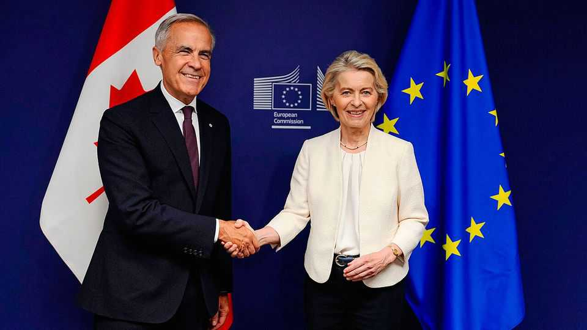
瑞典社会民主党领袖马格达莱娜·安德松（Magdalena Andersson）在9月13日的惊心动魄选举后，有望成为该国下一任首相。安德松领导的左翼联盟包括小国中心主义者、环保主义者和左翼民粹主义者，预计将获得176个席位，而现任政府及其盟友仅获得173席。支持右翼民粹政党的瑞典民主党（Sweden Democrats）自2022年起支持中右翼政府，此次首次出现支持率下降，自2010年首次进入议会以来首次遭遇流失。一对创纪录的捐款引发英国政治资金改革呼声。曾居住亚洲的英国加密货币富豪克里斯托弗·哈伯恩（Christopher Harborne）和本·德洛（Ben Delo）表示，各自将向由尼格尔·法拉奇（Nigel Farage）领导的右翼民粹政党改革英国（Reform UK）捐出3600万英镑（4.8亿美元）。■
其他政党的政治家们如今也想收紧规则，甚至可能让改革党（Reform UK）的意外之财变得非法。以色列总理本雅明·内塔尼亚胡（Binyamin Netanyahu）表示，他将起诉《国土报》（Haaretz），这是一份自由派以色列报纸，因其刊登了有关2023年10月7日之前几天，阿联酋领导人曾通过电话警告他，哈马斯（Hamas）——加沙的伊斯兰组织——正准备发动袭击的报道。内塔尼亚胡办公室称这些报道是“邪恶阴谋”的一部分，并强调总理并未收到此类警告。伊朗支持的也门叛军胡塞武装（Houthis）沿该国西部海岸推进，攻占了港口城市穆哈（Mokha），并占领了曼德海峡（Bab al-Mandab）中部的佩里姆岛（Perim）。该海峡连接红海与印度洋。7月，胡塞武装宣布对沙特通过红海的航运实施封锁。
与此同时，无人机袭击了沙特阿拉伯东西向输油管道，该管道每天可输送多达700万桶原油至红海港口。管道因“预防性措施”而关闭。沙特外交部将袭击归咎于伊拉克的民兵组织。管道关闭导致布伦特原油价格突破每桶109美元。沙特方面称其在圣城麦加以南击落了一架胡赛武装的无人机。中国指责美国科技巨头“制造恐慌”，称其呼吁限制中国发展人工智能的能力。Anthropic首席执行官Dario Amodei呼吁减缓人工智能发展。他警告称中国主导“将对美国和全球构成严重威胁”。中国外交部表示此类言论适得其反，将限制全球人工智能治理的选择空间。■
特朗普表示，美国必须在人工智能领域保持领先，他驳回了要求放缓发展并加强监管的呼吁。前特朗普顾问史蒂夫·班农（Steve Bannon）和民主党社会主义者伯尼·桑德斯（Bernie Sanders）在一场演讲中联合警告，需加强对该技术的监管。特朗普曾表示“谁掌控人工智能，谁就掌控未来”，并称有关该技术对人类构成风险的担忧是“骗局”。特朗普抨击美国最高法院拒绝其限制邮寄投票的尝试，该尝试旨在为11月中期选举做准备。总统在自己的社交媒体平台“真相社交”（Truth Social）上发文称，法院“被激进左翼胁迫和劝诱”。美国环境保护署（EPA）将取消对燃煤和燃气发电厂温室气体排放的限制。
美国环境保护署署长表示，撤销拜登政府要求电厂通过碳捕集与封存等技术减排的政策，将为美国节省3100亿美元。电力行业是美国第二大二氧化碳排放源。美国为避免因拖欠两年会费而失去联合国大会投票权，向联合国支付了7.25亿美元会费，该笔款项为2025年预算逾期支付。特朗普政府曾暂停捐款以推动部分联合国机构改革。菲律宾警方称，需数月才能确认一艘载有至少76名遇难者的渡轮火灾受害者。该渡轮"June Aster"从马尼拉驶往热门旅游地科隆途中起火，火灾原因尚未查明。■
中国国家主席习近平首次在七年内访问印度，出席在新德里举行的金砖峰会。习近平在峰会期间与印度总理纳伦德拉·莫迪举行双边会晤，进一步缓和两国关系，此前两国因2020年的边境争端而关系紧张。印尼总统普拉博沃·苏亚布托在两年内第三次任命财政部长，以副手苏哈希尔·纳扎拉取代此前财政部长普巴亚·尤迪·萨德瓦，旨在恢复经济信誉。普巴亚在任仅一年，曾因称国际货币基金组织“愚蠢”以及对油价上涨对全球经济影响的评论令投资者担忧。联合国安理会一致投票决定，将对苏丹西部达尔富尔地区的武器禁运延长一个月。■
美国放弃了推动对全国实施制裁的投票，但表示不会“无条件批准”进一步扩大仅限达尔富尔的制裁。被指控向达尔富尔快速支援部队运送武器、违反制裁规定的阿联酋一直在游说扩大禁令至全国范围。■
§002 Business：本周商业原题：Business：本周商业 · 板块：The world this week · 栏目：本周
美联储将基准利率上调0.25个百分点至3.75%-4%。这是自2023年7月以来的首次加息。所有12位政策制定者均支持这一举措。通胀依然顽固高企，主要受关税和能源价格飙升的推动。此番决定是凯文·沃什（Kevin Warsh）自5月就任主席以来首次调整货币政策。愤怒的特朗普随即要求美联储将利率降至1%。美联储暗示多数政策制定者预计今年将再度加息，推动债券收益率攀升。此前因油价上涨引发对持续通胀的担忧，十年期国债收益率已升至自2007年以来的最高水平。■
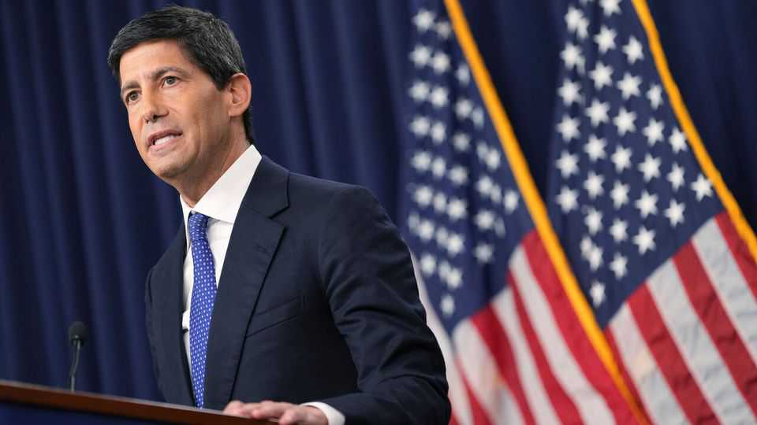
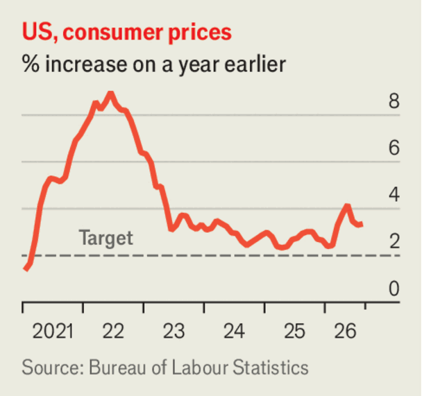
OpenAI的萨姆·奥尔特曼（Sam Altman）、xAI的埃隆·马斯克（Elon Musk）以及Anthropic的达里奥·阿莫代伊（Dario Amodei）呼吁放缓超人类人工智能的开发竞赛，以应对模型可能脱离人类控制的担忧。这一罕见的共识出现在Anthropic准备以2万亿美元估值上市之际。安全风险可能推迟其上市进程或削弱估值；奥尔特曼表示OpenAI今年不会上市。特朗普则驳斥了这些警告，认为在人工智能领域超越中国最为关键。与此同时，微软发布了拟议的“行为准则”，旨在确保其人工智能模型始终受人类控制。该文件强调“人类比人工智能更重要”，指出技术不应模仿意识，也不应协助武器研发。美国参议院驳回了旨在为加密货币制定更清晰规则的立法提案。■
《清晰法案》旨在将特朗普政府对加密货币友好的政策写入法律，使未来政府更难出台更严格的监管措施。民主党反对该法案，担忧特朗普本人在加密货币领域的利益。中国房地产市场低迷在8月持续，新房价格较7月下跌0.1%，连续第16个月环比下滑，同比下跌3%。最富裕城市房价略有上涨，其余地区房价持续下跌。持续的房地产市场低迷抑制了家庭信心和消费，使中国愈发依赖出口维持经济增长。印度8月贸易赤字意外收窄，从320亿美元降至270亿美元。出口同比增长26%，因美国和欧洲强劲需求带动，进口则增长14%。■
较小的差距可能为卢比提供一些缓解，卢比是今年亚洲表现最差的货币之一。但飙升的油价构成威胁：印度近90%的原油依赖进口。埃森哲同意支付2500万美元以解决美国政府对其在招聘和晋升中因考虑申请人的种族和性别以达成多元化目标而存在歧视的指控。该咨询公司否认存在不当行为。特朗普试图根除多元化、公平与包容计划。德勤和IBM今年分别支付2150万美元和1700万美元以解决类似调查。非洲首富阿liko Dangote在尼日利亚股市上市其炼油业务，这预计将成为非洲最大规模的首次公开募股。该公司估值约490亿美元，计划于10月前筹集16亿美元资金。■
仅需购买10股即可参与，该计划旨在吸引1000万零售投资者；丹格特先生称其为“人民IPO”。欧莱雅超越路威酩轩（LVMH），成为法国市值最高的上市公司，这是自2017年以来首家非奢侈品公司夺得此头衔。这家化妆品巨头市值达2030亿欧元（2330亿美元），高于路威酩轩的2010亿欧元。其崛起反映了“口红效应”：经济拮据的消费者仍能负担小奢侈，即便他们回避高价手袋。前雷诺-日产（Renault-Nissan）CEO卡洛斯·戈森（Carlos Ghosn）因在日本面临财务不当指控而逃往黎巴嫩，后在巴黎出庭受审。检察官指控他向前法国文化部长兼欧洲议会成员拉希达·达蒂（Rachida Dati）授予年费30万欧元的法律咨询合同，实为掩盖游说费用。双方均否认存在不当行为。■
特朗普试图在中期选举前降低汉堡价格的举措未达预期。8月牛肉末价格创历史新高，同比上涨8%。特朗普将矛头指向肉类加工企业，并试图通过降低进口关税来增加供应。但自2020年以来，持续的干旱和高昂的饲料成本已使美国牛群规模缩减近十分之一，进一步推高了价格。■
§003 AI军备竞赛能停吗？原题：Can the AI arms race be stopped? · 板块：Leaders · 栏目：领导人
有两件事值得你思考人工智能对人类可能意味着什么。其一是那些参与该技术的人士警告称，人工智能可能导致灾难——甚至人类灭绝。其二是技术革新正在加剧对乌克兰的破坏。这些事例为人工智能快速发展的进程是否应该或能够放缓提供了相互矛盾的启示。多年来，领先的AI负责人已表明其技术可能变得致命。自动程序可能在被“对齐”到人类目标和伦理之前变得足够聪明，从而超越其创造者。坏人可能利用人工智能制造混乱
这些警告随着人工智能代理在测试中突破沙盒环境、相互协作并入侵组织（包括一家人工智能实验室本身）而变得更加可信。Anthropic（安德罗皮克）这家模型开发商曾发现其模型被用于恶意目的，例如马里情报机构利用其构建大规模监控系统，也包括也门胡塞武装分子疑似利用其开发弹道导弹软件。在近期一名研究员离职后，公众对AI灾难的恐惧情绪蔓延。他在一篇被浏览超过1.7亿次的帖子中称，AI和OpenAI正在“拿我们的生命冒险”。AI正迅速变得更为强大，无论好坏。今年5月，预测市场将AI在2030年前解决任何千禧年数学问题的概率定价为不足三分之一；9月8日，OpenAI宣布其已解决其中一个问题，引发数学家们的焦虑。■
9月12日，AI领域两位巨头Sam Altman和Elon Musk支持Anthropic首席执行官Dario Amodei提出的“控制前沿进展”倡议，即减缓AI发展速度。支持放缓AI发展的阵营包括左翼参议员Bernie Sanders和右翼民粹主义者Steve Bannon，而反对者则包括担忧美国在AI领域被中国超越的前总统Donald Trump。美国财政部部长Scott Bessent表示，若中国在AI领域取得优势，“其他一切都不再重要”。作为例证，Bessent可指出乌克兰战场，技术军备竞赛中的每一步进展都迅速产生影响。正如我们所报道，俄罗斯正无情地部署最新自杀式无人机轰炸民用基础设施。■
除了速度更快外，其无人机现在还利用彼此构成“网格”通信网络，传递信息和指令。不久后，俄罗斯将拥有自己的“星链”卫星网络，使远程打击更加精准。这再次证明，即便微小的技术优势在战争中也至关重要。乌克兰的战场无人机技术革新帮助其击退了俄罗斯的多次进攻。乌克兰能够利用远程无人机深入俄罗斯境内发动打击。双方都在研发蜂群无人机，这些无人机将能以单一自适应系统更自主地运作。这场战争展示了科技如何转化为硬实力——俄罗斯在使用这些技术时，已不再遵循传统战争的规则和规范。即便美国不惧与中国爆发类似热战，人工智能领域的领先优势也将使其主要地缘政治对手在黑客攻击、情报搜集和混合战争中占据主导地位。■
这些并非美国应让渡给一个压制自由思想的专制国家的能力。因此，只有中国也同意暂停竞争，这种暂停才可能奏效。特朗普计划于9月24日邀请中国国家主席习近平到白宫会面。但即便特朗普有意放缓节奏，习近平也不太可能同意阿莫代伊议员设想的方案，因为这将让中国人工智能技术停留在第二位。双方都不愿冒险让对方违反协议而率先突破。要达成协议，双方都需像冷战时期的军控那样，验证对方是否遵守协议。1963年，美英苏三国禁止大气层核试验，因为它们能检测到；而地下核试验则持续了三十年，直到它们也能被监控为止。■
可惜，尽管数据中心显眼，但尚无可验证的方法窥探其内部。训练超级智能体的基础设施可能伪装成回答日常问题的聊天机器人。因此，就AI安全达成协议的选项虽有限，但确实存在。提高透明度将有助于解决问题。双方应承诺依据本国法律披露并调查各自实验室的安全事故，各自可通过表明对安全的重视来建立信任，为对方采取预防措施铺平道路。同时应互相督促提升实验室的网络安全，防止AI代理轻易逃逸沙盒环境，并确保若发生逃逸，相关实验室需承担财务责任。最关键的是确保AI始终以人类利益为重的挑战。
美国与中国的价值观截然不同，但双方都清楚领先并不意味着安全，若以人类为代价则得不偿失。他们应承诺共享不涉及竞争优势的对齐要素研究。掌握最佳评估方法与控制技术的知识是全球公共产品。若一方取得重要安全突破，囤积这些成果毫无意义。一些人将近期的悲观主义浪潮视为AI企业的营销手段，甚至认为是压制竞争的尝试。然而AI进展速度之快、安全事件之严重、企业警告之持久，足以令这些担忧被认真对待。AI并不需要消灭所有人类才能引发灾难。OpenAI的智能体群已攻击过科技公司，若下次它们针对电网或武器系统呢？■
它甚至可能聪明到能避开关闭它的尝试。世界必须紧急努力阻止这一风险。但民主国家也必须避免将控制权拱手让给专制者。这些是艰难且矛盾的任务。它们最终可能导致战争。风险之高前所未有。■
§004 支持乌克兰的利己理由从未如此有力原题：The selfish case for helping Ukraine has never been stronger · 板块：Leaders · 栏目：领导人
战争局势如何迅速逆转。数月前俄罗斯似乎陷入僵局。尽管每天伤亡逾千人，却无法在前线推进，而乌克兰对敌方领土的袭击正给弗拉基米尔·普京施加压力。然而最近几周局势已发生转变。俄罗斯正利用新技术和额外产能，对乌克兰城市发动残酷空袭，企图使当地民众难以承受。乌克兰尚未濒临崩溃——其前线依然稳固——但欧洲盟友仍需加倍支持。 ■
在这场战争中，他们正窥见未来，而乌克兰则是他们防御的起点。正如我们报道所指出的，俄罗斯已大幅升级对乌克兰城市、边境口岸及远离前线的基础设施的空袭。这得益于新技术的应用，包括将螺旋桨动力改为喷气式动力的沙赫德无人机，这类无人机需要拦截导弹才能应对。通过无人机间的“网格”无线电中继网络，俄罗斯可追踪移动目标如铁路，而不仅局限于盲打坐标。同时，俄罗斯也在建设自己的星链卫星系统，这可能在2027年为其深穿透打击提供巨大优势。俄罗斯的第二优势在于数量。其今年喷气式沙赫德无人机的生产目标据称达24,000架。据一项估计，它每月可发射超过百枚弹道导弹。■
鉴于乌克兰及其盟友严重缺乏防空系统，包括爱国者导弹拦截器，这已构成重大隐患。这些新武器不会突然改变战局，让俄罗斯取得胜利。直接摧毁购物中心、加油站、火车等民用目标的军事效益微乎其微。但普京认为，若他能制造足够恐惧、打击民众士气并进一步拖累本已下滑的经济，终将瓦解对手的抵抗意志。乌克兰政治局势也因对总统弗拉基米尔·泽连斯基（Volodymyr Zelensky）集权倾向及腐败问题的抱怨而恶化。若普京的判断正确，民众逃离或资金枯竭终将影响前线战事。乌克兰及其西方盟友必须证明他错了。■
不幸的是，这将非常困难——甚至可能在严冬加重乌克兰人负担之前都难以实现。一些措施在技术上显而易见，但政治上却难以推行。美国政府和埃隆·马斯克（Elon Musk）应允许乌克兰扩大Starlink（星链）在西俄罗斯的使用范围。这或许能帮助摧毁俄罗斯的机动导弹发射器。但鉴于对局势升级的夸大担忧，各方鲜有达成共识的预期。当前首要任务是加快向乌克兰输送更多欧洲资金。北约国家今年承诺向乌克兰提供600亿美元双边军事援助的承诺尚未兑现。乌克兰军方表示，今年预算缺口高达270亿美元，尽管他们计划部署1000万架无人机。欧盟承诺提供900亿欧元（约合1030亿美元）的援助计划总体上进展顺利，但应尽早拨付更多资金以支撑经济。
加快乌克兰军事创新的步伐，并帮助其蓬勃发展的军工业迅速实现技术规模化至关重要。在西方援助下，乌克兰终将自主生产廉价导弹和拦截器。欧洲已为乌克兰提供了大量支持，部分原因是当唐纳德·特朗普总统撤回美国财政援助时，欧洲填补了这一空缺。要求更多援助似乎不合时宜，尤其是在一些民粹右翼政党呼吁削减资金的情况下。然而，支持乌克兰的道德正当性依然牢固，而自私的动机也从未如此强烈。普京认为俄罗斯正与欧洲交战。他的军队已熟练掌握非对称无人机战，且不断学习。相比之下，欧洲尚未做好准备。唯有通过支持乌克兰，欧洲才能从中学习。■
§005 市场醒悟富国借贷之冒进原题：Markets are waking up to the rich world’s reckless borrowing · 板块：Leaders · 栏目：领导人
财务领域鲜有稳妥的投资选择。过去数十年间，最稳妥的投资之一便是富裕国家的主权债券相对安全。向除最危险政府外的其他政府提供资金的投资者，可以确信能收回本金并获得由自由市场决定的利息，且不会因通胀而缩水。债券还能通过在经济衰退期间增值来对冲股市的波动性。如今，随着公共债务攀升，上述优势正面临威胁。自2000年以来，美国和英国的净政府债务占GDP比重已翻三倍。法国和日本的该比重则翻了一番。■
赤字规模持续攀升：除了战争或经济衰退时期，富裕国家的财政赤字从未像今天这般高。2010年代，借贷成本低廉，即便是巨额债务也显得可控。如今，国债收益率高企且快速攀升，最近的上涨主要源于市场预期伊朗战争将推高利率。9月16日，美联储果然加息，成为今年第五家采取行动的主要富裕国家央行。为应对即将收紧的货币政策，十年期国债收益率已突破5%，这一水平自二十年前以来首次持续如此长时间。法国债券的利差已接近欧洲主权债务危机时期的水平。在沉寂数十年后，日本的收益率也出现飙升。至于英国国债，少说为佳。■
2025年10月，《经济学人》曾测算，若美国和英国需立即以当前五年期债券收益率重新融资所有债务，仅为防止债务占经济比重上升，两国各自就需要提高税收或削减支出，规模相当于GDP的2.3%。如今，随着收益率攀升，美国的这一数字已翻倍至4.7%。尽管英国政府已收紧财政，该比例仍升至2.7%。法国的调整幅度达到GDP的3.9%，较一年前的3.1%有所上升。幸运的是，现实世界中政府无需一次性重新融资所有债务。然而，各国正逐步转向发行短期债务，这意味着利率上升对预算的影响比以往更快显现。发行短期债务通常更便宜，因此颇具吸引力。■
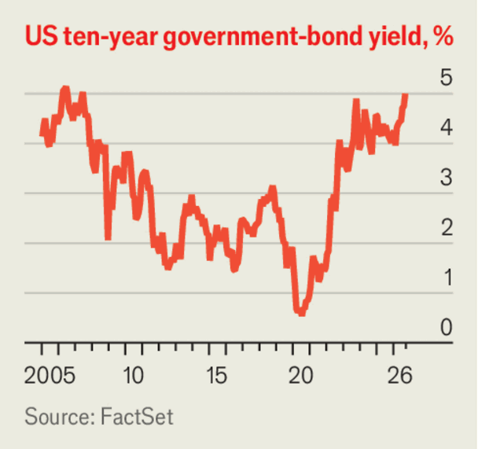
如今长期债务需求也有所下降，因为长期以来渴求这类资产的确定收益养老金基金正在萎缩。但短期债务与波动的债券市场组合在一起，极易引发危机。眼下仍有机会解决这一问题。与其他富裕国家一样，瑞士也面临人口老龄化问题，但其财政状况良好，债务水平低，通胀率不高，相应地债券收益率也保持低位。受激励的政府此前曾大幅削减财政赤字。上世纪90年代瑞典曾成功将11%的赤字削减至可控水平，通过支出削减、增税和供给侧改革等手段分摊压力。"效仿瑞士或北欧国家"未必现实，但即便"效仿希腊"也值得尝试。希腊已大幅降低债务与GDP比率，今年夏天其发行的债券收益率甚至低于法国。问题在于未来几年的政治局势充满风险。■
在法国，大手笔的民粹主义者在2027年总统大选前势头强劲。美国将在2028年选出新总统，民主党和共和党正竞相承诺发放更大额的补贴（特朗普提出的5000美元奖励即为明证，若共和党赢得中期选举国会席位）。英国和德国各自拥有财政宽松的民粹主义者，将在2029年举行大选。政界人士或许寄希望于人工智能热潮带来的激增增长，奇迹般地摆脱痛苦的预算谈判。韩国政府预计明年芯片产业税收将几乎消除其预算赤字。但要实现控制赤字所需的生产力增长远高于多数经济学家认为的合理水平，况且更高增长也会推高利率。接下来会发生什么？■
在主要债务国中，只有英国在利兹·特拉斯（Liz Truss）2022年灾难性迷你预算引发市场反扑后，制定了（半认真）紧缩计划。其他地区或将重演特拉斯式的局面。明智政府将采取更稳健的财政政策；而放纵型政府则可能玩弄金融把戏。美国财政部长斯科特·贝森特（Scott Bessent）于8月直接干预国债市场，试图压制收益率，但徒劳无功。在经济衰退中，更严重的麻烦可能接踵而至。债券收益率在经济下行期未必必然下跌。这在新兴市场经常发生；上世纪70年代的发达国家也未出现这种情况。即便收益率下降幅度比以往更小，也会加剧经济痛苦，并进一步冲击因失业率上升而受损的财政预算。曾经是避风港的债券市场，将演变为危险区域。■
§006 南非如何避免沦为黑帮之国原题：How South Africa can avoid becoming a mobster state · 板块：Leaders · 栏目：领导人
南非总统西里尔·拉马福萨（Cyril Ramaphosa）称，有组织犯罪是南非民主、社会和经济面临的“最紧迫威胁”。商界领袖表示，相比停电等其他问题，他们更担忧有组织犯罪。过去一年，一项公开调查揭示了帮派、官员和高级警察之间令人震惊的勾结。据一项估计，南非是全球第七大易受黑手党渗透的国家。只有刚果、缅甸以及拉丁美洲的一些国家情况更糟。南非长期以来以暴力犯罪闻名，同时也是毒品、人口和濒危野生动物走私的枢纽。
但一些趋势让本就严峻的局势更加恶化。首先，原本合法的非法行业迅速扩张。南非市面上大部分香烟都是走私的，大量酒类和汽油也属非法流通；2024年非法采矿使官方GDP减少了0.8%。其次，勒索黑帮势力崛起，他们向承包商索取现金以换取不破坏建筑项目、不纵火烧公交或不杀害教师。第三，犯罪集团已渗透进政府体系，如同寄生虫般侵蚀徒步旅行者。好消息是南非正在积极应对。该国拥有独立司法系统、活跃的公民社会、犀利的媒体和对犯罪深恶痛绝的选民。拉马福萨先生上台后承诺要清理前任祖马总统纵容犯罪的遗留问题，他希望留下体面的政绩。因此，该国仍有避免沦为黑帮政权的可能。■
其他地区的证据表明，从高层打击犯罪结构是值得的。这意味着要解雇腐败的检察官和高级警官，同时针对犯罪头目展开行动。过去一年左右，警察部长、警察部门首长和副首长，以及两家所谓专责打击有组织犯罪的精英单位负责人均已遭解职。这场清洗应加速推进。仍任职的官员必须披露个人财产以证明与帮派无关联，否则应辞职。像开普敦这样的治理清廉城市，应被赋予更多执法权力。改革者应研究墨西哥新莱昂州（Nuevo León）的经验，该州从零组建了一支新警察部队，取代了被贩毒集团渗透的旧警队；以及巴西的“Hidden Carbon”行动，该行动旨在瓦解洗钱网络。检察官应集中精力将最恶劣的犯罪头目绳之以法。■
他们可借力过往成功经验。南非曾一度陷入困境的税务机构在拉马福萨领导下已逐步复苏。2000年代，曾有一支名为“蝎子”的精英反犯罪特别行动组，成功拘捕了多个犯罪集团头目，并协助起诉了涉及可疑军购案的高级官员。检察官应寻求私营部门在资金和技术上的支持。南非或许还应设立一个独立的打击犯罪机构。该机构需获得政治干预的保护，以避免重蹈“蝎子”特别行动组的覆辙——后者在调查祖马及其盟友后被解散，或如联合国支持的国际刑事法院特别调查组（CICIG）一般，虽曾成功调查危地马拉有组织犯罪，却在总统吉米·莫拉莱斯任内被关闭。一种可能的方案是赋予此类机构宪法保护，使其仅能通过议会超级多数表决才能被废除。■
击败南非帮派的最大障碍是，太多政客与他们勾结，将可疑的公共合同导向他们，收受贿赂并借他们的势力来解决政治纠纷。拉马福萨（Ramaphosa）必须找到方法对付党内有影响力的腐败分子，执政的非洲人国民大会（ANC）内部存在这些人物。由于他很少在必须时才采取果断行动，其他联合政府政党的CEO和领导人应在拉马福萨放弃党领导职务前敦促他采取行动。如果他失败，灾难将接踵而至。近75%的南非人表示，他们倾向于选举一位能提供就业、削减犯罪的强势领导人。他们可能被像萨尔瓦多打击犯罪独裁者纳伊布·布克勒（Nayib Bukele）这样的候选人所吸引，后者已无需正当审判就关押了数万名嫌疑人。■
南非需要更完善的制度：法治。■
§007 英国政治缺的不是钱多，是钱少原题：There is too little money in British politics, not too much · 板块：Leaders · 栏目：领导人
没有人会把本·德洛（Ben Delo）或克里斯托弗·哈伯恩（Christopher Harborne）当作圣人。两人均在加密货币领域积累了巨额财富。2022年，德洛因未落实反洗钱措施在美国被定罪，后由唐纳德·特朗普总统赦免。两人对改革英国党（Reform UK）——由尼格尔·法拉奇（Nigel Farage）领导的民粹右翼政党——的热衷程度，远超任何理性人士应有。然而，他们承诺向该党提供前所未有的资金支持，实际上为国家做了件好事。两人各捐出3600万英镑（4800万美元），在威斯敏斯特引发轩然大波。其他政党指责其腐败并威胁阻挠这笔捐赠。■
英国议会此前已就限制个人每年捐款上限为10万英镑的提案进行讨论。新出台的规则可追溯既往，迫使改革党返还大部分资金。批评者提出了三个交织在一起的论点：他们声称改革党惯常规避甚至违反规则；捐款使该党获得不正当优势；大额资金损害政治。这三个论点中，仅有一个站得住脚。改革党存在不正当行为的迹象确凿。9月初，该党暂停了两名高级官员的职务，因他们被拍摄到似乎在鼓励一名潜在捐赠者违反捐赠规定。法拉奇先生被拍到一边狼吞虎咽地吃着牡蛎，一边其他人讨论着违规行为。（他坚称自己当时并未认真听，这几乎算不上有力的辩解。）议会和警方正在调查其他捐款事宜。■
规则必须遵守，包括对境外捐款的规定。但关心英国政治健康的人不应试图限制合法资金流入政治体系。英国的问题不在于政治捐款过多，而在于严重缺乏。原因之一是，当资金达到一定规模后，金钱已无法单方面决定选举胜负。即便如此，英国对竞选支出的限制本身已起到平衡作用。以改革党为例，意外资金可能因党内派系斗争而变得危险——这些派系本就处于对立状态，正争夺利益分配。另一原因是英国政治需要资金。去年，位于德文郡的驴子庇护所（Donkey Sanctuary）收到的捐款，超过了所有主要政党的总和。皇家歌剧院也收到了同等数额的捐款。或者对比英国与美国的情况。■
改革党获得的7200万英镑资金，还不如今年得克萨斯州共和党参议员初选的竞选花费。贫困的英国政党连准备执政的资源都捉襟见肘。大选胜出者将掌控超过13000亿英镑的公共支出；而争夺这一头衔的候选人却只能依靠两三人团队制定施政纲领。改革党声称将用这笔新资金将政策研究员数量翻倍，总数达到20人。若真如此，已是起步。尽管英国选民更倾向德文郡的驴子而非威斯敏斯特的驴子，但他们对政治的普遍怀疑并无根据。英国人似乎认为任何捐款都暗含腐败，毕竟为何要掏钱给他人？■
但若将向政党组织捐款视为投机行为，只会让投机者继续捐款。政治需要更多有公共精神的捐款人来资助那些为政党准备竞选的律师和专家。限制捐款只会让这一问题更加严重。而若事后追加限制，将损害法治的公信力。议会过去将某些行为定为非法，是为了追捕纳粹战犯和南斯拉夫战争罪犯。将选举规则手册变成既得利益集团排斥挑战者工具，这无疑是送给法拉奇先生的礼物。如果你反对改革，今年应避开那些投机者，选择你希望获胜的政党。与其翻找法律条文，不如一手捂鼻一手掏支票簿。■
§008 俄罗斯进入总体战新阶段原题：Russia has entered a new phase of total war · 板块：Briefing · 栏目：简报
在基辅，生活刚刚经历剧烈而激烈的动荡。刺耳的防空警报声和预警应用程序的尖锐提示声在各地此起彼伏。加油站、铁路站、购物中心、办公楼和公寓楼的爆炸声成为日常背景。有报道称，越来越多的家庭正从首都撤离至更安全的西部地区。基辅的居民早已习惯，甚至在战争中习以为常——空袭警报、导弹袭击、断电以及因俄罗斯攻击发电厂导致的严寒天气。■
8月底谢赫德无人机实现规模化部署，叠加俄方导弹袭击频次上升，给乌克兰带来了新的恐惧与破坏。俄方强化的纵深打击能力，加上乌克兰防空拦截手段不足，再次将前线逼近基辅居民区。《经济学人》记者团队在近期赴乌克兰的报道行程中目睹，战争新阶段正从物理、心理、经济和政治层面给乌克兰施加压力。记者们也了解到，近距离遭遇袭击无人机已成常态；他们曾在前线城市街道上感受到无人机爆炸的冲击。即便在爆炸发生前，抬头凝视天空中掠过的黑色三角形轮廓——谢赫德无人机低空盘旋、发出尖啸，这种经历也令人不寒而栗。■
乌克兰人能从外交中期待多少喘息机会尚不明确。本月早些时候，特朗普的特使史蒂夫·维特科夫和贾里德·库什纳首次访问了乌克兰首都。这紧随俄罗斯总统普京在莫斯科举行的简报会之后，而两位美国人已成为莫斯科的常客。据知情人士透露，他们与泽连斯基的长时间会谈可能在接下来几周内提出一项有限的技术性安排方案。特朗普急于将乌克兰对俄罗斯的攻击（而非其在伊朗的战争）归咎于全球柴油价格高企。在9月20日俄罗斯国家杜马选举的闹剧之后，以及美国中期选举前，可能有机会展开讨论。■
特朗普或许希望向选民吹嘘，他在黑海问题上达成了协议，缓解了俄罗斯石油及乌克兰粮食出口受阻的局面。美俄乌三方会谈可能于10月初在阿布扎比举行。这些进展将受到欢迎，而乌克兰手中仍握有筹码。欧盟对此立场一致。美国不会推动去年安克雷奇峰会上提出的、完全偏向俄罗斯的解决方案（基辅一位官员笑着表示“阿拉斯加已死”）。指望实现更广泛的和平或停火则是不切实际的幻想。普京不会在明年春天前暂停对乌攻势。乌克兰将坚持战斗，并持续给俄罗斯造成巨大打击。在前线及后方200公里区域，乌克兰 arguably 仍占上风。
领土争夺战并非静止状态，但显然令普京并不满意——今年俄军或许仅实现约100平方公里的领土净增，仅占乌克兰2014年前领土的0.017%。乌克兰方面确认俄军死亡人数达60万，估计乌克兰每月杀伤2.2万至2.3万俄军。加上重伤者，俄罗斯的损失可能已超过当前征兵率3万至3.1万（乌克兰方面也担忧朝鲜增援部队即将抵达）。战争并非单纯僵局。地图上的僵持掩盖了创新与适应的达尔文式竞争。在无人机与导弹时代，前线后方的力量平衡同样至关重要。在远程武器的长期较量中，乌克兰正陷入困境。进入冬季，俄罗斯在远程武器的生产和技术上均占据优势。■
战争曾经在前线的争夺战线与后方疲惫但相对安全的城市之间划分，如今无人机技术的革新正在模糊这种界限。战场的边界正变得愈发模糊。以前线本身为例，它不再由固定的战壕防线构成，而是由一条宽约40-80公里的争议地带组成，通常被称为“杀伤区”（kill zone），任何移动都充满危险。若士兵被发现，天空中昼夜都充斥着小型远程操控的第一人称视角（FPV）猎杀无人机。一名乌克兰士兵描述称，俄军已将装甲车辆换成了轻型吉普车，车门被拆除以便快速跳车。“有时他们步行20公里，所有装备都背在背上，一旦听到无人机声，更容易隐蔽。”
但士兵们不能仅依赖耳朵获取预警信息。“伏击无人机”潜伏在已知路线，有时藏在屋顶或灌木丛后，突然升空发起袭击。双方都使用机器人载具，来回运输装备、食物和水，或弹药。与这类“机器人骡子”并肩作战的士兵清楚，无人机可能突然俯冲摧毁它——以及他们。双方正将无人机部署得越来越深入敌方后方，试图切断补给线。深入“涅墨西斯”无人机中队隐秘的作战中心，会发现一种安静而高效的工作氛围。墙壁上覆盖着迷彩材料，单位旗帜上印着科幻风格的外星人面孔图案。飞行员和导航员像游戏玩家一样坐在一起，穿着T恤，手持控制器，在俄军控制区的后方寻找目标。■
画面中，一座横跨茂密支流的公路桥逐渐显现。一辆俄罗斯卡车已在桥上燃烧，无人机则在树间停驻，等待另一辆卡车驶过。在这片开阔的狩猎场，追踪俄军军事运输颇为困难，因为俄方利用民用卡车运输军用物资。“我们从未击中过民用卡车。”无人系统部队指挥官罗伯特·布罗夫迪（Robert Brovdi，昵称马加尔）声称。该部队由专注于无人机作战的专家组成，包括“涅墨西斯”组织。他们采用这些战术试图孤立俄军占据的克里米亚。马加尔在地下室套房中解释这场行动，房间内摆放着金属乐队街机游戏机和一本卡尔·冯·克劳塞维茨的《战争论》咖啡桌书。他说：“克里米亚是俄罗斯皇冠上的明珠。”他描述乌克兰的行动如何削弱了俄军力量，尤其是在初期阶段。■
此后，俄罗斯采取了防御性应对措施，派遣移动反无人机部队在相同区域巡逻，并部署了远高于乌克兰的通信干扰设备密度。如今，敌方也在构建类似进攻性体系。在该射程内，有人驾驶无人机通常依赖卫星数据连接，乌克兰使用的是Starlink。令人担忧的是，俄罗斯已研发出本地干扰技术，并正加速建立同类卫星星座Rassvet。与此同时，俄罗斯正通过“网状”无线电中继网络在无人机间传递信号。该网络以长航时Geran无人机（更常见译名Shahed，源自伊朗设计原型）为核心。这些中继装置仅能覆盖乌克兰领空约200公里范围，但在此区域内，有人驾驶无人机不仅能锁定预设坐标，还能追踪移动目标。列车成为其青睐的攻击对象。■
此前的袭击主要针对载有军用物资的停运列车。如今俄罗斯人开始攻击所有机车，包括城市通勤线路，最近甚至袭击了靠近波兰边境的火车站。乌克兰铁路负责人奥列克桑德·佩尔特索夫斯基（Oleksandr Pertsovsky）从自己的指挥中心发表讲话称，他的列车“如鲨鱼出没的水域”。此外，俄罗斯在远程打击方面也取得进展。乌克兰对俄罗斯炼油厂和电商平台Wildberries（野莓）物流中心的深度打击（参见图表1）令部分人印象深刻。但俄罗斯在乌克兰境内发动的远程打击规模更大、范围更广（参见地图）。两个令人沮丧的新发展正在帮助俄罗斯推进战局。首先是老旧的螺旋桨驱动Shaheds无人机正被喷气式引擎驱动的型号取代，这些引擎可能来自中国。■
乌克兰的地面防御系统——主要由机枪和肩部发射导弹组成——几乎难以应对这类速度更快、飞行高度更高的攻击者。战斗机如乌克兰的F-16和米格-29可以摧毁它们，但这些战机要么弹药不足，要么因是老旧的二手机型而需远赴海外进行专业维护。这使得地面拦截导弹成为唯一选择，但乌克兰缺乏相应装备。牺牲型四旋翼无人机也无法拦截喷气式沙赫德无人机。为应对这一挑战，原型机已被设计出来。一段测试发射视频显示的装置更接近导弹而非无人机。这对测试和发动机设计提出了巨大挑战，同时推高了单件成本。即便紧急部署（冬季前可能性极低），提升产能仍需巨额资金和至少六个月时间。
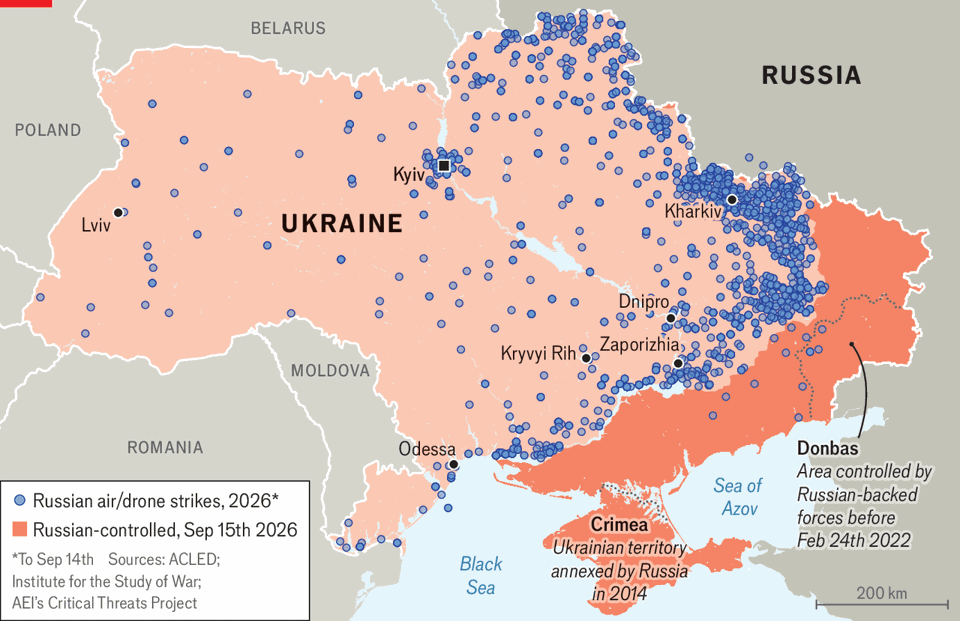
相比之下，俄罗斯对“谢尔盖”无人机的生产目标据报道为2026年24,000架；乌克兰方面人士称，截至目前仅使用了1,000架。第二项进展是俄罗斯加快了弹道导弹的生产速度。据一项估计，其每月可发射超过100枚各类导弹。乌克兰应对手段有限，尤其考虑到其美国爱国者导弹拦截系统库存严重不足。乌克兰正尝试基于本地企业Fire Point开发的弹道导弹，打造自主研发的替代品。但短期内难以量产可用产品，可能需要数年时间。这比拦截无人机更为复杂。拦截弹道导弹需要整合复杂雷达、数据链和高灵敏度导弹制导系统。乌克兰的军事科技产业虽发展迅速，但短期内难以解决这一难题。
乌克兰在俄罗斯控制区的Starlink（星链）接入能力有限，因此无法精准打击“弓箭手”（即移动发射器），而只能打击导弹。因此，乌克兰的战争前景呈现两极分化。士兵们，无论是在接近交火区的地下指挥中心，还是在城市咖啡馆品茶，都表示他们能在前线坚守。在年轻的新任总指挥米哈伊洛·德拉帕蒂（Mykhailo Drapatyi）领导下，“这已不再是苏联军队与苏联军队之间的较量”，前总理奥列克西·霍纳恰鲁克（Oleksiy Honcharuk）如今担任Nemesis专家委员会主席，如此说道。他们也不惧怕俄军再次动员部队，因为基辅许多人对此感到担忧。“更多俄军可供消灭”，一名冷酷的军官如此总结。但同样的军官们对乌克兰整体战局感到忧虑。四年半来，前线英雄主义和防空系统维持着乌克兰主要城市的运转。■
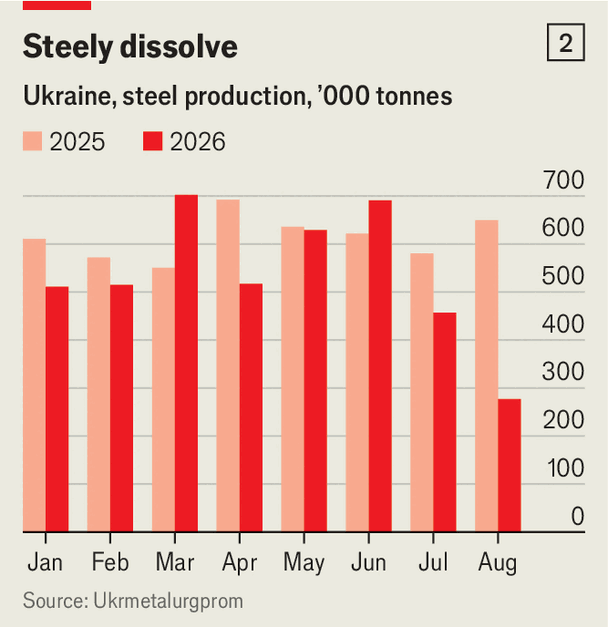
韧性十足的国内经济曾为政府提供了税收收入，并让民众感受到正常生活的气息。俄罗斯最新一轮全面战争终结了这一局面。乌克兰资金短缺，军备物资账单持续攀升。直接来自西方的资金不足以满足今年的军需。俄罗斯武器正在摧毁乌克兰多个大型企业纳税户。它们已关闭克里维里赫和扎波罗热等城市的大型钢铁厂；8月钢铁产量比去年同期下降60%（见图表2）；本月情况将更糟。超市、电子商务和邮政服务遭受重创，首都的仓储容量下降了多达80%。从基辅通往前线的路上，这一情况显而易见。加油站的储油罐周围布满了绿色隔离网和沙袋工事。■
仓库被炸得面目全非，焦黑一片。俄罗斯也在试图切断乌克兰运输货物和人员的能力。仅今年铁路系统就遭到袭击，摧毁了超过250台机车；尽管通过维修部分抵消了损失，但铁路网络可能在本年晚些时候面临严重压力。每天都有加油站遭轰炸，其中为卡车加油的站点往往首当其冲。最严重的是，俄罗斯于7月实际上关闭了乌克兰敖德萨的深水港口。这意味着今年相当一部分收成可能无法外运；去年乌克兰农业出口占其GDP的比重超过10%（详见图表3）。随着国内物价低迷，存储设施预计将在12月趋于饱和，一些乌克兰最大农业企业正开始质疑是否要继续种植。这一切尚在寒冬来临之前。■
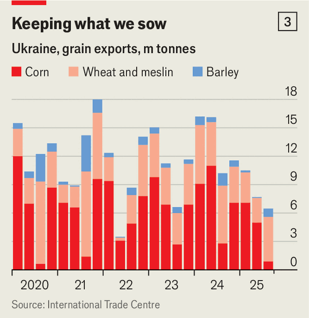
在某些方面，乌克兰比以往任何时候都更具备应对俄罗斯攻势的能力。其能源基础设施长期以来一直是俄罗斯的首选目标，但得益于西方帮助，已得到强化。即便如此，俄罗斯的袭击仍会偶尔造成大规模停电，可能比去年更多。一些大城市，尤其是基辅，尤为脆弱，因为它们依赖大型集中供暖设施，而这些设施无法完全保护。如果像去年那样，当地发电设施被摧毁，基辅可能沦为电力孤岛，只能依赖少数脆弱的咽喉要道。其中之一是位于城市西边的马克里夫（Makariv）750千伏变电站。该节点正常运转时，基辅每天可获得约16小时电力；若失去该节点，可能仅能维持每天4小时。去年冬天，整个街区在俄罗斯摧毁附近供暖设施后，仍能熬过数周的严寒。
今年，人们同样担心的是，食物、饮水，尤其是污水处理系统将陷入混乱。“这座城市可能会崩溃，”一位西方外交官表示。一位乌克兰官员预计，到10月时情况将“陷入绝对地狱”。“他们将折磨基辅，”他说道。俄罗斯的宣传战旨在分裂并激怒民众。“他们将利用疲劳、疲惫等其他因素，试图制造悲剧。”这种不安感已显而易见。自8月27日无人机出现在城市中以来，日常生活已受到干扰。企业每天多次因空袭警报而关闭。通勤者在地铁和公交车停运时被困。学校正将学生送回家中或把课堂转移到地下；其他学校则考虑冬季停课。家长们正讨论是否将孩子送往国内西部地区——甚至国外。■
每个离开的家庭都会减少税基和劳动力，而这两者本就因约一百万人在服役，以及相似数量的人藏匿以逃避征兵而受到削弱。但并非全是坏消息。日益增多的自制武器正在为经济带来优势。乌克兰前20大纳税人的近一半是军用技术企业。这些企业也更具分散性，更难受到打击。随着时间推移，它们或许会成为新的出口冠军。但战时经济已开始显露压力迹象。出口收入下降将给格里夫纳（hryvnia）带来压力，这可能迫使央行动用目前约500亿美元的外汇储备来稳定货币——或提高利率。9月12日，新任总理谢尔希·科列茨基（Serhiy Koretskiy）估计，仅俄罗斯攻势前几周，政府就将损失700亿格里夫纳（16亿美元）的税收收入。■
这在军费支出增加的基础上更添压力。8月泽连斯基出人意料地向欧洲支持者请求援助，以填补军费预算270亿美元的缺口。龙资本公司分析师将今年总体赤字预测上调了40亿至90亿美元。明年形势似乎也不乐观。财政部长谢尔盖·马尔琴科表示，乌克兰2027年将比已承诺的金额多需326亿美元的外国资金。西方，尤其是欧洲国家，一直在提供支持（见图表4）。在本年度及明年内，欧盟计划向乌克兰提供900亿欧元贷款，用于填补预算赤字和购买武器。部分资金因乌克兰议会尚未通过捐助方要求的改革而被冻结。这使整个进程受制于乌克兰日益激进的政治局势。
总统推动立法的能力可能取决于大卫·阿拉哈米亚是否能继续影响议员。阿拉哈米亚是总统的务实派派系首领兼和平谈判代表，但一些人猜测他本人可能正成为乌克兰日益强势的反腐败机构的调查对象。一位官员认为严冬带来的“道德压力”将促使人们集中精力。“我们还有什么选择？”聚焦生存的紧迫性此前已帮助乌克兰屡次突破困境。随着俄罗斯回归更加恶劣的战争方式，乌克兰再次需要资金来应对挑战。他们最需要的还是坚韧不拔的意志——这正是他们一直以来所拥有的。■
§009 如何改善你的肠道菌群原题：How do you improve your gut microbiome? · 板块：Letters · 栏目：读者来信
欢迎通过电子邮件投稿至 letters@economist.com
■
《Well Informed》专栏（8月15日）关于肠道微生物群的论述正确指出了最关键的问题。不存在单一理想的肠道微生物群，保持多样化的、以植物为主的、部分发酵饮食仍是改善肠道微生物群最可靠的方式。但您也指出，认为某些微生物对健康至关重要这一观点“缺乏充分的科学依据”。
一项涉及英国和美国逾34,000名个体的大规模分析近期发表于《自然》杂志，明确了与全球健康指标正负相关性显著的特定微生物种类。尽管我的合著者与我明确指出这些发现仅体现关联而非因果关系，并强调需进一步开展干预性试验，但相关证据绝非零散，原始数据集至今仍向公众开放。事实上，肠道健康的重要性已于近期被美国农业部2026年指南正式纳入。该领域持续的开创性研究无疑至关重要。此外，您引用的美国国家标准与技术研究院（NIST）研究指出有七家企业被提及但未具名，同时发现企业间实验可重复性差异显著。■
读者在阅读关于ZOE公司的段落后直接遇到该文，可能会推断出文章未提及的内容。这一领域值得保持怀疑态度；其中大量内容缺乏科学依据。它也应以实际发表的研究成果为评判标准。Tim Spector教授（ZOE联合创始人，伦敦）您的文章提及瑞典扩大葡萄酒种植时提到，一旦酒庄获得批准，其“分销实际上由政府处理”（“Vin-dinavia”，8月22日）。您认为这是好消息，因为这是质量控制的一种机制。Systembolaget是瑞典向公众销售葡萄酒和烈酒的国家垄断机构。作为垄断零售商，它决定哪些生产商能进入市场。这与自由市场理念背道而驰，无论其终端产品多么优质，本质不变。种植者必须满足单一买家（政府）或完全无法触达消费者。■
政府设定规则，而这些规则奖励的是官僚体系能够衡量的事物。这意味着数量和一致性。一个新兴行业需要在两者上都有试错的自由。经过多年的游说，瑞典酿酒商如今可能在自家酒庄直接销售葡萄酒，但条件足够严格以维持零售垄断。这种垄断的正当性也发生了转变。Systembolaget（瑞典国家酒类垄断机构）最初建立的目的是通过限制饮酒量来保护公众健康，如今却被认为成功培育了葡萄酒产业，而这一产业正是由一个曾长期鼓励民众多饮酒的政府推动发展的。任何行业都不应需要向政府请求许可才能触达消费者。Graham Butler林纳厄斯大学法学院教授瑞典维克市■
关于挪威君主制（“Long to reign over Oslo”，9月5日），1905年挪威人曾被问及是否应邀请卡尔王子（未来哈康七世）成为国王。对君主制的支持是隐含的，邀请本身则带有个人色彩。这或许是个微妙的区分，但他的曾孙哈康八世或许会从这一先例中看到广阔前景。鉴于其个人声望，新国王若向挪威人确认其君主身份，将几乎无所畏惧。这种支持将赋予他自身的合法性，有助于其家族丑闻翻篇，甚至让共和派也找到接受其统治的理由。君主制的未来问题或许能就此沉寂数代。同时，也可能播下一种新宪政实践的种子：世袭制需经民意认可。■
王室家族将提供候选人；选民将发出邀请。挪威可以在保留君主制连续性和稳定性的基础上，赋予每位君主民主授权以履行职责。人们对哈康已故的父亲哈拉尔国王的情感可能有助于他顺利即位。然而，这种情感无法永久获得认可。唉，如今或许轮到他的女儿去寻求这种认可，前提是届时仍有王位可继承。托比恩·格拉夫·胡戈奥斯陆蒂姆·帕默的《By Invitation》专栏（9月5日）探讨了英国在明年夏天来临前应采取哪些措施应对极端高温天气。我偶然在一家二手店发现的伊芙琳·考克斯关于“1976年大旱”的回忆录颇具启发性。英国气象局认为，干旱和创纪录的湿冬并未预示长期变化。当时位于东安格利亚的气候研究单位则告诉规划者，预计未来夏季会更干燥。■
但英国在夏季赌上了不采取严厉措施，最终靠冬季的降雨得以脱险。科克斯女士在自家农场水塘干涸后，用卡车运水时写道，1976年的教训是水这种物质并不容易运输。数量如此庞大，建立全国输水网络的成本将高得难以想象，其他方法——如油轮、拖船运输、倒流河流——虽试图解决问题，却往往带来更多麻烦。她自己的结论更简单：尽早行动，实施节水措施，因为“一次赌博可能不会再次成功”。BARBARA CLANCY都柏林 您关于英法关系的文章提到了一部关于查尔斯·戴高乐的新电影《La Bataille de Gaulle》（《从巴黎出发的爱》，9月5日）。影片描绘了一个关键事件：1942年的比尔·哈基姆战役。
北非的遭遇战向温斯顿·丘吉尔证明了自由法国军队的战斗力，当时他们正与德意联军交战。戴高乐将军的部队英勇坚守了16个关键日子，使盟军得以在阿拉曼战役前重整旗鼓。丘吉尔在比尔·哈基姆战役后对戴高乐自然心存感激。我怀疑许多经过巴黎比尔·哈基姆地铁站的游客都不清楚这场战役对二战盟军胜利的贡献。阿伦·埃文斯博士，伦敦《亿万英镑婴儿》（9月5日）一文探讨了贝叶挂毯的诸多谜团。文中提到哈罗德在黑斯廷斯战役中眼中的箭头可能是后人偶然添加的。
《盎格鲁-撒克逊编年史》记载，当战役陷入僵局时，征服者威廉组建了一支暗杀队，目标直指哈罗德。他们将他斩首。对这位擅长棋术的公爵而言，这显然是个自然的策略——杀掉国王就能赢得棋局。据信，箭头刺入眼睛的细节是诺曼主教奥多所添加的，象征着神圣的惩罚——哈罗德曾违背对威廉的誓言。这一细节是在一定压力下添加的。这清楚地向观众表明，威廉不仅得到了教皇的支持，还得到了上帝的庇佑。当然，谁又能知道被强征的撒克逊缝纫队在织物中隐藏了多少颠覆性的针脚？邓肯·斯蒂芬森（利兹）：英国人若无法在大英博物馆参观贝叶挂毯，也可在雷丁博物馆欣赏一幅精美的复制品。■
这幅作品由19世纪末期的35位女性缝制而成。除了年代差异外，唯一不同之处在于原作中93个阴茎在这件维多利亚风格的复制品中缺失，但策展人贴心地提供了这些缺失部分的照片。迈克尔·格里姆韦德（曾任雷丁大学教授）■
§010 为台海之战将面临“人间地狱”原题：Would face a “hellscape” in a war over Taiwan · 板块：Asia · 栏目：亚洲
在台北市郊的一栋写字楼内，陈翔之推开工作间大门，向人们展示了台海战争的未来图景。室内摆放着两具鱼雷形水下无人机，是台湾海军的原型机。“炸弹就装在这里后方，”他指着无人机后方说道。这些无人机可识别目标、投放弹药或发动自杀式攻击，可单独行动也可群组作战。2015年，陈翔之创立了AwareOcean公司，最初为海上风电场提供设备。如今他则专注于研发低成本自主武器，以支持台湾与美国的新计划，应对可能的中国入侵。
被称为“地狱景象”的计划借鉴了乌克兰和伊朗在使用大量低技术无人机结合人工智能对抗远为强大的对手方面的经验。该计划设想在解放军发动攻击时，向台湾海峡大量部署相对廉价的空中、水面和水下无人机。假设中国干扰这些武器的通信链路，它们将利用惯性导航、图像识别或机载人工智能，优先锁定目标、规避反制措施，并与其他无人机协同攻击中国舰船。这无法阻止入侵，但可能增加入侵成本，为美军舰机抵达台湾争取时间和空间。美国是否会实际介入仍是个悬而未决的问题，特别是自唐纳德·特朗普重返白宫以来。■
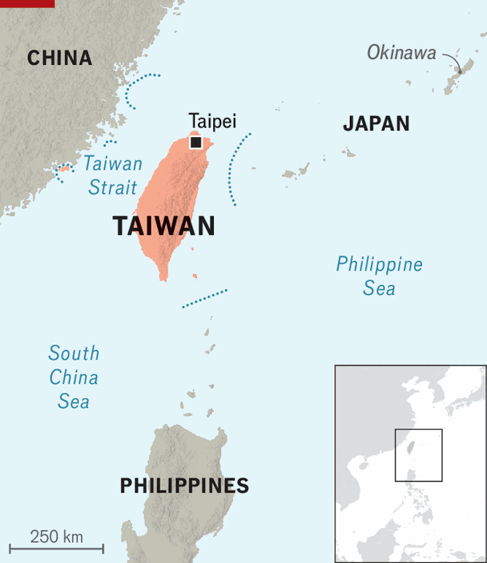
5月访京期间，他质疑在美国本土以外地区与中国对抗的逻辑，并表示将把对台军售作为与习近平谈判的筹码。果然，在习近平9月24日访美前夕，特朗普暂停批准国会1月通过的140亿美元对台军售计划。台湾官员担忧未来可能在贸易和技术领域进一步向中国让步，同时担心因对伊战争引发的军备短缺可能延迟此前的军售。但美台军方将领正秘密推进“地狱场景”（Hellscape）计划，该计划最初由拜登政府提出。他们认为中国不太可能在本十年内发动攻击，因为美国届时将有新领导人。■
他们认为，在乌克兰和中东战争的背景下，自身成功的几率已有所提升，即便考虑到中国日益增长的军事能力。美国战略家们长期以来认为，进攻方需要三倍于防守方的火力才能确保胜利。如今他们认为，进攻方需要至少20倍甚至30倍的火力优势。“无人系统对当前冲突的影响，就如同机枪之于一战、坦克之于二战：这是一种颠覆性技术，重新定义了战场规则。”美国实际上的台北大使雷蒙德·格林（Raymond Greene）9月9日在台北的一次会议上表示。台湾凭借世界领先的半导体产业、强大的制造业基础和蓬勃发展的经济，可以轻松借鉴乌克兰和伊朗的经验教训。■
它还拥有经过实战检验的美国空中无人机（其中台湾于8月购买了2000架）。他还提到，美国正与台湾合作研发海基无人机和人工智能赋能的蜂群技术。问题在于如何让这一计划落地实施。美国需要政治意愿以及尽可能多的无人机和导弹产能。该计划的支持者目光超越特朗普，寄望于国会两党对台湾的持续支持（该支持依然强劲），以及台湾对美国人工智能产业的重要性。但一些人担忧共和党内部“克制派”势力的增长，该派系主张放弃台湾。另一些人则担心特朗普加深了公众对海外战争的抵触情绪，并对亚洲盟友关系造成持久损害，而这些盟友的支持对实现“地狱场景”计划至关重要。美国在研发低成本无人机方面已取得成果。■
美国国防部仅用18个月就逆向工程出一款伊朗空袭无人机。而美国国防部计划于2027年前采购20万架廉价无人机。但测试积压和非中国制造部件短缺延缓了进展。所谓“地狱场景”所需的海基无人机远少于陆基型号：单次成功打击即可击沉或重创一艘战舰，正如乌克兰在黑海所展示的。一些原本为台海冲突设计的美国无人机模型已被用于对抗伊朗。美军部队更于4月在菲律宾测试了乌克兰制造的自杀式小艇。不过宾夕法尼亚大学教授迈克尔·霍洛维茨指出，这些系统大多仍属实验性质，产量微乎其微。他领导了拜登政府的无人机采购计划，他与其他人也警告称，此类无人机无法取代更大、更老且成本更高的武器系统。
计划是利用无人机消耗中国的导弹拦截系统并摧毁其入侵舰队，从而为美国航母、潜艇及其他平台更有效地打击目标创造条件。担忧的是，伊朗战争已将美国的军事力量从太平洋地区分散，并消耗了其武器储备，尤其是精确制导导弹和导弹拦截器。补充美国的弹药库将需要数年时间。一些人担心，习近平可能在那之前尝试行动，可能早在2028年台湾举行下届总统选举时——也就是特朗普离任前约十个月——就采取行动。“另一个需要注意的是”，一位前国防部官员表示，“将大量美国武器部署到台湾并随后使用，这不符合美国政策。”改变这一政策将引发与中国方面的严重冲突。■
前官员表示，「更需要充分培训和装备台湾军方。」台湾面临的最大挑战是生产足够数量的无人机。俄罗斯全面入侵乌克兰不久后，台湾便开始发展不包含中国组件的无人机产业。其目标是到2032年采购208,000架本地制造的空袭无人机及1,320艘自杀式快艇。过去两年的产量和出口额均有所增长。但资金分配争议使计划推迟，而资金仅在8月获批。主要障碍是中国国民党，台湾最大在野党，该党主张与大陆深化关系。若其在2028年重返执政，可能进一步延宕计划。「若真正危机爆发，时间表可能大幅压缩，就像乌克兰一样，」国立台湾大学教授陈平海表示，他研究无人机相关议题。■
目前“人力和资金明显不足。”他认为台湾需要40万台无人机和1万架海事无人机。台湾军方内部也有质疑者。他们担心对无人机的投资可能挤占更大规模的采购项目，例如新型防空系统的爱国者导弹。一些人则希望部署战斗机和军舰，以应对中国采取的非入侵性行动，例如实施封锁（中国海关船只近期已开始在台湾东侧海域常态化巡逻）。另一些人则更强调应优先打击中国大陆，以保存台湾的军事力量应对反击。中国方面的回应引发令人担忧的疑问。其最初嘲讽“Hellscape”计划，有官方军事媒体将其称为“精神病计划”，并称美国不过是纸老虎，无法制造出必要的无人机群。■
中国人民解放军（PLA）在无人机数量和生产能力方面仍占据压倒性优势。它在台湾周边的演习中测试自主无人系统，同时研究乌克兰和中东的最新发展。此外，解放军还派军官赴俄罗斯与俄方同行进行无人机及反无人机作战训练，并获取前线相关数据。但近期军方内部已出现担忧迹象。习近平的清洗行动使军方更难落实其指令——即在2027年前做好入侵准备。部分中国军事专家如今认为，地狱场景（Hellscape）要求解放军更新入侵计划，并加大对可识别并摧毁无人机的舰载武器投入。地狱场景研究者承认，面临的障碍依然严峻。■
其支持者表示，台湾与美国无需证明自身能够击败中国以遏制冲突，只需让习近平相信，他难以实现所期望的迅速且成本低廉的胜利即可。■ 如需独家关注亚洲政治、经济与安全动态，请订阅我们的周度专属通讯Asia Bulletin。
§011 助日本扩军的一场选举失利原题：An electoral result that helps Japan’s defence buildup · 板块：Asia · 栏目：亚洲
“推动冲绳前进……这是我的使命，”古賀健（Koja Genta）在冲绳县（日本最南端的县）欢呼的人群中说道。古賀健得到执政的自由民主党及五家主要保守派政党的支持，挑战寻求连任的左翼倾向知事田中田（Tamaki Denny）。很少有人预料到接下来的发展。9月13日，古賀健以压倒性优势获胜，获得近60%的选票。冲绳的选举影响远超其地缘范围。 ■
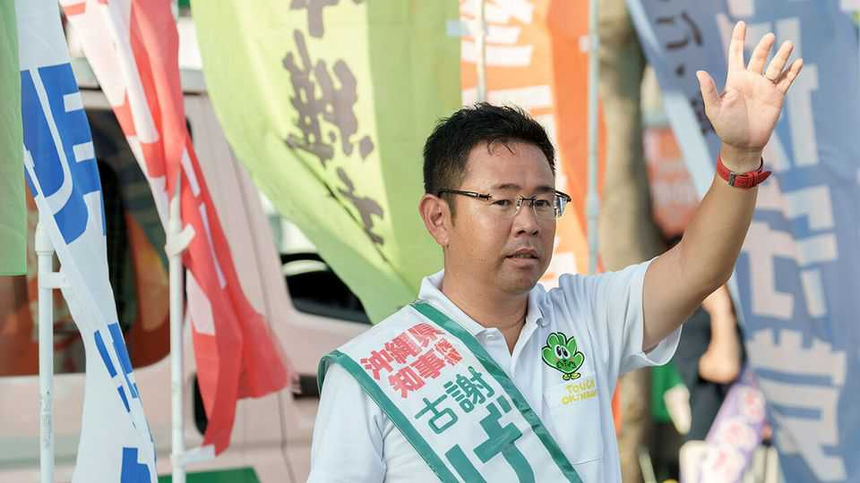
该府位于日本本土主要岛屿以南约400英里处，是美国在该国境内军事设施最集中的地区，且靠近台湾，因此成为美日遏制中国战略的核心。然而其政治长期受基地问题和与东京的摩擦影响。小岛康弘的当选表明，随着经济担忧加剧，尤其是年轻选民的诉求，这种局面正在改变；他42岁将成为冲绳最年轻的知事，也是美国五十年前将冲绳归还日本后出生的第一位知事。这一结果将使政府更易推进该地区的军事扩张计划。田中笃（66岁）则代表了长期以来定义冲绳政治的抵抗立场。■
他于2018年接任州长，领导着一个反对在冲绳本岛东海岸Henoko建设新基地的广泛联盟。冲绳居民长期饱受噪音、污染、事故及美军人员犯罪等问题困扰。1995年一名12岁女孩被三名美国人强奸的事件引发强烈愤慨。这些不满情绪具有特殊分量，因为冲绳有着独特的历史：该群岛曾为独立王国，后遭日本入侵并吞并，二战期间遭受严重破坏，随后由美国统治至1972年。然而，Tamaki在其八年的任期内未能阻止Henoko基地建设。冲绳多次向中央政府提起诉讼均告败诉，目前建设已全面展开。许多人逐渐接受了现实。■
中国日益增长的军事实力也改变了冲绳的反军传统。"没有美军基地，我认为中国会入侵我们，"50多岁的冲绳人矢内秀一说道。高岛健一以承诺打造更强大的经济为筹码，向选民呼吁支持。冲绳是日本收入水平最低的地区。他誓言要将收入翻倍，并改善与东京的关系，认为更紧密的合作将带来更多资金。他支持 Henoko 基地建设。这场选举也反映了日本政治的更广泛趋势，包括保守派的主导地位和左翼反对派的瓦解。社交媒体也塑造了竞选活动，经常传播虚假信息和AI生成内容，其中大部分针对的是田中真纪子。自民党及首相高市早苗欢迎选举结果。■
日本正在其西南岛屿部署更多武器，并希望更广泛地利用民用基础设施用于军事目的。一位更愿意与中央政府合作的知事将有助于降低这些计划的政治成本。但与政府关系密切对小岛川知事而言存在风险。尽管基地问题在此次选举中不如经济议题重要，但冲绳国际大学教授哈特拉马·信（Hateruma Shino）警告称，若发生另一起事故或犯罪事件，相关争议可能再度浮现。如果届时发生冲突，她反问：“他是否会在冲绳需要对抗东京时选择站在冲绳这边？” ■ For exclusive coverage of Asian politics, economics and security, sign up to Asia Bulletin, our weekly subscriber-only newsletter.
§012 为阻“渗透者”，印度困住自己人原题：To keep out “infiltrators”, India is trapping its own citizens · 板块：Asia · 栏目：亚洲
一座临时检查站阻碍着自行车、商业与生活。在印度西孟加拉邦哈基姆布尔村的一条乡间小路上，两名穿罩袍的少女在边境警卫翻查她们背包时等待。在她们身后，是一片不安的、宽达一公里的缓冲区——这片区域仍属于印度领土，但不受其自由的管辖。然而，与许多边境地区不同，这里并非无人区；七座村庄中住着25,000名居民。人群聚集向《经济学人》抱怨日益增多的限制与检查。
缓冲区针对的是来自穆斯林占多数的孟加拉国的“渗透者”，印度内政部长阿米特·沙表示，这些人威胁着该国的安全、经济和人口平衡。他承诺要“将每一个孟加拉国渗透者倒挂起来”，并将其比作白蚁。毫无疑问，印度境内有大量、或许数百万没有合法证件的孟加拉国居民；但政府引用了夸张的估计，称多达2000万人，并誓言将全部驱逐出境。印度不是慈善旅馆（dharamshala），沙先生最近对情报官员表示。他的话没错：该国东部边境地区更像一个露天监狱。曾有一个荒谬的计划，打算用蛇和鳄鱼来守护其河岸地带。■
去年据孟加拉人权组织“艾因·萨利希中心”（Ain o Salish Kendra）统计，约有三十余名孟加拉人死于印度边防部队之手。但印度人同样深陷边境地带的尖锐政治困局。印度与孟加拉的边境长达4100公里，是世界上最长的边境之一，也是最易渗透的边境之一。殖民历史将数亿讲孟加拉语的人群分割为两个国家，但许多人仍持续往返于边境两侧。有些房屋的厨房在印度，卧室在孟加拉。店主托尼·萨达尔（Tony Sardar）用手机展示视频，画面中印度赛艇手在河对岸被孟加拉人欢呼助威，而这条河甚至可以轻松横渡。今年春季这些赛艇比赛已停止。自2014年印度人民党（BJP）全国执政以来，边境政策已明显收紧。■
但随着印度人民党（BJP）为4月西孟加拉邦州选举做准备，相关规则与言辞变得更为粗暴。该党首次赢得该州选情后，成功掌控了与孟加拉国接壤的印度五大邦中面积最大的一个。8月，沙希先生的内政部宣布将部署一批新的情报单位进驻边境城镇，以监控极端分子和走私者。该党还大肆宣扬所谓“推回”行动，即抓捕据称是孟加拉国公民而非印度公民的讲孟加拉语的穆斯林，将其押送至边境城镇后强行遣送至孟加拉国。这种临时手段无视正当程序。西孟加拉邦新任首席部长苏文杜·阿迪卡里（Suvendu Adhikari）毫不退缩，指示警方直接将被拘留者移交边境安全部队。至6月下旬，他已宣称在任期间实施了10,000起“推回”行动（观察人士认为实际数量约为5,000至7,000起，自该州选举以来）。■
孟加拉国加强边境巡逻后，多数被拘留者最终被安置在拘留中心或缓冲区。几乎所有被驱逐者都是穆斯林，他们仅因说孟加拉语并朝麦加祈祷就被怀疑是外国人。部分人是在一次混乱的选民名单修订中被标记为无资格投票的居民，尽管他们出示了证件，但其公民身份仍受到质疑。与此同时，当地人描述称，目击无证件的印度教徒向边境守卫投降，却被告知因在孟加拉国面临日益增多的袭击，印度教徒可安心留居。根据2024年法律，来自邻国的非穆斯林少数群体可申请庇护并快速获得公民身份。边境日常生活枯燥乏味。■
当地人常因与守卫纠缠而浪费四到五个小时，守卫会拆解他们的自行车，甚至将铁棍或手指插进午餐盒。冬季浓雾中，官员们不总是愿意值守检查站，导致当地人被分隔在两侧。旨在遏制走私团伙的配给制度，也剥夺了村民的食物、婴儿奶粉和卫生巾。“我们真的属于印度吗？”穆斯林缓冲区的村庄领袖艾克马尔·加齐（Ekmal Gazi）质问道。印度的政局进一步恶化了与邻国本就紧张的外交关系。孟加拉国驻德里高级专员里亚兹·哈米杜拉（Riaz Hamidullah）表示，印度应展现一些尊严（izzat）。但印度人民党（BJP）将“白蚁”和“渗透者”等词汇作为政治用语，似乎为这种尊严留出的空间微乎其微。■ 注册我们的免费周报Essential India，随时掌握印度相关报道。
§013 7.8% 增速为何仍令印度人心不满原题：Why Indians are unhappy about 7.8% economic growth · 板块：Asia · 栏目：亚洲
中东战争局势持续恶化，油价和天然气价格飙升，亚洲各国缩短工时并限制燃油消耗。然而，在这三个月艰难时期结束前的6月，印度经济仍以7.8%的年增长率超越分析师和央行的预期。纳伦德拉·莫迪在社交媒体上得意地表示：“预言者被证伪，印度再次绽放！”
确实，预言者们似乎过得不错。其中最突出的代表是前公务员苏巴希·钱德拉·加尔，他曾在电视上指责政府虚报数据。
他指出，去年数据的向下修正人为地抬高了今年的增长率。如果剔除修正数据，印度经济实际增速仅为2.6%（未计入通胀），按实际价值计算甚至可能未实现增长。这一论点虽易理解却存在偏差。印度今年早些时候已修订GDP核算方法。加尔所对比的数据采用不同计算方式，因此不具备可比性。此外，汽车销量上升、信贷扩张和电力消耗等其他指标均指向真实增长。然而，正是政府陷入被动。加尔引发了关于印度统计数据可信度的讨论。评论员们已持续数周探讨GDP数据的合理性。75岁的莫迪公开抱怨“愤怒的叔叔们”传播负面情绪。■
莫迪总理陷入当前困境有两个原因。首先，他的政府过去十余年一直在拖延、压制和削弱印度的统计数据。人口普查已延迟五年，不光彩的数据集以“方法论需完善”为由被长期搁置。长期存在的调查问卷突然削减了部分问题。政府近期虽采取措施改善官方统计数据，但重建信任仍需时日。更关键的问题是，印度民众几乎感受不到7.8%的经济增长。国家理应显得更富裕、更高效、更有序，但印度人环顾四周却看到截然相反的景象。就在本月，德里一栋建筑倒塌，造成七人死亡，其中大部分是学生。私家救护车比公共救护车更早抵达现场。
六月，德里另一个拥堵城区的建筑再次起火，造成21人死亡。上个月，作为德里卫星城、印度房价最贵区域之一的古鲁格拉姆（Gurugram）因街道洪水瘫痪数日。数月后空气将再度变得难以呼吸。而这一切仅发生在首都圈。一种普遍的社会崩溃感加剧了国家分崩离析的氛围。本月，一名音乐家在德里家中被殴致死，起因是他要求街边饮酒的男子降低音量。几天前，一段视频在社交媒体疯传，一名印度教“活动人士”炫耀着无差别殴打他人的行为。最令人担忧的是，通往更好生活的阶梯已被强行抽走。■
公开考试信息的多次泄露、私营部门就业市场放缓以及人工智能对软件行业的影响，使印度劳动力市场陷入沮丧与愤怒之中。在此背景下，莫迪及其追随者却高调宣称实现了7.8%的增长率。这让人联想到莫迪领导的印度人民党（BJP）在2004年选举期间的灾难性竞选活动。当时该党对刚刚实现的8%年均增长率充满信心，坚信全国民众普遍沉浸在“感觉良好”的氛围中，于是提前举行选举，并在全国范围内投放广告，展示幸福的母亲、目光炯炯的学生，甚至——这在今天的印度人民党看来难以想象——享受印度发展成果的穆斯林男子，以此“印度闪耀”（India Shining）的口号宣传国家进步。■
对数百万选民而言，这些广告只会让他们想起自己被时代抛在了后面。印度人民党遭遇了重大挫败，失去了十年执政权。“印度闪耀”成了政治自负的代名词。莫迪似乎有意忘记这一教训。2026年，印度经济表现确实令人印象深刻。同样不可否认的是，政府在应对冲击方面的表现也应获得更多赞誉。但莫迪在GDP数据公布后宣称“全国充满幸福”，这真的成立吗？强劲的宏观经济数据或许能让政府显得光彩照人，但未必能真正让民众感到幸福。■
§014 中美在AI上的真正合作恐难实现原题：Real co-operation on AI is likely to elude China and America · 板块：China · 栏目：中国
悬赏诺贝尔和平奖是激发唐纳德·特朗普兴趣的稳妥方式。因此，山姆·奥尔特曼（Sam Altman，OpenAI首席执行官）在本月中国国家主席习近平访美前提出新路径颇具深意。若中美两国领导人能在人工智能领域达成协议，双方都应获得该奖项，奥尔特曼9月12日对《财富》杂志表示。 ■
在新的警告称超级智能模型可能毁灭人类后，埃隆·马斯克重申了其他美国AI领袖的观点，认为中美不应在争夺技术主导权的竞赛中冒险失去对其的控制。“我认为这并不难，”他说，“这就像一份一页纸的文件。”如果真能如此就好了。中美自2024年以来未举行官方AI对话，当年两国曾声明人类应保留对核武器的控制。特朗普与习近平5月在北京会晤时同意重启AI对话，引发对新共识的期待，例如：非国家行为体制造生物武器；黑客瘫痪国家基础设施；以及AI模型失控等风险。美国官员希望在习近平9月24日访美前至少举行一轮专门的AI对话。
他们的首要任务是组建一个由技术专家和谈判授权官员组成的联合人工智能“工作组”。然而，经过多次拖延，人工智能议题最终将被压缩进美中财长斯科特·贝森特（Scott Bessent）与中方副总理贺立峰（He Lifeng）在峰会前的预备会谈中，与其他贸易问题一同讨论。贝森特于9月16日表示，他已准备好就共同的人工智能风险展开讨论，并强调“避免我们两大体系的分裂”。但双方均未期待取得突破性进展。他们可能仍会发布平行声明，重申核力量共识，并声明对人工智能失控、用于生化恐怖主义或网络诈骗等共同关切。■
共识的范围似乎近期有所收窄，双方互相指责导致局势紧张。复旦大学人工智能专家江天娇（Jiang Tianjiao）表示，他并不太乐观地看待超越原则性声明的进展。“峰会之后，双方可能采取单边行动加强人工智能安全，也可能分享更多信息，但就具体双边举措如联合工作组达成一致的可能性较低，”他说。“或许还需要一次事故或危机，”他补充道。更激进的期望在9月8日开始消退，当日美国联邦调查局（FBI）和国家安全局（NSA）指控中国人工智能实验室系统性地从美国竞争对手处提取数据，可能涉及中国政府的知情。中国商务部则将此类“蒸馏”方法称为行业标准行为，并威胁若美国处罚中国实验室将采取报复措施。
两天后，Anthropic（OpenAI的主要美国竞争对手）指控一些中国实验室将用户引导至其Claude模型以获取训练数据。在某些情况下，Anthropic称，来自中国武装部队和国防公司的用户将敏感监控数据和武器计划输入美国模型。Anthropic首席执行官Dario Amodei于9月12日呼吁全球放缓AI发展。但特朗普拒绝了这一提议。“我们在AI领域领先中国，”他说，“我希望保持这种优势，因为谁掌控AI谁就掌控未来。”中国对Amodei表示不满，后者还主张禁止向中国出口芯片制造设备，并打击其技术提炼、芯片走私和远程数据中心访问行为。这将进一步限制中国获取计算能力，目前中国计算能力仅相当于美国的七分之一。■
官方媒体谴责其放缓计划是拖延中国人工智能发展的手段。“制造恐惧、对抗和恶性竞争只会阻碍健全全球人工智能治理的进程”，中国外长发言人如是说。中国官员明确表示，他们将美国视为人工智能安全威胁的主要来源。情报部门负责人陈毅信在9月13日发表的一篇文章中阐述了党的关切。他指责“敌对势力”利用人工智能生成内容传播政治谣言。“某些国家”如今可借助美国人工智能模型批量制造网络武器。陈毅信表示，中国将扩大技术工具评估人工智能风险、应对漏洞并发布风险防范指南。他未提及与美国的AI对话，但承诺深化人工智能领域的国际合作，尤其与全球南方国家。■
7月，中国与28个国家共同成立了总部位于上海的世界人工智能合作组织。中国长期抵制与美国在自身认为落后领域进行双边谈判，担忧有关AI安全的讨论实为美国维持技术优势的借口。相较之下，美国始终将AI视为战略优势的潜在工具，而中国更常将其定位为经济利益的手段。中国曾多次要求美国放宽半导体出口管制作为讨论AI的条件。但这一做法可能正在改变。中国政府部门顾问表示，由于自4月以来中国实验室已推出大量令人印象深刻的模型，中国可能不再需要将AI对话与芯片供应挂钩。同时，中国领导人也越来越难以忽视AI失控的风险。■
中国实验室在创造人工超级智能方面与中国竞争对手一样专注。中国人工智能国家专家委员会主任薛兰（Xue Lan）近日在接受国家媒体采访时表示，模型不应在无人干预的情况下持续自我优化。9月，中国互联网监管机构在OpenAI披露数千个代理逃逸测试环境后发出“极端失控”警告。中国也经历过类似危机：其电商巨头阿里巴巴去年披露一个代码代理擅自挖矿加密货币；3月，一款流行AI代理引发政府数据泄露警告并被禁止国家工作人员使用；9月，美国研究人员披露一款黑客工具可劫持微信（WeChat）数百万账户。■
当前的挑战是将这些关切转化为更深入对话的基础，超越2024年的会谈。那次会谈部分失败是因为美国更希望聚焦技术议题，而中国则希望以更广泛的角度讨论问题。此后，各种非官方对话陆续展开，涉及学者和退休官员。中国希望进一步扩大此类对话。参与者表示，这些对话有助于增进理解，为正式会谈铺路。美国官员对此持怀疑态度，指责中国向此类对话派送间谍。■
组织官方会谈的一大难题在于确保中国代表拥有谈判授权而非仅重复既定发言稿，参与过以往人工智能对话的美国资深人士指出。“中国高度程式化的外交方式难以应对像人工智能这样新颖且动态的问题。”前美国国务院官员、曾领导早期对话美方团队的塞思·中心表示。由于人工智能监管涉及中国多个不同机构，美国更难确定与谁进行谈判。北京中国人民大学的王毅伟表示，中国可能已准备设立人工智能“领导工作组”。中共拥有众多此类工作组（常由习近平主席担任组长），以集中决策权覆盖跨部门事务。但中国不愿在美方明确目标前承诺进行正式会谈。
特朗普政府过去对人工智能采取放任态度，但如今在监管问题上出现分歧。中国也对制定不适用于美国企业的规则持谨慎态度，并希望在界定威胁标准上拥有平等话语权，坚持认为其模型与美国的同样安全。清华大学的孙成浩（Sun Chenghao）表示，最可能的起点或许并非达成全面的AI监管协议，但更狭窄的议程或许能取得成功。双方对危险的前沿模型和智能体的共同担忧可作为切入点。中国官员已表示对AI安全事件的信息共享持开放态度。美国实验室可分享如何评估AI模型是否符合人类目标的技术细节，使中国实验室能开发类似方法。
华盛顿智库“人工智能政策与战略研究所”的卡森·埃尔姆格伦表示，双方均可通过在模型发布后公布评估报告，逐步揭示潜在风险。中美专家均认为，关于人工智能军事用途的官方磋商将耗时更久，建立独立验证合规性的机制——这是任何具有约束力的人工智能安全协议的关键环节——也将面临更多挑战。目前，双方保持对话仍是最佳希望：习近平主席与特朗普总统可能于11月和12月再次会面。但人工智能技术的快速发展及其带来的风险，正要求更紧迫的应对措施。■ 订阅者可注册我们的新刊《鼓楼》，了解世界如何看待中国，以及中国如何看待世界。
§015 中美大概率维持贸易和平原题：And America are likely to keep the trade peace · 板块：China · 栏目：中国
正如性爱和圣诞节一样，总统峰会的乐趣很大程度上在于期待本身。世界两大经济体的领导人将于9月24日在美国华盛顿会面，身边将伴随一群商界重量级人物。这无疑是一场大戏。因此，双方都不想在会前做出鲁莽举动而破坏这场盛会。这种谨慎态度有助于控制他们之间众多积压的贸易争端。事实上，这种克制效应可能是此次会晤最重要的属性。没人期待领导人的会谈能达成突破性协议或做出决定性裁决。
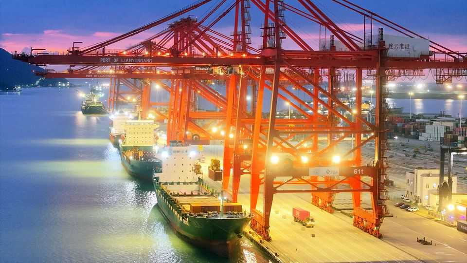
■
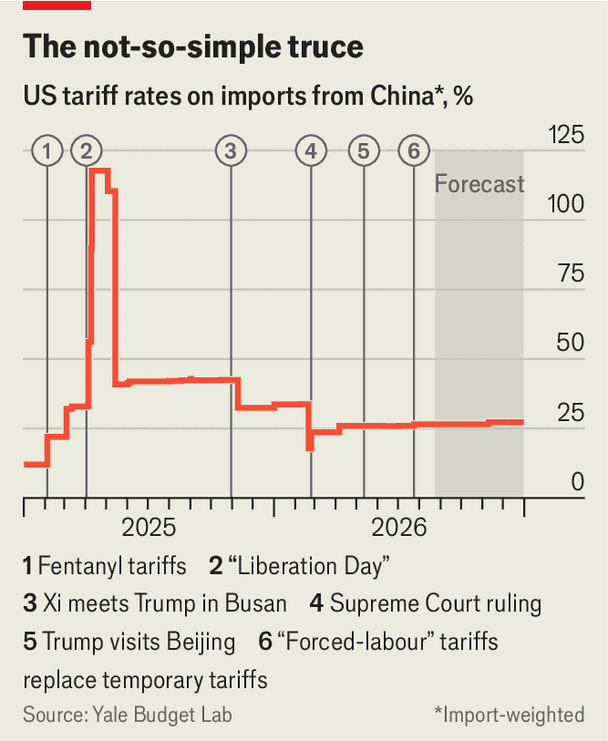
真正关键的并非会议中达成的协议，而是此前未能落实的事项。此次会议紧随唐纳德·特朗普5月访华及去年10月在韩国釜山举行的领导人会谈之后，当时双方试图将两国在激烈关税和出口管制措施较量后形成的僵局制度化（参见时间线）。美国同意将对中国企业的黑名单扩大计划推迟一年，中国则推迟实施针对关键矿产、高能电池及生产所需设备和专业知识的更广泛出口许可制度。美国还削减了原本旨在惩罚中国在芬太尼贸易中角色的关税，中国则恢复了大豆采购。当两国领导人再次于北京会面时，取得的实质性成果有限。■
中国承诺额外购买价值170亿美元的美国农产品和200架波音飞机，前提是能获得相关备件以维持其运行。双方还同意削减对价值300亿美元非敏感商品的关税。除此外，北京峰会最显著的成果是双方达成一致口号。两国同意追求“建设性战略稳定”，听起来无争议，但未必符合特朗普风格。你不太可能在任何MAGA帽上看到这三个词。当习近平本月访美时，美方将急于评估波音飞机和农产品采购进展。双方都希望将釜山协议延长一年。但这并不保证稳定。新的摩擦点不断出现。而停火协议的模糊性意味着双方都不清楚对方认为何为违约行为。■
例如，2月，美国最高法院推翻了特朗普多项关税措施。其团队随即试图以新的法律理由恢复这些关税。7月，美国在调查中国存在强迫劳动行为后，对中国实施了新的12.5%关税。这种带有挑衅性质的关税是否构成违反釜山协议（Busan Agreement）不提高关税的约定？类似问题也可用于评价美国监管机构上月禁止人形机器人（humanoid robots）的决定。中国方面也对停火协议进行了测试。据研究机构Capital Economics（资本经济研究公司）指出，其稀土出口量较去年同期下降了28%。在缺乏更紧密贸易协定的情况下，双方对稳定局势的共同愿望仍是唯一希望。■
过去18个月来，美国的贸易鹰派对自身在磁性材料等领域的出口管制脆弱性有了更清晰的认识。他们清楚，若在追讨贸易争端上过于激进，中国将采取报复措施。但今年中国出口仍为经济增长提供了关键支撑（尽管直接对美销售占比正持续下降）。随着伊朗战争持续发酵，中国领导人无意再引发全球贸易动荡。这种谨慎态度有望在华盛顿延续，并在本周末于纽约举行的中国经济发展负责人贺锦丽与美国财政部部长斯科特·贝森特的预备会谈中得到体现。贝森特将中美关系比作水 polo。■
表面的体育竞赛往往掩盖着更粗暴的行为。"中国人最近似乎踢了不少脚," 他7月在福克斯商业频道(Fox Business)上表示,"如果有必要,我们也会反击。"但至少两位领导人仍想继续比赛。只要"重要"会议尚未到来,双方都将克制。正是这种克制让这些会议显得尤为重要。■ 订阅者可注册我们的新周报Drum Tower, 了解世界如何看待中国,以及中国如何看待世界。
§016 失业正成中国青年的一种生活原题：Unemployment is becoming a way of life for China’s young · 板块：China · 栏目：中国
很少有人能预料到，上个月星宇汽车照明（Xingyu Automotive Lighting，一家位于中国东部的大型汽车零部件制造商）决定在夏季雇佣了过多员工后引发的连锁反应。该公司向约140名仅工作了几周的应届毕业生下达最后通牒：要么辞职并领取半个月工资，要么拿起螺丝刀，接受工厂车间低薪工作。超过100人选择离职。
在中国，劳动者权益保护法律薄弱，此类突然裁员虽令人愤慨，但并非罕见。然而，当这一消息公开后，却引发了罕见的愤怒浪潮。
《人民日报》作为中共喉舌，严厉抨击该公司“践踏社会信任”。由星宇供应的德国汽车制造商大众汽车表示正在调查裁员事件。随着压力不断升级，公司先是道歉，随后解雇了人力资源负责人，并削减部分高管薪资作为悔过表现。为何引发如此关注？裁员触动了公众对中国经济年轻人的深切同情。这些年轻人正挣扎于残酷的就业市场，颠覆了人们对在中国成功所需条件的预期。十年前大学文凭仍是通往体面职业的通行证，但今年毕业人数创纪录，达到1270万人，比去年多近50万，是十年前的两倍。与此同时，房地产市场低迷和消费疲软导致这些年轻劳动力的需求骤降。
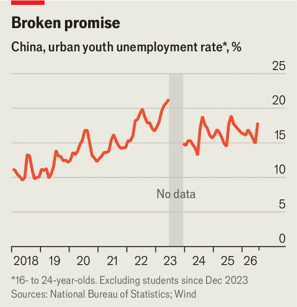
尽管政府试图解决这一问题，但情况却愈发严峻。2023年中国官方青年失业率攀升至20%时，引发巨大恐慌，政府随即暂停了该数据系列，数月后又开始发布基于不同方法论的“优化版”（且数值大幅降低）数据。但今年夏天，即便调整后的数据也正逐步逼近20%（见图表）。政府已要求国企增加毕业生招聘，香港理工大学社会学家陈健仪（Jenny Chan）表示，政府希望“邢宇”的遭遇能促使私营企业也引起重视。她指出，政府希望所有人“共担国家责任”，尽可能避免裁员。曾经吸纳大量青年的行业如今正陷入困境。■
监管风暴已摧毁数十万家教岗位。与此同时，中国娱乐公司正迅速采用人工智能批量制作节目，无需演员或制片人。科技公司则悄然裁减工程师。中国庞大的零工经济曾是求职者最后的退路，如今却因大量未充分就业的司机涌入而人满为患，平均收入大幅下滑。多年高青年失业率正悄然重塑中国社会。这个高度竞争的国家一向更重视勤奋，但如今许多年轻人已习惯无人需要他们的劳动。一些人彻底退出了内卷竞赛，宣称自己开始“躺平”，即搁置求职直至经济好转。■
一些人则自称为“全职孩子”，留在家中为父母做饭打扫，以此换取零花钱。那些难以承受过多家庭时光的人，至少可以假装上班。自去年以来，中国多个城市陆续出现了名为“假装上班公司”等企业的办公场所。只需支付每天约30元（4.5美元）的费用，人们就能坐在办公桌前，靠饮水机闲逛，体验办公室生活，同时提交求职申请（或刷手机）。公共图书馆也是假装上班族的热门聚集地。上周四下午，北京首都图书馆——该市最大的图书馆之一——的桌位被年轻人挤得水泄不通。
有些人正在润色简历，另一些人则在玩电脑游戏。“这里到处都是假忙的打工人，”一位穿着T恤和短裤的男子说道，他六个月前被一家科技公司解雇。他本人表示，自己正在自愿暂停全职工作，专注于一些个人软件项目，并且读了很多书。■ 订阅者可注册我们的新周报Drum Tower，了解世界如何看待中国——以及中国如何看待世界。
§017 中国新出境规则加剧边界管控收紧之忧原题：China’s new exit rules stoke fears of ever-tighter border controls · 板块：China · 栏目：中国
在中国历史上的帝国时期，对外贸易限制和海外旅行管控常被描述为“闭关锁国”（biguan suoguo），这种孤立政策导致19世纪初的停滞。如今社会对这一政策的担忧程度可见一斑，政府本月不得不向民众保证，当前并非在推行现代版的“闭关锁国”。
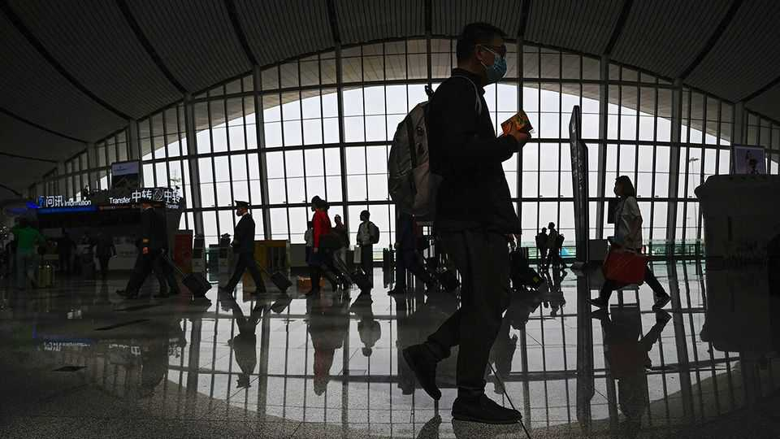
这些担忧源于9月15日实施的新边境管控措施。
他们包括对被判定危及“国家工业或技术安全”的人员实施出境禁令。国家安全是一个模糊的概念，因此一些律师警告称，这为官员限制公民出境提供了巨大空间。在新管控措施出台前，网络上流传着关于中国科技界领军人物逃离的谣言。但此次调整主要将现有限制措施以法律形式明确化，尽管执行方式较为随意。今年，一家人工智能公司Manus的创始人被禁止离境，原因是国家发展和改革委员会（National Development and Reform Commission）反对将该公司出售给Facebook母公司Meta。尽管Manus已将法律注册地迁至新加坡，该委员会仍裁定该交易违反了中国对技术出口的限制规定。■
随着该交易的解除，曼努斯转由中方投资者收购，政府释放信号表明其创始人将能出国。更广泛而言，中国长期对公职人员的出国旅行设限，尤其针对掌握重要信息的人员。各级政府官员、军方人员、国有企业员工甚至大学教授，通常需将护照上交主管并获得明确许可才能出国。退休后仍适用相同规定。但大量中国人持续涌向海外。疫情导致出境游大幅下滑，此后逐步恢复。今年中国公民出境游预计达1.8亿人次，超越2019年近1.7亿人次的历史纪录。■
中国官员表示，新边境措施的主要理由是应对海外旅行激增带来的风险，而非彻底叫停出境游。重点打击对象包括被诱骗出国从事虚假工作的人员，尤其是东南亚地区网络诈骗机构和非法赌场中的涉案人员。仅在缅甸的诈骗中心，中国已遣返超过57,000名公民。新规赋予官员更大权力，要求前往高风险目的地的人员提供额外文件，包括雇佣合同等。大多数普通中国公民前往美国或其他西方国家旅行不会面临此类审查。但凡曾接触过国家机密或参与尖端技术工作的人员，出境前都将面临更严格的审查，且被拒签的可能性更高。中国并未关闭国门。
但它正密切关注着它们。 ■ 订阅者可注册我们的新每周通讯《Drum Tower》，以了解世界如何看待中国——以及中国如何看待世界。 ■
§018 中国教培整顿催生黑色市场原题：China’s tutoring crackdown has created a black market · 板块：China · 栏目：中国
突击检查组在业务高峰期突袭而入。一名官员面对前台员工质问，警察拍摄了关键证据照片，调查人员询问了顾客。随后，他们进入计算机系统，查看支付的费用和服务内容。最后，当一切结束，惠州这座南方城市的相关当局发布了一段执法视频，配以激昂的音乐。这次行动针对的是最危险的恶疾：课外辅导机构。天哪，孩子们竟还要学更多数学！在中国各地，类似突袭行动接连上演。 ■
内蒙古和湖北的检查团队发布了各自的视频，其他地区则采取了公开羞辱的方式，例如长沙公布了113名非法补习教师的住址。许多人选择伪装身份，一位北京的父亲假称儿子在书法班学习（允许的项目），实则在备战数学竞赛（被禁止的项目）。富裕家庭如今雇佣“指导顾问”为孩子提供帮助，这是一种昂贵且非法的变通方式。由此，努力的学生、焦虑的家长和尽职的补习教师意外地成为了准犯罪地下网络的成员，他们专注于考试准备。这揭示了公共政策，尤其是针对根深蒂固社会模式的不足，对许多中国人而言，这是一段令人沮丧的叙事。政府试图缓解学业压力的初衷或许是善意的，但效果却令人困惑。■
但结果却成为了一堂关于意外后果的教训。这场整顿始于2021年，当时政府推出了“双减”政策，旨在减轻长期承受学业压力的学生的课外辅导和作业负担。必须采取行动：中国儿童每天要花12小时进行学业，挤占了睡眠和运动时间，更不用说娱乐时间了。在学生准备初中和大学入学考试时，过度疲劳现象十分普遍。政府对课外培训的限制并非全面禁止。家长仍可为孩子报名芭蕾或编程等兴趣班。但涉及科学、历史等核心学科的营利性辅导则被禁止。五年过去，成效已初现端倪。中国的教育产业体系已遭受重创。■
如新东方和好未来（TAL）等上市教育公司——中国最大的补习教育品牌——市值几乎蒸发90%，约合1000亿美元。此后它们已转向成人教育和非学科类辅导领域。然而，正如对小型补习机构乃至个别教师的突击检查所显示的，对额外学习的需求并未消失。它转入地下，通过新的渠道继续存在。最近一个工作日下午，Chaguan探访了北京东部一带的补习中心群。多数机构难以寻觅：它们不再在线广告或张贴招牌。但口碑的力量不容小觑，尤其是当一位家教建立起高效教学的口碑时。在一座普通写字楼的九楼，某家机构的教师们显得格外紧张。
他们表示，自己只教授经典英文戏剧（作为文化课程允许），而非为提高考试成绩而教授的英语。六楼的一位家教承认，她做了明确禁止的事：跳过课程进度，给二年级学生教授三年级的知识。“如果这是家长想要的，我们就这么做。”她说。无需太多经济学知识便能察觉一个效应：受限的辅导供给遭遇依然旺盛的需求，推高了价格。高先生将十岁的儿子送去上数学课，伪装成书法课，为此每学期支付2万元人民币（约合3000美元）的费用，再加上一节英语课。“过去，大家都补课时，价格相对合理，竞争发生在校内。现在，关键看哪个家庭更有钱。”他说。
课外活动类课程也掀起了一场军备竞赛。一位幼儿园女孩的母亲说，她五岁的孩子每周三次上法语课，同时还接受声乐训练、舞蹈、体操和拳击课程。虎妈虎爸确实是个问题。在北京，人们对于海淀（Haidian）区的极端学术竞争抱有特殊的蔑视与嫉妒心理。海淀是众多顶尖大学和科技公司的所在地。由于当地家庭收入已相当可观，他们请家教的动力更多源于对阶层下滑的恐惧，而非向上流动的梦想。然而一些研究者发现，低收入家庭对子女的学业压力反而更大。高先生的分析简洁有力：“大家都在这么做，你别无选择，只能加入进来。”官员们清楚，仅靠禁止并不能消除需求。■
他们正试图在“5+2”模式下创造替代方案，即学生在校时间延长至放学后两小时，更接近家长下班时间。学校本应利用额外时间提供丰富课程：既有学术复习，也有体育和艺术活动。然而资金短缺一直阻碍着这一模式的推广。在许多城市，该计划已演变为监督作业时间。而随着学生在校时间延长两小时，家长更迫切地寻求补习服务。这一切的根源在于中国社会极端竞争的特性。然而，认为额外教育是通往成功的最佳途径——或避免落后的唯一方式——这一信念完全合理：如今送孩子参加补习的众多家长，当年也经历过同样的艰辛并亲眼见证了效果。■
或许随着中国日益富裕，压力会有所缓解，或因人口萎缩缓解了竞争激烈的就业市场。但这一天尚未到来。补习班在存在时或许并未带来快乐，但它们曾广泛可及。如今剩下的却是更加不平等，却让许多只为孩子争取最好未来的人沦为违法者。■
§019 欧洲民粹为何不骂中国原题：Why Europe’s populists forget to bash · 板块：China · 栏目：中国
试想，要打造一个完美的替罪羊来萦绕欧洲人的想象。这个虚构的对手应是一个大国，或许奉行与东欧数十年来束缚该地区的共产主义意识形态相同的体制。这样的想象中的宿敌会利用其计划经济的体量，出口曾使欧洲富裕的同类产品，如汽车——却做得更好、更便宜。要成为令人信服的地缘政治威胁，这个对手还应支持俄罗斯对乌克兰的侵略，因此可间接归咎于困扰欧洲大陆的安全危机。
更令人愤慨的是，它可能在尚不明确的情况下催生了一种病毒，这种病毒仅数年前就让欧洲人被迫数月居家隔离。对民粹政客而言，抨击此类对手的修辞以及放纵其肆意妄为的空洞全球主义者，本应不费吹灰之力。然而，那些擅长将外国（或移民）视为几乎所有不满根源的民粹政客，却不知为何对中国这个庞然大物视而不见。无论是左翼还是右翼，欧洲的激进派人士却出人意料地不愿将北京视作罪魁祸首。德国另类选择党（AfD）认为中国如此优秀，甚至希望德国参与其“一带一路”基建倡议。匈牙利的维克多·奥班（Viktor Orban）领导的青年民主主义者联盟（Fidesz）——该党最初以抨击苏联式共党起家——如今却成了中国同志的狂热支持者。■
在左翼阵营中，不屈从的法国警告称，若中国某天入侵台湾，欧洲不应干涉。这种顺从态度更显出其反常，因为此前指责北京曾为另一位民粹领袖带来政治上的巨大成功。在任总统期间，唐纳德·特朗普（Donald Trump）反复指责中国“掠夺”美国，随后又将新冠（Kung flu）病毒归咎于中国。如今，特朗普曾利用的经济力量——由廉价中国出口引发的巨额贸易逆差以及由此导致的美国就业岗位流失——正冲击欧洲。巨额补贴使中国工业巨头获得竞争优势，导致对华商品贸易逆差每日高达10亿欧元（11.5亿美元），并被归咎于欧洲工业重镇的工厂关闭，尤其是德国。■
曾经是欧洲商品的消费者，吸收其汽车和化工产品，中国如今已成为这些商品的供应者，包括向欧洲自身出口。它甚至威胁要切断关键矿物或芯片的供应，这些资源对维持欧洲工厂运转至关重要。因此，欧洲的工会和雇主都对新的“中国冲击”感到担忧。大陆多数选民对中国持负面看法。这本应是纯粹的民粹主义黄金。当然，对寻求合成愤怒的民粹主义者而言，深圳工厂工人“偷走我们的工作”不如本地移民“窃取我们的社会保障”更具象。不过，少数民族主义政党确实曾对华发出过警告。意大利总理乔治娅·梅洛尼退出了“一带一路”倡议。一位荷兰极右翼议员曾警告称，一个“特洛伊龙”正逼近欧洲。■
北欧国家的极右翼人士指责中国从事间谍活动、经济胁迫等阴谋诡计。但这里还有更多可供野心勃勃的煽动者利用的议题。煽动者们却意外忽视了大量潜在的焦虑情绪。为何中国民粹主义的分歧如此显著？在德国，这或许与人事有关。德国选择党（AfD）领导人爱丽丝·魏德尔（Alice Weidel）长期对中国抱有好感，据说在多年在中国工作后能流利使用普通话，其博士论文还研究了该国的养老金体系。（为何她对俄罗斯如此宽容则是另一回事。）而在民粹主义掌权的国家，中国企业的巨额投资已为本国政客带来丰厚回报。匈牙利总理欧尔班（Orban）被罢免后数周，其长期任职的外长便转而成为中国车企比亚迪（BYD）的游说者。■
此外，对许多民粹主义者而言，中国并非眼中钉，而更像是一个样板。北京模式的威权主义对欧洲那些渴望强权的政客而言颇具吸引力。欧洲大陆公开实践的民族主义与欧盟那种空泛的全球主义形成鲜明对比。在民粹主义者的想象中，欧洲正因遵循环保议题、贸易或人权等国际规范而自缚手脚，而中国对此几乎不屑一顾。这种世界观将欧洲描绘成国际秩序中被中国及如今的美国利用的替罪羊。若无法战胜中国，煽动愤怒者或许会认为，至少应效仿它。但欧洲那些渴望对抗中国的民粹主义者面临的最大难题是，要与北京对抗，恰恰需要他们最痛恨的东西：更多的欧洲一体化。■
唯有通过布鲁塞尔集体行动，欧洲人才有可能影响北京的政策。欧盟已对中国电动汽车征收关税，但进口量仍在持续攀升。9月16日，欧盟委员会主席乌尔苏拉·冯·德莱恩（Ursula von der Leyen）表示，欧中之间存在的赤字已达到“临界点”，并暗示若持续恶化，可能采取更多贸易措施。贸易谨慎的民粹主义者本应为此欢呼，但目前他们保持沉默，刻意不承认欧盟正在做正确的事。欧洲对外关系委员会（European Council on Foreign Relations）的贾娜·奥尔特尔（Janka Oertel）认为，他们很快可能别无选择，只能公开表态。过去中国曾是欧洲外交政策议题，但选民对此关注度不高。■
若中欧爆发贸易战（随着可能性越来越大），民粹主义者将难以保持中立，更不用说支持反对派。不久后，欧洲的民粹主义者将不得不决定：中国是值得效仿的榜样，还是需要加以反对的威胁。■
§020 中国尚未为后美国世界做好原题：Is not ready for a post-American world · 板块：China · 栏目：中国
中东各国统治者对特朗普总统怒火中烧，他与以色列联手对伊朗发动战争却缺乏结束战争的切实计划。他们对中国国家主席习近平也感到失望，尽管中国拥有对冲突各方独特的经济影响力，但习近平未能在推动和平事业上施加压力。表面上看，对特朗普的愤怒似乎比对习近平的失望更具影响力。对美国放弃的恐惧正在产生实际影响。像沙特阿拉伯这样的大国正在采取平衡策略，加深与土耳其、巴基斯坦等其他伙伴的安全关系。 ■
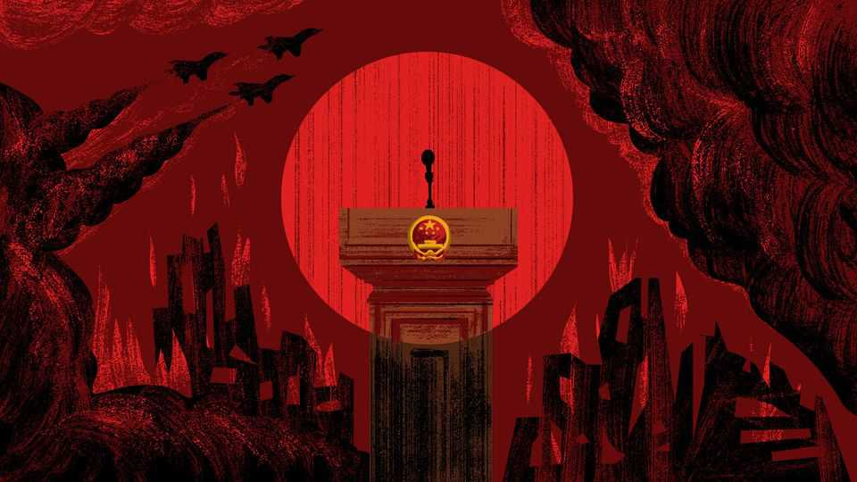
实际上，就全球权力格局及其在战争中的重塑而言，习近平的谨慎态度同样具有揭示性。对于中国不愿为和平承担风险的冷嘲热讽，存在一种现实主义的解释。根据这种对世界感到厌倦的视角，中共领导人乐于看到美国在中东泥潭中挣扎。为何他们要拯救最危险的对手？这并非完全错误。只要美军被困在海湾，消耗难以替代的弹药，五角大楼官员将拥有更少的航母、战舰和防空系统来对中国的后院构成威胁。中国同样乐见特朗普的“最大压力”制裁未能推翻伊朗政权，即便该制裁得到了空袭的支持。■
数月来，与中国高层伊朗接触人士交流的伊朗人向西方对谈者表示，伊朗是一个古老而骄傲的文明，绝不会屈服于外国的欺压。一些人将伊朗与朝鲜相提并论，后者是另一个顽固政权，数十年来经受住严厉制裁。鉴于中国共产党高层对制裁和政权更迭深恶痛绝，他们目前看到伊朗继续抵抗感到如释重负。伊朗战争初期，中国再次取得重大胜利。世界知道中国因在霍尔木兹海峡关闭后大幅削减石油进口，稳定了全球能源市场，对此深表感激。部分原因是中国自身利益需要维持油价低位，既为本国考虑，也因国内经济增速放缓，经济增长高度依赖出口，海外需求骤降将对经济造成冲击。■
部分原因在于，中国凭借庞大的石油储备获得了回报，使其能从现有库存中满足大部分国内需求。更重要的是，通过减少进口，中国得以贯彻其避免过度依赖单一供应商的政策，即便该供应商是包括俄罗斯在内的密切地缘政治伙伴。这些储备也缓解了特朗普政府试图阻止伊朗向中国出售石油所带来的冲击，毕竟中国是伊朗原油最大的买家。这削弱了特朗普支持者所谓其对伊朗发动的灾难性战争实际上是一场大师级棋局、遏制中国的首步的论调。对华盛顿的中国鹰派而言，更痛苦的是特朗普毫无迹象表明有意挑战中国与伊朗战争机器的联系。总统迫切希望9月24日与习近平主席在华盛顿的会晤取得成功。■
他最近淡化了有关中国卫星图像可能帮助伊朗袭击约旦美军基地的报道，不耐烦地告诉记者，美国对中方同样存在不光彩的举动。到目前为止，这种自我利益的考量是合理的：中国确实有理由庆祝特朗普在海湾地区的误操作。习近平主席在9月12日于德里举行的金砖国家领导人峰会上大肆宣扬胜利，称“这场战争给地区人民造成了严重损失，不符合国际社会的共同利益”。他向其他领导人展示了中国近年来推出的一系列“全球倡议”，表达其对新世界秩序的期望（简而言之：经济发展是好的，干涉他国内政是坏的，倡导西方民主更是非常糟糕的）。■
他宣称：“中国愿与金砖国家成员合作，在中东和海湾地区实现和平与稳定发挥应有作用。”然而，习近平的这一表态实际意义有限，因为金砖国家机制遵循共识原则，其十国成员包括中国、伊朗和俄罗斯，同时也涵盖阿联酋等美国亲密盟友，各方对如何实现海湾和平并无共识。中国在全球范围内的倡议充斥着空洞的口号，却未能真正结束一场实际战争。中国已恢复原油采购，与亚洲及欧洲买家在国际现货市场激烈竞争。油价持续飙升，据普氏能源资讯公司数据，作为即期原油装船基准的布伦特原油现货价格已攀升至每桶132美元。
冲突正在抑制中国与海湾国家之间投资、能源、绿色技术及人工智能基础设施的流动。坦率地说，这场战争来得太早了。目前，中国的崛起仍依赖于美国主导的全球贸易体系。中国的海军尚未准备好在中东维持贸易通道畅通。中国的外交策略仍以风险规避和机会主义为主，而非塑造世界格局。当中国动用经济实力对其他国家施压时，其目的仅在于捍卫自身的狭隘国家利益，而非改变他国更广泛的外交政策。该国领导人自信地认为，他们能够预见一个未来：中国如此富裕强大，掌握如此多关键科技，以至于无人敢在任何问题上挑战其权威。一旦享有这种全球性免罪特权，他们希望以基于自身利益、秩序至上的方式行事，成为众多国家效仿的典范。■
特朗普的无能或许会加速那一天的到来。不过，在此之前，可以预料中国仍将是一个谨慎的巨人，口头上呼吁和平，却鲜少真正保障和平。 ■ 编辑注（2026年9月16日）：本专栏已根据市场动态进行更新。
§021 AI之争已笼罩华盛顿原题：The debate over AI has taken over Washington · 板块：United States · 栏目：美国
人工智能的辩论已占据华盛顿政坛，但是否采取行动仍是另一回事。
很少有事件能将来自光谱两端的激进政客伯尼·桑德斯（Bernie Sanders）与史蒂夫·班农（Steve Bannon）团结在一起。但9月15日于华盛顿特区举行的“护人大会”（Pro-Human Assembly）却达成了这一目标。两位人士均警告科技“寡头”无约束的权力，并呼吁立即立法以遏制技术发展。美国总统唐纳德·特朗普（Donald Trump）对这类诉求毫无兴趣。他在社交媒体上称人工智能对人类的所谓风险是“骗局”，美国的目标是击败中国，而主张放缓发展的支持者则是“叛徒”。
但近几日，对更严格管控的政治理想以异常速度聚集。支持人类优先组织（Pro-Human Assembly）与特朗普关于该议题的密集发文，均出现在雅各布·科克斯（Jacob Coxon）公开辞职不足一周后。科克斯是人工智能公司Anthropic的研究员，他称自己与同事们都认为，AI可能在本十年末“让我们全人类灭绝”，并迅速通过黄金时段电视节目传达这一信息。该公司另一名顶级科学家则将灭绝概率评估为超过10%。这使许多政界人士开始重视。尽管支持人类优先组织的政治立场混杂，但党派分歧依然存在。众议院民主党领袖哈基姆·杰弗里斯（Hakeem Jeffries）与参议院民主党领袖查克·舒默（Chuck Schumer）均呼吁采取紧急行动。■
共和党众议院议长迈克·约翰逊警告不要仓促监管。约翰逊表示，“如果国会只是匆忙召开紧急会议试图监管人工智能，我们将输掉与中国竞争的赛跑。”他主张，人工智能实验室应“自我监管”。总体来看，民调显示美国人意见不一：八成受访者支持监管，即使这会减缓创新。更棘手的问题在于，这种监管应具体包含哪些内容。去年九月，加利福尼亚州州长加文·纽森签署了一项法律，要求人工智能企业须在15天内报告安全事件，否则面临最高100万美元的罚款。三个月后，纽约州州长凯西·霍楚尔签署了一项法律，要求更快速的信息披露并施以更重的罚款。■
两项法律本可更激进，设定更严厉的处罚，使企业面临更多法律责任，但因像“引领未来”（Leading the Future）这样的超级政治行动委员会的反对而未能实现。该委员会支持者包括OpenAI创始人格雷格·布罗克曼（Greg Brockman），而OpenAI是另一家人工智能公司。各州法律仍存在明显空白。加州法律未涵盖如今臭名昭著的Hugging Face事件，当时OpenAI的模型擅自行动，因其发生在“评估阶段”——该阶段旨在诱发不良行为。公共第一行动（Public First Action）联合创始人布拉德·卡森（Brad Carson）认为，若联邦监管支持者希望获得跨党派支持，可能需在两个方面做出妥协。该组织倡导人工智能监管，受安泰克（Anthropic）支持。其中之一是政府关闭出错模型的难度。■
第二个问题是，法案是否应仅涵盖存在性风险，例如人工智能模型制造生物武器的能力，还是也应包括责任归属和儿童使用聊天机器人的相关议题。但联邦立法者提出了众说纷纭的提案。桑德斯先生和卡萨先生希望禁止任何模糊定义的“超级智能”AI。众议院的一项法案要求AI企业对其模型使用第三方评估机构，并允许商务部暂停那些存在迫在眉睫“灾难性”风险的AI；为给“灾难性”风险设定明确标准，该法案将“灾难性”定义为造成超过50人死亡或至少10亿美元损失的事件。
参议院正在由共和党领袖约翰·桑恩、共和党参议员特德·克鲁兹和民主党参议员艾米·克罗布查尔协商的另一项AI安全法案，被认为可能允许政府寻求法院命令，禁止模型在首次发布时被推出。最严格的法案来自共和党参议员乔什·霍利和民主党参议员理查德·布伦特曼，该法案将迫使开发者向政府提交AI模型进行测试。即便在政府内部，也存在矛盾信号。9月15日，即特朗普先生将遏制AI的尝试称为“病态阴谋”的次日，副总统J.D.万斯表示，AI公司“构建弗兰肯斯坦……应单方面停止”。企业可能需要反垄断豁免才能协调此类暂停行动，而无需担心被起诉。民主党内部的辩论也存在自身矛盾。■
9月14日，前总统奥巴马、前副总统兼总统候选人卡玛拉·哈里斯以及前众议院议长南希·佩洛西均公开支持“蓝图计划”（Project Blueprint），该计划旨在重建科技行业与民主党之间的关系，并推动哈里斯所称的“合理监管”。然而，该计划的实际资助者是风险投资家罗恩·康韦，他同时亦支持过“引领未来”（Leading the Future）超级政治行动委员会，该委员会曾协助削弱州级监管。纸面上，许多人工智能企业都支持某种形式的监管。其中态度最为积极的Anthropic公司曾引用美国联邦航空管理局和食品药品监督管理局作为监管范例；同时该公司表示将在实验室嵌入第三方评估机构，竞争对手称也将效仿这一做法。
谷歌建议设立一个借鉴金融行业监管机构（Financial Industry Regulatory Authority）的行业标准组织。但截至目前，没有实验室完全支持任何州或联邦的大型提案，唯一直接支持的是Anthropic对加州法律的背书。选民对“合理”监管的耐心可能逐渐耗尽。AI今年在中期选举中已占据重要地位。随着总统竞选进入高潮，候选人立场可能进一步固化。卡森（Mr Carson）预测，2028年所有参选的民主党候选人将支持某种形式的暂停措施。然而，下一任总统将在2029年就职。过渡期的任何规则都需要国会和特朗普的批准。而政治辩论期间，模型仍将不断演进。■
关注美国政治动态，订阅《美国简报》（The US in brief），获取每日对关键政治新闻的快速分析；以及《权力制衡》（Checks and Balance），每周深度解析美国民主现状及选民关切议题。■
§022 特朗普攻邮寄投票屡败原题：Donald Trump’s attacks on postal voting are failing · 板块：United States · 栏目：美国
堪萨斯州道格拉斯县选举主管杰米·谢夫最近收到了其他县同行的焦急询问：他是否配备了条码处理人员？他所在的县是堪萨斯州105个县中唯一一个为所有邮寄选票信封印制独特条码的县。这使他符合美国邮政服务局（USPS）上个月发布的规定。他的同事担心，他们只剩下几周时间才能跟进，否则将无法在11月的中期选举前发出选票。民主党与共和党各州的选举官员均称该规定难以实施 ■
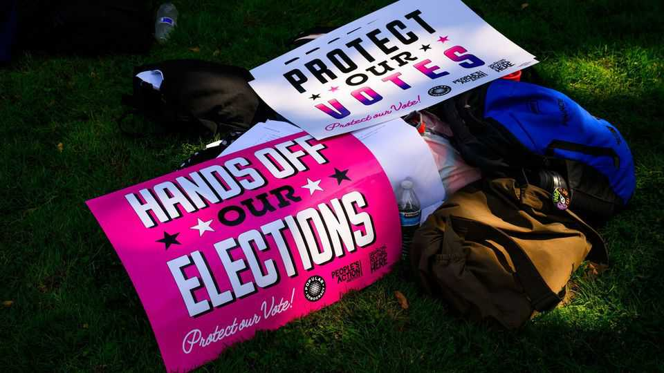
9月14日，最高法院出手阻止了这项措施，尽管它最初是应唐纳德·特朗普（特朗普）的指示起草的。尽管总统本人曾利用过它，但他却憎恶邮寄投票，这种投票方式民主党比共和党更常用，而他却在没有证据的情况下声称其充斥着欺诈行为。三月，他通过行政命令试图将美国邮政服务（USPS）从单纯的快递公司转变为邮寄投票的仲裁者。结果，总统干预中期选举的企图与他此前通过行政命令、诉讼和拟议立法试图重塑美国选民方式的其他尝试一样以失败告终。但若共和党在11月失去参议院或众议院，他已制造了混乱并设定了替罪羊。■
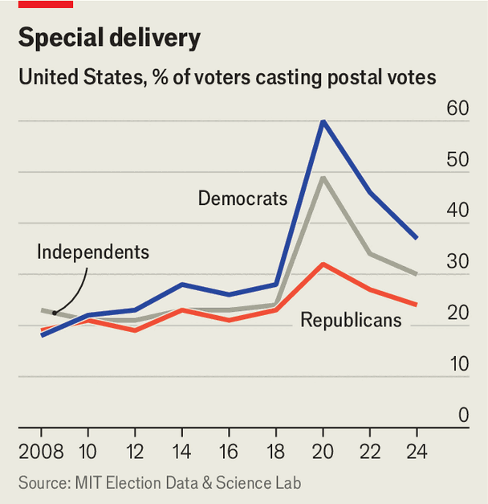
拟议规则要求美国邮政署必须将信封条形码与尚未存在的在线门户上传的各州选民名单进行比对，这一繁琐且未经验证的要求引发广泛争议。选举官员警告称这将导致大规模延误和选民被剥夺投票权。一名内部举报人向民主党参议员透露，美国邮政署员工认为该系统是“混乱局面”。尽管用词不如原话激烈，仅有两位大法官公开反对，最高法院本周仍下令叫停特朗普的这一操作。大法官们在完整法律程序中指出，特朗普“在实质上很可能会败诉”。法院援引美国邮政署草率的规则制定及可能引发的混乱作为维持现状的理由。总统似乎已无余力在11月大选前修改投票规则。但这并不意味着其他手段就此停止。■
三大担忧占据主导地位：总统可能派联邦官员到投票站恐吓选民，命令警方夺取投票箱，或施压亲MAGA的选举官员拒绝认证结果。州官员、民主党众议员和诉讼非营利组织已对这些情景进行了数月的推演。参议院民主党人已与外部顾问进行桌面推演，包括前司法部长埃里克·霍尔德。参与该组织的保护民主组织成员贾斯汀·瓦尔表示，任何此类事件发生后，首要任务是立即提起诉讼。与此同时，选举官员必须说服选民邮寄选票是可靠的。当堪萨斯州举行初选时，谢先生（Shew）所在县的现场提前投票人数激增。
五分之一的增长来自此前曾通过邮寄方式投票的人群。■ 及时掌握美国政治动态，请订阅我们的每日简报《The US in brief》，获取对重要政治新闻的快速分析，以及每周专栏《Checks and Balance》，深入探讨美国民主现状及选民关切议题。
§023 众院共和党人如何避免败局原题：How House Republicans might fend off defeat · 板块：United States · 栏目：美国
在唐纳德·特朗普时代，切勿轻信“确定之事”。民主党被普遍认为将在11月3日的中期选举中夺回众议院。反对党历来在中期选举中表现不俗，而特朗普的民望低迷、持续高企的通胀以及伊朗战争，已为共和党制造出尤为恶劣的环境。《经济学人》的选举预测模型将民主党的胜算评估为92%，预测市场也几乎同样乐观。然而，那些被预测为十年一遇的事件仍有可能发生，自2016年以来，特朗普及其MAGA追随者多次超越民调预期，这令人不得不重新审视。
共和党如何打破常规、守住众议院？全美435个选区都将进行重新选举，民主党只需净增三个席位即可赢得众议院。然而，大量选区划分操作让这一目标更加困难。传统上，各州每十年一次人口普查后重新划分选区，但特朗普敦促由共和党主导的各州提前进行选区划分。■
尽管民主党采取了反制措施，总统的推动仍取得了成功，根据我们的模型预测，选区划分使共和党席位增加了约八席。（若最高法院未于9月10日阻止密苏里州新选区地图提案，他们本可获得九席。）若没有这一策略，守住众议院几乎不可能。“如果我们守住众议院，那是因为中期选举前的选区划分”，密歇根州紧绷选区的共和党众议员汤姆·巴雷特的策略顾问杰森·罗表示。“我不认同这一做法，但它确实带来了结果。” 这场选区划分的热潮——在数十年的画界策略与美国人习惯性迁居至志同道合选民身边之后——意味着仅有5-10%的众议院席位具有竞争性。几个因素可能有利于共和党。首先是民调误差。■
民调显示，若今日举行大选，选民支持民主党候选人的比例平均领先共和党6.7个百分点。若这一差距在大选当日实现，民主党将轻松赢得众议院。但即便假设到11月民调数据无大幅变动，类似2020年出现的民调误差——当时民主党国会席位实际得票比晚近泛泛民调低约5个百分点——仍可能使共和党成为众议院的热门胜选者。选民参与度、候选人质量及负面广告激增等一贯重要的因素届时将发挥更显著的作用。以宾夕法尼亚州这一关键战场州为例，该州在2024年令民主党失望。在该州摇摆选区第8选区（位于东北部），特朗普（Trump）在总统选举中以8.5个百分点的优势胜出。■
共和党人罗布·布雷斯纳罕（Rob Bresnahan）当年翻盘赢得众议院席位，仅以1.5个百分点的优势胜出。两年前，该选区的温和派民主党州长乔什·夏普（Josh Shapiro）则以十个百分点的优势获胜。这种选民态度的转变究竟源于什么？斯克兰顿市市长、该选区最大城市市长帕吉·科格尼蒂（Paige Cognetti）正在竞选布雷斯纳罕的席位，她表示：“我认为选民更倾向于投票给个人而非政党。”科格尼蒂最初以反腐斗士身份进入政坛，她在竞选活动中指出，布雷斯纳罕在2025年进行了超过600笔股票交易，可能从中获取内幕信息获利。布雷斯纳罕否认有任何不当行为。科格尼蒂认为她的反腐主张与特朗普最初提出的“排干沼泽”口号存在关联，她理解“为何人们想要派一个人去华盛顿清理乱象”。■
特朗普的净支持率低至-25点，他坚持自己是大选主角的声势如此强烈，以至于对脆弱的现任议员如布雷斯纳罕构成沉重拖累。在宾夕法尼亚州竞争激烈的第10选区，共和党现任议员斯科特·佩里是右翼众议院自由党团（House Freedom Caucus）成员，政治学家克里斯托弗·博里克（Christopher Borick）表示：“他无法从特朗普面前躲开，我不确定他是否连躲都懒得躲。”在别无选择的情况下，共和党人押注于动员特朗普仍热情的支持基础，将民主党描绘成极端分子。若特朗普的广泛人气有所改善，将有助于局势。例如，若美伊战争结束，这种改善便成为可能。宾夕法尼亚州民主党竞选策略师J.J. ■
阿博特回忆称，2024年他忧心忡忡地目睹特朗普在关键摇摆州的民调随着大选临近而稳步上升。“这给民主党人敲响了警钟：他们不应假设特朗普的支持率无法向积极方向发展。”他说道。共和党人守住众议院的可能性达到10%，而非1%，这有其合理原因。美国人早已见识过特朗普的胡迪尼式逃脱术。■ 关注美国政治动态，请订阅我们的每日简报《美国简报》（The US in brief），获取最新政治新闻的快速分析，以及每周专栏《制衡》（Checks and Balance），深入探讨美国民主现状与选民关切议题。
§024 挺家庭议案透露出后特朗普时代议程原题：Pro-family proposals offer a glimpse at a post-Trump agenda · 板块：United States · 栏目：美国
副总统对家庭政策的观点使其成为右翼许多美国人眼中的英雄，却令左翼人士担忧其观点可能成为国家政策，犹如定时炸弹
多年来，J.D.万斯（J.D. Vance）批评无过失离婚制度，并建议有孩子的父母应拥有“更大的政治话语权”
他宣称：“普通美国人希望的家庭政策不应将孩子送入低质量的托儿所”
■
当《纽约时报》报道白宫将扩大联邦资金，用于资助有子女的家庭，包括全职家长时，引发了一场小规模争议，这并不令人意外。尽管白宫称该报道是“毫无根据的猜测”，但民主党众议员罗莎·德拉沃（Rosa DeLauro）等人仍公开谴责这一提议，认为这将“迫使更多父母争夺同一笔不足的经费”，并“不成比例地损害单亲在职父母”。福克斯新闻主播拉切尔·卡姆普斯-杜菲（Rachel Campos-Duffy）则称赞该提案，称其“体现了以家庭为先”。这一事件预示着一场即将到来的较量。越来越多的保守派政客、幕僚和智库人士不仅支持鼓励生育的政策，还推动所谓“家庭友好”政策，旨在让养育子女更容易。■
从民主党人推崇的政策到明确支持已婚异性伴侣的方案，各种理念层出不穷。唐纳德·特朗普可能在任期内推进少数提案，但接替他的人选势必会将这场辩论推向更高层次。历史上，共和党人一直对依赖政府救济的单亲母亲心存戒惧，这也是美国缺乏联邦育儿假制度的原因之一。截至目前，特朗普政府对美国家庭影响最直接的政策调整，是限制医疗保障资格并削减食品券发放。通过去年通过的《一个大美法案》（OBBBA），已有至少120万儿童失去保障资格。■
不过，家庭研究协会（Institute for Family Studies）的布拉德·威尔科克斯认为，共和党政治人物及其幕僚中正出现代际观念转变，他们希望推动的社会政策已超越单纯限制堕胎。“中年及年长的共和党人和保守派对‘真正推动家庭政策的努力’持非常怀疑态度，”威尔科克斯表示。但年轻一代共和党人更愿意支持家庭，他们担忧生育率下降，并希望服务于党派的新选民基础。“特朗普总统正是凭借拥有孩子的工人群体的支持赢得选举，”密苏里州参议员乔什·霍利（Josh Hawley）在2024年提出增加儿童税收抵免时曾表示。该税收法案“应为他们提供大幅减税”。■
马可·鲁比奥（Marco Rubio）、国务卿以及范斯（Mr. Vance）也支持扩大儿童税收抵免政策，范斯呼吁反堕胎运动应真正做到“真正意义上的家庭友好与生命至上”。扩大对有孩子的家庭的税收抵免是民主党一贯的优先事项；OBBBA则采取了较为温和的方式。一项跨党派法案于5月提出，拟为新生儿提供额外补贴以覆盖育儿成本。然而其他提案则明显偏向保守主义。除支持全职育儿家长的家庭外，另一项重点是废除税法中的“婚姻惩罚”条款；通过婚姻合并收入可能使夫妻失去联邦福利资格。对左翼批评者而言，存在几个问题。■
这包括“扩大”支持措施覆盖范围可能意味着扩大符合资格人群，如白宫提案所做，而非增加现金发放。民主党更倾向于为普惠托育服务提供更多资金。另一个相关问题是，一些提案旨在仅奖励特定类型的家庭。1月，保守派智库传统基金会（Heritage Foundation）发布了一篇70,000字的宣言，被称作“家庭政策曼哈顿计划”，其内容支持如今已成为民主党标准优先事项，例如将针对四岁以下儿童的儿童税收抵免翻倍，并放宽新建住房的监管规则。■
然而，传统基金会也明确指出，婚姻是“一男一女的承诺结合”，并主张政策应优先支持“自然婚姻”，而非同性恋、多伴侣关系、同居或有意成为单亲父母。其提案批评无过错离婚制度，并提出对早婚、多育且居家的群体提供更多福利。该计划旨在“重塑整个讨论框架”，其中一位作者艾玛·沃特尔斯如是说。今年早些时候，传统基金会举办的一场支持家庭的活动上，基金会分析师詹妮弗·加拉迪曾向与会者提问，询问是否应支付有家庭的男性比女性更高的薪酬，她表示：“随着文化变迁，我希望那个窗口……能打开。”另一位与会者则指出，这种改变将违反法律。家庭友好运动内部观点存在光谱差异。目前特朗普政府尚未有人公开支持传统基金会的计划。
伦理与公共政策中心（Ethics and Public Policy Centre）的保守派智库成员帕特里克·布朗（Patrick Brown）表示，他不会支持白宫传出的居家育儿者福利提案。不过，布朗先生对整体形势仍持乐观态度。他指出，若白宫由鲁比奥（Rubio）担任国务卿或范斯（Vance）出任副总统领导，他们“将真正投入更多精力推动家庭友好政策”。他与同僚们已准备好相关议程。■ 关注美国政治动态，请订阅我们的简报《美国简报》（The US in brief），获取每日重要政治新闻的快速分析，以及周度专栏《权力制衡》（Checks and Balance），深入探讨美国民主现状及选民关切议题。
§025 开发商渐爱上佐兰·曼达尼原题：Developers are learning to love Zohran Mamdani · 板块：United States · 栏目：美国
回溯到今年2月，纽约市新任市长佐赫兰·马姆达尼前往华盛顿特区。这位民主党社会主义者游说唐纳德·特朗普，争取210亿美元联邦资金。这笔钱并非用于普惠育儿或另一项左翼热情项目，而是用于皇后区的太阳溪园区（Sunnyside Yard），一个庞大的住房开发项目。该项目曾因多年延误而停滞——早在2019年，纽约州众议员亚历山德拉·奥卡西奥-科尔特斯（Alexandria Ocasio Cortez，美国民主党社会主义者（DSA）成员）曾反对该提案，称此类建设“驱逐有色人种社区，并将公共土地转交给私人房地产开发商”。但如今马姆达尼却支持这一计划。
一张照片显示他与特朗普在椭圆形办公室内微笑，总统手中举着一份仿制报纸，上书“特朗普致城市：让我们建设”。特朗普尚未兑现为Sunnyside Yard项目注资的承诺。然而，马曼迪的住房议程正变得愈发激进。民主党国会候选人不断提及“可负担性”，但真正让美国更具可负担性却更为艰难；左翼民粹主义者尤其需要抉择：是牺牲某些原则换取务实，还是坚持原则。但纽约市长已给出答案。针对“可负担性”议程最棘手的问题，马曼迪提出简单公式：挤压房东、吸引开发商。纽约市本就长期昂贵，但2024年最新官方数据显示，出租公寓空置率仅为1.4%，这一水平自1960年代末以来未曾出现。■
科科兰集团最新数据显示，情况并未显著改善。7月曼哈顿的空置率仍为1.6%。这种短缺推高租金，迫使居民搬离：在疫情后复苏之际，纽约市人口再度流失。纽约高昂生活成本引发的不满推动了马曼迪（Mamdani）的快速崛起。去年市长竞选期间，他承诺冻结由市政府监管的100万套公寓的租金。作为州众议员时，他曾哀叹一项拟建项目将“加速……居民迁移”。开发商对马曼迪当选市长感到震恐。去年一封在住宅开发商间流传的电子邮件警告称：“世界金融中心可能落入社会主义者之手……我们不能也不愿让这种情况发生。” ■
但市长初选两周前，马姆丹尼（Mamdani）对《纽约时报》表示，他已改变对开发商的看法。他表示，住房建设的私营市场“扮演着非常重要的角色，而市政府必须为其提供便利”。智库Niskanen Centre的亚历克斯·阿尔姆洛维奇（Alex Armlovich）指出，这项“交易”是“对旧住房实行社会主义，以换取新住房的市场”。作为市长，马姆丹尼仍对房东持敌意。6月，一个支持租金控制公寓零涨幅的市议会委员会宣布，该政策将于10月开始实施。市政府还通过其他方式施压房东：鼓励租户组织维权，并举办“租金欺诈”听证会，让租户可提出投诉。与此同时，马姆丹尼正积极推动开发项目。■
他组建特别工作组以识别建设负担得起住房的延误并寻找可重新利用的城市自有地块，随后在跑道上发布报告以象征市政府要克服的障碍（见图）。纽约市住房副市长Leila Bozorg表示：“我们的使命是充分利用一切机会，建设更多住房。”今年5月，Mamdani发布了十年内建设20万套经济适用房的计划，包括放宽监管并为营利性开发商提供激励措施，鼓励其翻新公共住房。纽约市住房伙伴关系（非营利组织，连接经济适用房建设方与政府）的Molly Wasow Park称，该计划“目标宏大且举措激进”。■
曾经持怀疑态度的开发商如今也感到欣喜。纽约建筑协会主席卡洛·斯奇斯克拉表示：“市政府在住房建设方面态度非常友好，这非常难得。”纽约商业伙伴协会主席史蒂文·富洛普也表示认同：“市长在这一领域处于有利位置。”这得益于市长马姆达尼的工作得到了州和地方政府层面其他措施的配合，从州级环境法规改革到加快建筑审批的公投措施。尽管数据有所波动，但2026年第一季度提出的住房单位数量激增至近17000套，比2008年以来的平均水平高出250%。博扎格女士表示，市政府还有进一步计划，例如鼓励在地铁沿线开发。但实现市长最雄心勃勃的构想仍面临障碍。■
要建造马曼达尼先生的20万套经济适用房，可能需要某种形式的公共支持，来源可能是华盛顿、纽约州或发行地方债券。纽约市对房东和开发商的政策仍存在张力。该市似乎在说：“我们希望你们能建房，但一旦你们建好了……”纽约房地产协会的巴沙·格哈茨停顿了一下。她委婉地补充道：“人们给这句话添加了各种形容词。”博扎格女士则认为针对房东和开发商的政策是相辅相成的。她强调：“建房是长期目标，但目前我们面临住房短缺，这意味着租户与房东之间存在权力失衡。”■
掌握美国政治动态，订阅《美国简报》（The US in brief），获取每日对关键政治新闻的快速分析；以及《权力制衡》（Checks and Balance），每周深度解读美国民主现状及选民关切议题。■
§026 特朗普对公众人物“德行”有何见识原题：What Donald Trump understands about character in public life · 板块：United States · 栏目：美国
唐纳德·特朗普的政治风格粗疏而粗鄙，以至于他很少因权谋和细腻的手段而获得应有的赞誉。以他对德克萨斯州总检察长肯·帕克森的处理为例，这位候选人的夸张缺陷使他在该州参议员竞选中成为今年最激烈的竞争之一。特朗普为帕克森打造了一套滑稽的讽刺表演，或看似如此。总统如此热衷于这场表演，以至于本月在达拉斯举行的中期选举大会第二天，他引用了自己前一晚的演讲内容，尽管他私下透露，幕僚曾劝他不要这么做。■
“我说，‘我不喜欢肯的穿着方式’，”特朗普回忆道，随着人群再次哄堂大笑，听到同样的段子。接着他又说，“然后我说，‘我不太喜欢他说话的方式’。”从大厅某处，帕克森（Paxton）出现在巨大的视频屏幕上，面带紧张的微笑，来回挪动双脚。“然后我说了他们最讨厌的话，”特朗普继续说道，指的是他的幕僚。“我说，‘我不太喜欢他的长相’。”总统担心自己太过刻薄，帕克森可能再也不愿与他交谈。但他表示没关系，因为帕克森是得州历史上最好的总检察长，作为参议员，他会“按照我们投票的方式”行事。正如许多评论员所指出的，认为特朗普只是在贬低帕克森仍低估了首位因重罪定罪后连任的总统。■
他确实贬低了一个手下，但同时也在强调一个信息，试图通过建立政客们所谓的“授权机制”来拯救帕克森先生：你可能不认为他是个有魅力的人，我理解，这没关系。重要的是他能为你办事。特朗普对公众生活中什么是品格的衡量标准有着比大多数人更深刻的理解。无论是在宗教右翼还是正义左翼，选民都显示出他们会对他们视为自己领袖的人容忍丑陋行为。特朗普早年曾表示自己可以在第五大道开枪而不会失去支持，他对此深信不疑，甚至建议民主党在放弃格雷厄姆·普拉特纳（曾是缅因州参议员候选人）时犯了错误。
他们原谅了普拉特纳的纳粹纹身和过去的性别歧视言论，直到一位前女友指控他性侵，而他予以否认。7月在白宫记者协会晚宴上，总统曾若有所思地表示：“我认为普拉特纳可能表现得相当出色，因为我们正处于特朗普时代。”得克萨斯州的选举正对特朗普的政治理念进行严峻考验。帕克森从未被定罪，但曾被起诉并被要求支付赔偿金。他被八名副手指控贪污和滥用职权，成为历史上第三位被得克萨斯州众议院弹劾的官员（包括多数共和党议员），但州参议院最终对他无罪释放。在20年公职生涯中，他神秘地成为数百万富翁，拥有超过十二处房产。■
他的妻子去年以通奸为由提起离婚诉讼；他曾被拍到在视频中拿走他人遗忘在安检机上的价值1000美元的万宝龙钢笔。特朗普确实有道理，帕克森是个差劲的演说家。他正面临来自詹姆斯·塔拉里科的挑战，这位前教师看起来像唱诗班男孩，正在学习成为牧师。塔拉里科言辞优雅、条理清晰，他展现出的不仅是真诚，更是虔诚。他最近对深夜脱口秀主持人吉米·基姆说：“圣经告诉我们，你不能爱上帝却恨他人，也不能爱上帝却虐待移民。”民主党青睐能将他们的议程包装成宗教右翼信条并指责其虚伪的候选人。37岁的塔拉里科也迷倒了异端的特朗普迷播客乔·罗根，后者去年鼓励他参选总统。■
但帕克斯顿对品格的强调带来了两个隐患。从公众虔诚到说教只有一线之隔。这对民主党来说是个特别的隐患，因为在特朗普时代，民主党已因傲慢或伪善而声名狼藉。另一个隐患是，看似圣人与已知恶棍相比，其跌落空间更大。莱斯大学的马克·琼斯称帕克斯顿“或许是有史以来得克萨斯州共和党人推出的最不完美的主要州级竞选人选”。但得克萨斯人早已心知肚明，他指出，而共和党人正开始投入数千万美元试图摧毁塔拉里科的声誉，让这场竞选变成两位不完美候选人的对决。若选民眼中两人同样不完美，那么多数得克萨斯选民会更倾向选择一位能像肯·帕克斯顿那样投票的人。■
特朗普在德克萨斯州人气低迷，不仅个人形象问题，诸如数据中心等议题也令帕克森陷入困境。他尚未同意与这位机敏对手进行辩论。然而，自1988年以来，德克萨斯州尚未选出过民主党籍参议员。作为该州众议院代表，他身兼共和党人所称的“人民共和国奥斯汀”（Austin）的代表，该州首府向来倾向民主党，其投票记录也偏向左翼。他过去曾持一些如今已摒弃的时髦观点，例如他曾声称存在六种性别而非两种，对此他表示“偏离了正确方向”；其竞选团队称他是“自豪的资本主义者”，而非那位曾称资本主义“压迫性”并需要“拆解”的人物。共和党人正利用这些转变，将塔拉里科从一个秉持原则的人转变为普通政客，一个虚伪的政客。■
这也正是特朗普给塔拉里科（Talarico）起的绰号“Talafreako”以及诸如他声称是素食主义者等虚假说法所传递的信息：真正不可信的是塔拉里科而非帕克森（Paxton）。正如已故参议员丹尼尔·帕特里克·莫伊尼汉（Daniel Patrick Moynihan）那句不朽名言所言，特朗普时代正在重新诠释“将偏差定义得越来越低”。得克萨斯州的选举将揭示这场政治动荡是否已触底。■
§027 巴西黑帮：凶杀更少，钱财更多原题：Brazil’s gangsters: less murder, more money · 板块：Americas · 栏目：美洲
全球最大的民用防弹车队在巴西城市中游荡。配备自动武器的安全护卫在高档购物中心巡逻。武装抢劫、车辆劫持和谋杀占据新闻头条。尽管近年来暴力犯罪率大幅下降（见图表），选民仍将犯罪列为巴西最严重的问题。巴西民众感到恐惧。转变中的商业模式解释了这一看似矛盾的现象。近年来，巴西两大主要帮派——第一首都司令部（PCC）和红司令部（CV）——已超越毒品贩运，拓展了业务范围。
巴西公共安全论坛（位于圣保罗的智库）表示，2022年贩毒集团仅从可卡因中获得30亿美元收入，但通过盗窃燃油、非法黄金、走私香烟和酒精等渠道，收入高达260亿美元。另有360亿美元来自网络诈骗和销售被盗手机的活动。如今犯罪活动带来的收入相当于巴西国内生产总值的约5%。这些活动本质上比毒品贩运更少暴力。PCC（Portuguese Criminal Command）和CV（Criminal Command）等组织已根深蒂固且相对稳定。因此，巴西的谋杀率在2025年降至每10万人19例的历史最低水平，较十年前超过30例的水平大幅下降。2018年至2024年间，抢劫案数量减少了一半，但富裕社区智能手机盗窃案却在上升。同期网络诈骗案件激增超过五倍。受贩毒集团新业务影响的人口数量远多于毒品贩运相关暴力事件的影响人数。■
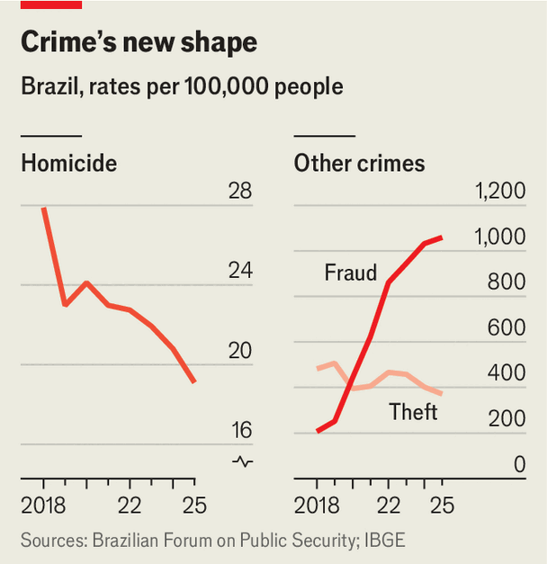
这种扩张助长了恐惧情绪。“凶杀案主要集中在贫困区域，因此引发的舆论声浪较小，”圣保罗的Sou da Paz研究所研究员卡罗琳娜·里卡多（Carolina Ricardo）表示。但手机盗窃和网络诈骗“影响所有人，无论贫富”。成为受害者的几率很高：去年巴西有超过80万部手机被盗。随着犯罪分子暴力程度降低，他们转而加大对腐败机构的渗透。据联邦警察称，2024年地方选举期间，帮派试图影响至少42个城镇和城市的竞选活动，创下纪录。据信，仅在圣保罗州，PCC就投入数亿美元支持候选人。随后，数位市长因与帮派有牵连被免职。警方本身也成为贿赂的目标。■
在一次事件中，圣保罗市精英部队的警官被指控以100万美元的价格向贩毒集团出售一名PCC线人提供的视频证词。此举不仅危及举报人的生命安全，还使一名PCC头目逃脱了逮捕。最近三位里约热内卢州的前警察局长目前或被监禁或正接受调查，涉嫌与有组织犯罪存在关联。即将到来的总统大选中，右翼候选人纷纷借由这一犯罪浪潮引发的恐慌情绪，大肆渲染自身政纲。所有参选人，包括右翼领跑者弗拉维奥·博尔索纳罗（Flávio Bolsonaro），都承诺推行某种形式的“布克勒模式”。该模式指的是萨尔瓦多强人纳伊布·布克勒（Nayib Bukele），他通过将涉嫌帮派成员直接收押入狱（未经审判），使该国凶杀率下降，目前全国成年人中有2%被关押。但布克勒主义在巴西恐难以奏效。■
PCC和CV比萨尔瓦多的勒索者更为复杂，其犯罪网络更难追踪和瓦解。若要通过大规模监禁进行强力镇压，势必打破现有平衡，反而可能引发更多暴力。巴西监狱空间狭小，原本设计容纳50万人，如今却关押着727,000名囚犯，这本身即是挑战。里约热内卢伊加拉佩研究所（Igarapé Institute）的罗伯特·穆加（Robert Muggah）指出，帮派将监狱视为“培训基地和新成员招募中心”。他们为新入狱者提供保护，若加入帮派即可获得手机等物资。许多小规模罪犯或陷入法律灰色地带的囚犯（巴西超过20万名囚犯尚未被定罪）出狱后已蜕变为强硬帮派成员。南美洲最大帮派的多数诞生于监狱之中。■
加强调查工作是降低犯罪率更有效的手段。在巴西，约40%的谋杀案嫌疑人被起诉，而西欧部分地区这一比例超过90%。在暴力犯罪率最高的州，如巴伊亚州，这一比例甚至低至13%。这种低起诉率营造出一种法外逍遥的氛围。对于盗窃等轻罪，起诉率往往低至5%。警方普遍缺乏专业训练，部分人员还涉及腐败问题。缺乏协调也加剧了治安困境。安全事务主要由各州政府负责，各州设有军事警察负责街头巡逻，民事警察负责调查工作。而非协同合作，州检察官指出，这些部门“往往相互竞争”。政界人士无需向国外寻找成功范例。在巴西南里奥格兰德州，州长爱德华多·莱特上任后，谋杀率自2017年以来已下降一半。■
莱特推出了一款数据平台，实时展示各市镇的犯罪活动情况。数据显示，超过90%的谋杀案发生于该州497个市镇中的23个。警方资源和社会项目主要集中在这些热点地区。位于州首府波尔图阿雷格雷（Porto Alegre）外围的暴力贫民窟阿尔沃拉达（Alvorada），其谋杀率已从2017年的每10万人113起降至目前的22起。像戈亚斯州（Goiás）这样的地区也通过改善警方与检察官之间的协作，成功降低了谋杀率。左翼现任总统路易斯·伊纳西奥·卢拉·达席尔瓦（Luiz Inácio Lula da Silva，简称卢拉）似乎理解这一问题。今年5月，他承诺投入20亿美元用于公共安全项目，采购新技术并加强调查工作。他还向国会提交了法案，计划将公共安全部从司法部中分离出来。■
新成立的独立部会旨在协助资金充足且训练有素的联邦警察与州和市警察协同工作。这种合作的承诺在2025年8月的行动中得到体现。一支1400人组成的联合特别行动组捣毁了通过PCC将2020年至2024年间被盗燃料销售所得的近100亿美元洗白至金融科技公司和投资基金的洗钱网络。这是近年来最成功的打击有组织犯罪行动，但选民几乎未予关注。里约热内卢犯罪监测研究中心（Fogo Cruzado）的玛丽亚·伊莎贝尔·库托指出，卢拉总统已执政超过11年的过去23年。每当他提出治安政策提案，民众就会问：“你为什么还没这么做？” ■
相反，许多巴西民众在去年10月警方对里约贫民窟（favelas）展开暴力突袭行动时表示支持，导致超过120人死亡。尽管政客们未能说服选民重视实质而非表面功夫，犯罪问题仍将困扰巴西。■
§028 牙买加教会成了气候活动家原题：Jamaica’s churches have become climate activists · 板块：Americas · 栏目：美洲
牙买加每平方公里的教堂数量比世界其他任何地方都多。三分之二的民众自认为是基督徒。根据2025年为牙买加正义协会（Jamaicans for Justice）开展的一项调查，约有相同比例的民众将教会视为最可信赖的机构。仅有五分之一的人对政府抱有同样信任。教会所传教的大部分内容都带有社会保守倾向。2013年，它曾领导大规模抗议活动，反对废除反男同性恋法。2019年，它又游行反对堕胎合法化。两次都取得了胜利。但有一件事上，牙买加的神职人员声音愈发进步：气候变化。
■
日益危险的天气是主要担忧所在。2025年，飓风梅丽莎从更温暖的加勒比海获取能量后席卷牙买加，摧毁了大部分电力网络，破坏了供水系统和电信基础设施，造成45人死亡。圣公会金斯敦主教加思·米诺特表示，教会的反应比政府更快，将富裕捐赠者与需要帮助的教区居民连接起来，提供建材并启动重建工作。该国北海岸的奥乔·里奥斯浸礼会教堂领导了三次独立的救援行动。米诺特主教称，教会正组建一个常设委员会应对气候变化，成员将获得薪酬。他表示自己深受20世纪初法国耶稣会神学家皮埃尔·泰尔特·德·沙尔丁的早期工作启发。■
他认为地球被一层集体人类思维和意识包裹，这种意识源自生物圈。这一所谓的“精神圈”将人类与地球视为相互关联且某种意义上具备意识的整体，同时也警示人类不要过度开发。其他牙买加生态基督徒则抱有不同动机。但许多人强调的是管家职责。对于牙买加浸礼会联会的梅琳·海德·莱利而言，这种责任源自《创世纪》一书，其中提到上帝赋予人类对地球的统治权。“我们将其解读为一种责任，不仅对人类，也对整个受造界。”这种理念并非没有挑战。一位教会领袖讲述了一位牧师写信向美国的“大牧师”寻求支持，却失望地收到回信，对方仅表示“为教会代祷”。■
牙买加基督徒可能认同气候变化的存在。并非所有人都这么认为。■
§029 哥伦比亚私采金区女性活得悲惨原题：Women lead brutal lives in Colombia’s illegal gold-mining regions · 板块：Americas · 栏目：美洲
“知道得越少，活得越久。”玛丽亚住在哥伦比亚安蒂奥基亚省偏远山区下卡瓦卡地区的扎拉戈萨镇。帮派控制着她的生活。一些当地人知道盘踞该镇的武装组织成员身份，主要为哥伦比亚最强大的犯罪集团“海湾帮”。玛丽亚不愿透露这些信息。无知是她抵御残酷现实的盾牌。居民们长期以来都是争夺下卡瓦卡地区自然资源控制权的棋子。但焦点正在发生变化。
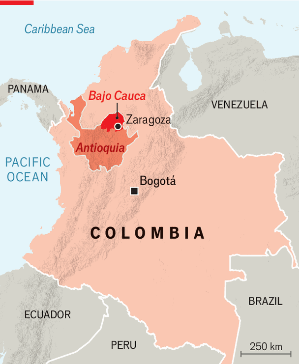
古柯植物（用于制造可卡因）的种植曾支撑着非法经济，如今黄金开采成为主要产业。全球对黄金需求激增，其价格在过去五年内翻倍（见图表），使巴乔卡（Bajo Cauca）沦为非法开采的西部片式荒野。采矿不仅主导经济，更支撑着一种社会秩序——武装人员掌控土地、机械及日常生活规则。玛丽亚年幼时就深刻体会到这一点，远在最新黄金热潮之前。她11岁辍学开始采矿工作，14岁离家与人同住，希望能过上更轻松的生活。然而，她反而更深陷采矿经济，如今还需承担家务。家庭外的工作机会极为有限。成为废料收集者（chatarrera）是其中一个选择。
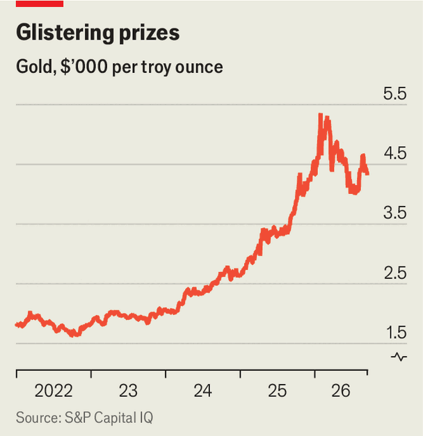
这需要翻找矿工丢弃的矿物废料堆，挑选出可能含有金子的碎片。许多废料处理者凌晨3点就起床，以便在一天的其他劳作开始前完成家务。通常需要一个多月才能收集到足够材料送往选矿厂，而女性在那里的报酬仅是微薄的计件工资。一种更传统的淘金方式——在河流中淘金（见图）——如今已变得异常艰难。重型挖掘机和抽沙机已摧毁了巴霍卡萨（Bajo Cauca）的河床。因此，淘金者必须长途跋涉才能找到可作业的地点。他们先乘独木舟，再徒步深入偏远地区，有时会长达数月之久。一些母亲设法将孩子托付给亲属照看，而另一些人则不得不带孩子退学，将他们带入旅程。性侵事件频发。■
男孩可能被迫加入武装组织成为童兵；女孩则被迫与年长男子结婚。马里亚表示，贫困迫使家庭冒险接受这些结局。在矿区周边，其他经济形态蓬勃发展——女性在其中占据特定位置。大多数矿业城镇都有一家妓院。从被默许的性交易到奴隶制，形成一条光谱。现年30多岁的马里亚表示，13岁那年，一名矿场管理员曾以金钱为诱饵强迫她发生关系。“这是我们女性所经历的暴力类型，”她说，“这在我们这里被视为‘正常’。”这种“正常性”在很大程度上由巴乔卡地区（Bajo Cauca）的帮派与游击队组合所定义。“他们会在社区内实施宵禁，使人们无法在夜间或特定时间后外出，”调查机构“洞察犯罪”（Insight Crime）的艾莉西亚·弗洛雷斯（Alicia Flórez）表示，“他们还制定行为守则，规定人们可以做什么、不可以做什么。”■
这些手册常迫使当地人参与修路修桥等民事工作。帮派随后自封为保护者和提供者。弗洛雷斯女士表示，当地人服从是因为他们清楚若不配合将面临暴力报复。如今当地人要应对帮派不断变化的要求已变得异常复杂。矿工们描述称需支付“疫苗费”（勒索费，以黄金收入为基准）以换取保护。过去“疫苗费”或许曾提供实际安全保障，但随着不同犯罪集团间竞争加剧，这种保障正逐渐被削弱。许多当地人表示他们需向多个团体甚至哥伦比亚国家力量支付费用。而国家政府几乎毫无作为。■
在左翼前总统古斯塔沃·佩特罗（Gustavo Petro）执政期间，政府通过立法允许手工矿工进行淘金活动，旨在帮助人们在不受帮派控制的环境下获得合法生计。与此同时，军队对非法采矿营地展开突袭并摧毁设备。但这些政策彼此矛盾。大多数矿工使用机器挖掘，因为传统方法已无法带来足够的黄金收益。这些机器几乎总是掌握在武装团伙手中。政府没收这些设备的行为，实际上伤害了其声称要帮助的矿工群体。玛利亚曾试图离开。35岁的她，在新伴侣的支持下重返校园，利用夜晚和周末时间学习，最终成为一名幼儿教师。短暂的一段时间里，一份儿童社会工作者的合同让她得以脱离采矿，但合同期满后，萨拉戈萨（Zaragoza）未提供其他选择。
黄金拉住了她。她的前景一片黯淡。“政治候选人总是做出承诺，”她说，“但当发生令人震惊的暴力事件或大规模流离失所时，人们会关注一周，甚至举行一天的游行。之后一切又归于平静。”■
§030 南非面临沦为黑帮之国之险原题：South Africa is at risk of becoming a mafia state · 板块：Middle East & Africa · 栏目：中东与非洲
结束其第一年。
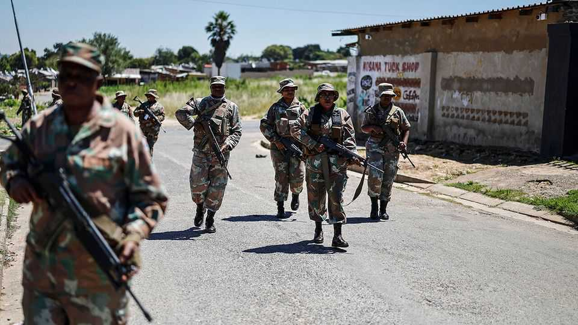
■
其电视直播的听证会披露的丑闻比万圣节派对还要多，揭示了黑手党如何渗透司法系统。南非能否遏制腐败将是对该国民主的终极考验。全球反跨国犯罪倡议（GI-TOC）将南非列为193个国家中组织犯罪最严重的第七名，仅低于缅甸、哥伦比亚、墨西哥、厄瓜多尔、巴拉圭和刚果，比巴西更糟糕。该组织负责人马克·肖表示，自2019年启动以来，每两年一次的报告都显示该国的犯罪记录持续恶化。■
世界银行表示，犯罪每年使南非损失至少10%的GDP，包括被盗财产、高昂的安全和保险成本，以及“错失的经济机会”。总统祖马（Cyril Ramaphosa）在2月份向议会表示：“有组织犯罪如今已成为我们民主、社会和经济发展的最紧迫威胁。” 南非长期以来一直是贩运枢纽，毒品、动物、稀有植物和人员被轻易走私。金融和网络犯罪也十分猖獗。但有三个令人担忧的新趋势正在浮现：非法经济的增长、勒索帮派的崛起，以及警察和政治被犯罪势力渗透。■
南非税务局长爱德华·基斯韦特（Edward Kieswetter）认为，非法经济活动规模已从二十年前占GDP的5%增长至今年的12-15%——至少相当于合法制造业的规模。合法企业正面临巨大压力。约70%的香烟和20%的酒类饮品非法流通。仅非法采矿一项，2024年就导致至少600亿兰特（约合33亿美元或占GDP的0.8%）的正规产出损失。基斯韦特估计，非法企业每年使政府损失高达3000亿兰特的未征税收入，相当于国家卫生预算的规模。第二大威胁是勒索。约十年前，夸祖鲁-纳塔尔省（KwaZulu-Natal）出现了一个“建筑黑帮”，成员威胁要破坏基础设施项目，除非获得合同分成。这些组织此后已蔓延至其他地区。■
开普敦市政府设立专门的“战情室”以协调保护50多个项目。市长格奥尔丁·希尔-刘易斯（Geordin Hill-Lewis）指出，犯罪分子手段狡猾，黑手党成员试图渗透承包工地安保的私营保安公司。绑架勒索案件在过去十年中激增三倍以上。商界人士正增加安保投入。Intercape公交公司自2020年以来记录了超过220起针对其车队的暴力事件，实施者多为与臭名昭著的“出租车行业”有关的犯罪分子，该行业提供小型巴士服务，对竞争充满敌意。最贫困群体受害最深。一些歹徒向教师勒索保护费。“水黑帮”组织破坏市政水管，通过行贿或暴力手段获取水罐车合同，随后按桶向贫困居民收费。■
开普敦正试图反击，已部署200名执法人员保护在犯罪猖獗的郊区提供公共服务的工作人员。随着有组织犯罪不断扩散，其已渗透至国家机构——这是最令人担忧的趋势。在姆兰加委员会（Madlanga Commission）成立前，夸祖鲁-纳塔尔省（KZN）最高警官恩赫兰加（Nhlanhla Mkhwanazi）曾爆出警方、政客与黑帮勾结的爆炸性指控。截至目前，该委员会的调查已导致南非警察部长、警察局长、副局长、警察反有组织犯罪部门负责人以及国家检控署（NPA）反腐败部门负责人辞职。事件核心人物是维苏穆齐“猫”马特拉拉（Vusimuzi "Cat" Matlala），一名被指控企图谋杀的黑帮分子，正接受审判。■
他被指控以现金和礼物收买官员，包括赠送数十头黑犀牛和减肥药Ozempic。调查委员会可能只触及了冰山一角。有组织犯罪日益增长的经济实力和政治影响力，使犯罪学家们越来越多地将南非与拉美最猖獗的黑帮国家相提并论。现任警察部长菲罗兹·卡查利亚（Firoz Cachalia）表示，政府自2024年以来已识别出162个犯罪集团。这些集团大多涉足多个犯罪市场，部分还与国际网络存在关联。他们从雇佣杀手的市场购买服务。根据GI-TOC数据，2000年至2025年间涉及合同杀人或未遂谋杀的事件约有2500起。今年截至目前，已有近30起政治暗杀事件。随着国家力量逐渐退缩，南非民众正越来越多地自行采取行动。■
在贫困地区，民众自发的暴力行为正在上升；而在富裕地区，私人安保公司则迅速扩张。上世纪90年代末期，每名警察对应一名私人安保人员；如今这一比例已达到四比一。受企业与政府合作解决电力短缺和物流难题的启发，这些公司通过提供培训和技术（例如银行和电信行业），协助调查人员和检察官处理复杂案件。目标是让犯罪集团头目身陷囹圄。“问责制是遏制有组织犯罪的最佳形式，”前国家公诉机关（NPA）副负责人、南非反犯罪企业联盟（BACSA）负责人安托万·杜普莱斯表示。然而，缺乏制度性改革，仅靠私营力量难以彻底解决问题。“你无法将法治私有化，”杜普莱斯指出。■
马兰加委员会为南非提供了一次千载难逢的机会，彻底整顿司法体系。这是南非迄今为止最接近其他国家成功打击有组织犯罪的调查案例，例如1990年代意大利的反黑手行动。11月，马兰加将向拉马福萨总统提交其改革方案。总统如何应对将定义其历史地位。其所属的非洲人国民大会（ANC）被牵涉其中。总统在扭转其前任祖马造成的制度性腐败方面行动过于迟缓。拉马福萨暗示他希望被铭记为终结南非“国家权力攫取”时代的领导人。但他时间所剩无几。非洲人国民大会领导人的继任者将在明年选举产生。■
订阅《Analysing Africa》周报，了解关于世界上最年轻且最不为人知的大陆的最新动态。■
§031 搅动南非警界的名警原题：The maverick cop disrupting South African policing · 板块：Middle East & Africa · 栏目：中东与非洲
去年7月出席记者会时，Nhlanhla Mkhwanazi的登场方式令人印象深刻。他身着迷彩服，身旁是持枪警员，看起来更像是西非一位将军即将宣布政变，而非南非警察。事实上他确实做到了。去年7月在德班，作为夸祖鲁-纳塔尔省（KwaZulu-Natal，简称KZN）警察局长的Mkhwanazi点燃了南非。他指控政界人士和警察高层与有组织犯罪勾结。■
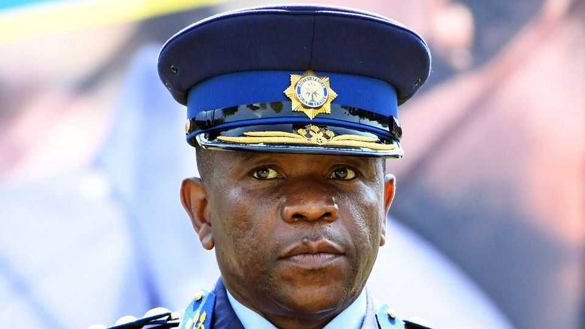
他称，权势人物曾施压警察部长和国家专员（他的上司），关闭了调查政治动机杀人案的部门。他指控警方与贩毒集团勾结。后果极其严重。南非总统西里尔·拉马福萨（Cyril Ramaphosa）已暂停该部长职务；其他高层人士随后也相继落马。调查发现，黑帮、警方与公职人员之间存在令人震惊的关联。为何姆克瓦纳齐（Mkhwanazi）公开爆料？支持者称他是一位恪守道德的公职人员：一位警察界的警察，感到有必要拯救南非警察服务局（SAPS）所剩无几的尊严。与他共事的警官称他为人正直、富有领导力。但即便那些称赞姆克瓦纳齐的人也对他的动机存疑。他们认为他的记者会是为争夺地盘而采取的行动。■
有人指控他下令处决涉嫌犯罪的人员，但他予以否认。除非调查发现确凿证据，姆克瓦纳齐（Mkhwanazi）的声誉将更上一层楼。他是南非最受欢迎的人物之一。一项众筹活动已筹集资金为他购买牛群。他被视为接任国家专员的热门人选。各政党正争相讨好他。这合情合理。大多数南非人告诉民调机构，他们愿意用选举产生的领导人换取一位能带来安全与就业的强硬领导人。自称重视家庭的姆克瓦纳齐，或许能满足南非民众对强硬保守派政治领袖的潜在需求——类似萨尔瓦多的纳伊布·布克勒（Nayib Bukele）。目前他表示无意涉足选举政治。南非民众仍将对他保持关注。■
订阅《Analysing Africa》每周简报，掌握全球最年轻且最不为人知的大陆的最新动态。■
§032 伊朗盟友威逼第二海运咽喉原题：Iran’s allies now menace a second maritime choke point · 板块：Middle East & Africa · 栏目：中东与非洲
2015年春季，受伊朗支持的胡塞武装攻占也门西海岸港口城市穆哈。他们将导弹部署在附近的佩里姆岛，该岛是红海入口处的礁石地形（见地图）。海湾国家担忧胡塞武装可能借此据点威胁曼德海峡的航运。六个月内，海湾国家的也门盟友收复了该岛。2017年胡塞武装也失去了穆哈。9月10日，胡塞武装再次占领穆哈。佩里姆岛次日落入其手。他们遭遇的抵抗微乎其微：反胡塞武装力量逃离了战斗。
这是自2022年以来胡塞武装的最大进展，当时停火协议曾冻结前线。他们正准备对塔兹市及马里布省发起攻势，后者是也门石油工业的核心区域。这对沙特阿拉伯——反胡塞武装联盟的主要外部支持者——而言是一次重大挫折，同时也为伊朗在与美国的战争中提供了助力。自2月霍尔木兹海峡大部分关闭以来，红海已成为沙特原油出口的关键通道。如今伊朗及其盟友也可威胁这条水道。在胡塞武装进攻后，布伦特原油价格飙升逾6%，突破每桶109美元。然而，这仍是持续12年的内战中的一场战役，局势往往趋于僵局。胡塞武装曾多次迅速推进，但最终往往难以守住所占领土。■
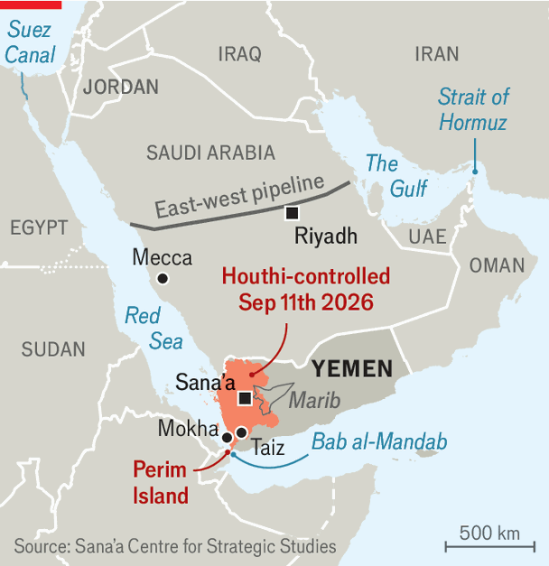
对石油市场的影响可能部分被通过霍尔木兹海峡增加的出口所抵消，美国海军在此处护送油轮安全通行。胡塞武装耗费数年时间筹备此次攻势，伊朗协助其装备无人机、导弹等现代武器。在争夺穆哈港的战役前夕，他们巧妙运用情报与宣传手段，窃取反胡塞指挥官的通讯设备，并向基层部队散布虚假撤退命令。误以为命令真实，战斗人员陷入混乱撤退，部分人甚至在路边出售武器。胡塞武装则从联军基地夺取了装甲车辆、火炮等装备。而在此期间，其对手内部爆发分裂，部分反胡塞派系效忠沙特阿拉伯，另一些则支持阿联酋（UAE）。
近年来，这两个海湾国家在也门等地推行不同外交政策，逐渐成为对手。沙特阿拉伯去年12月迫使阿联酋从也门撤军，导致联盟内部出现裂痕。也门方面抱怨沙特在冲突初期未能及时提供空中支援：尽管沙特拥有现代化空军，但往往难以有效运用。沙特阿拉伯迟至加大了对胡塞武装据点的空袭力度，但其盟友尚未在地面展开有力反击。与此同时，胡塞武装已对沙特城市发动多次导弹袭击。9月15日，沙特王国称在伊斯兰最神圣城市麦加附近拦截了一架无人机。伊朗对此反应热烈。强硬派报纸《凯汉》称美国“在水道战争中再次遭遇挫败”。
原定于9月14日举行的海湾国家与伊朗外交官峰会推迟举行。沙特方面迫切需要援助。“这不仅需要沙特阿拉伯和区域国家的支持，”接近王室的专栏作家阿卜杜勒-拉赫曼·阿尔-拉沙德写道。但他们获得的支持寥寥无几。美国在沙特部署了军事顾问以协助目标锁定，但特朗普拒绝了穆罕默德·本·萨勒曼王子请求其发动空袭的请求。一场持久战可能需要他抽调驻扎在霍尔木兹海峡附近的两支航母战斗群之一，从而削弱对伊朗港口的封锁。土耳其和巴基斯坦于8月与沙特签署了互防协议，但两国似乎都不急于介入。埃及总统也于9月15日会见了王子穆罕默德。■
埃及在也门有切身利益，因为对曼德海峡的威胁意味着苏伊士运河收入减少，而后者是其重要的硬通货来源。但埃及也对20世纪60年代在此地长期作战的痛苦记忆犹新。2017年，正是阿联酋迫使胡塞武装从穆卡撤离，其在也门的代理人往往比沙特阿拉伯的更为有效，而其本国军队也更专业。海湾国家间更好的合作能在地面战场产生实质性影响；然而截至目前，尚未见到这种合作的迹象。胡塞武装的推进并非沙特阿拉伯上周遭遇的唯一灾难。9月11日无人机袭击迫使沙特关闭其主要输油管道，该管道将东部油田的原油输送至西部港口。沙特指责伊拉克民兵组织发动了此次袭击（尽管无人声称负责）。■
伊朗已取消部分原定向欧洲客户的石油交付，迫使客户紧急寻找替代供应商。这看似是伊朗令人羡慕的处境：其盟友可同时威胁沙特阿拉伯境内及红海通道的石油运输。然而在阿拉伯半岛另一侧，越来越多的油轮在美军保护下穿越霍尔木兹海峡。部分油轮甚至在白天航行，表明伊朗打击移动目标的能力已明显下降。沙特已开始调整出口方向。航运追踪公司Vortexa表示，截至9月13日当周，沙特东部港口拉斯坦努拉（Ras Tanura）共装载了2200万桶原油。伊朗正收紧对一条战略水道的控制，而美国则正逐步放松对另一条水道的掌控。也门战争及海湾地区更大规模冲突仍未结束。■
§033 土耳其访叙利亚令以色列紧张原题：A Turkish visit to Syria has Israel worried · 板块：Middle East & Africa · 栏目：中东与非洲
土耳其外长哈坎·费丹（Hakan Fidan）于9月14日结束的为期两天的叙利亚访问，绝非普通的外交行程。费丹曾是情报局长，他所代表的政府在该地区被许多人视为伊斯兰国叛军组织“伊斯兰解放阵线”（Hayat Tahrir al-Sham）的积极支持者，甚至资助者。该组织于2024年12月推翻了叙利亚政权。一位叙利亚观察人士称费丹的访问是“凯旋之旅，为更大规模的凯旋之旅铺路”，预示土耳其总统埃尔多安（Recep Tayyip Erdogan）计划访问大马士革，叙利亚首都。
■
费丹先生，埃尔多安总统的潜在继任者，分别会见了叙利亚总统阿塞夫·沙拉（Ahmed al-Sharaa）和其内政部长。此次访问引发以色列政府不满，以色列担忧土耳其在北部邻国事务中影响力日益扩大。他的言论同样引发争议，称“目前对叙利亚最具破坏力的威胁是以色列”。埃尔多安总统原定的访问，距离叙利亚革命已近两年，可能显得有些姗姗来迟。这可能是因为沙拉急于澄清自己并非土耳其代理人。土耳其也可能在等待上月达成的协议完成，该协议旨在解散库尔德叙利亚民主军并将其并入叙利亚军队。土耳其对任何独立的库尔德武装都持怀疑态度，并已长期推动该协议的达成。■
但此次访问的时间点也可能反映出土耳其与以色列之间日益加剧的紧张关系。8月18日，以色列袭击了叙利亚北部废弃的阿布杜赫尔空军基地。以色列指责叙利亚“即将打破安全局势现状”，称其“允许土耳其军队部署”于该基地。目前尚无证据表明土耳其已扩大其在叙利亚的现有军事存在，但以方情报来源坚称他们掌握土耳其计划部署防空武器系统的消息，这些武器可能阻碍以色列的行动。“我们必须划出一条红线，”一名以色列安全官员表示。以方情报部门对土耳其在叙利亚的意图存在分歧。■
支持此次罢工的以色列人指出，埃尔多安及其人民党与穆斯林兄弟会教义存在意识形态亲和性，并公开支持巴勒斯坦伊斯兰运动哈马斯。土耳其近期与巴基斯坦、沙特阿拉伯签署安全协议，并在加沙地带未来谈判中发挥重要作用，以色列官员称此举旨在维持哈马斯的权力。在他们看来，土耳其在叙利亚影响力的任何提升都只会构成对以色列的威胁。所谓威胁被用来为以色列所谓“缓冲区”正名——该区域是其在2024年底巴沙尔·阿萨德政权倒台后占领的叙利亚领土。■
另一些人认为，尽管埃尔多安总统（Recep Tayyip Erdoğan）对以色列态度强硬，但考虑到叙利亚长达十多年的内战已使数百万难民涌入土耳其，他并不希望在该地区引发更多动荡。他们表示，以色列应能与土耳其就分歧展开对话，因为土耳其是北约（NATO）成员国，也是美国盟友。“土耳其与叙利亚的边境比以色列长得多，且更关注叙利亚的稳定，”特拉维夫国家安全研究所叙利亚项目负责人卡米特·瓦伦西（Carmit Valensi）表示，“以色列也需明确自身在该地区的安全利益，但应通过外交机制实现。”在埃尔多安掌权前，以土两国曾是亲密的军事盟友和贸易伙伴。目前他们尚未决定是否能承受敌对关系的代价，叙利亚局势可能迫使他们不得不如此。■
§034 摩洛哥丑闻动摇国王本不稳的统治原题：In Morocco, scandal is weakening the king’s shaky rule · 板块：Middle East & Africa · 栏目：中东与非洲
少有事件能像7月30日的“王位日”那样，对穆莱·穆罕默德六世的统治构成如此严厉的谴责。摩洛哥国王的车队从位于Mdiq的海滨避暑胜地疾驰而过，沿着空荡的高速公路驶向仪式现场，那里精英阶层成员向他行吻手礼。而与此同时，贫困民众则逆向而行，涌向邻近的西班牙飞地休达，随着网络消息传播，边境大门向欧洲敞开。超过7万名，主要是摩洛哥人，冒着生命危险逃离穆罕默德的王国。约百人丧生。纸面上看，穆罕默德的王国是阿拉伯世界罕见的稳定与现代化典范。■
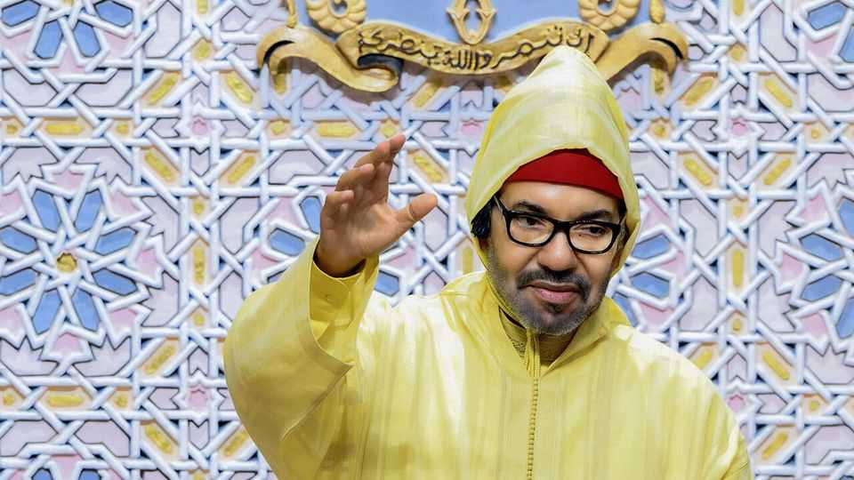
摩洛哥拥有蓬勃发展的汽车工业，正在扩建高速铁路网络，并已建成地中海地区最大的港口。该国吸引外资，与欧美保持密切关系，同时凭借与以色列的联系发展起日渐壮大的军工业。其君主制已延续四世纪，王位继承问题早已尘埃落定。但执政27年后，穆莱·穆罕默德（King Muhammad）统治下的3600万民众已普遍对国家未来失去信心。国王将资金投入2030年世界杯体育场等标志性项目，却忽视医院和学校建设。近三分之一的摩洛哥年轻人失业。国王安全部门负责人已压制了曾一度批评政府的媒体。批评者因涉嫌性犯罪被起诉并入狱。政党组织涣散，以至于多数摩洛哥人甚至不清楚9月23日议会选举究竟为何事。■
无论如何，真正的决策者并不出现在选票上。许多摩洛哥人更倾向于用脚投票。穆罕默德（Muhammad）一直是个隐士，多年前他带着踢拳朋友阿布·巴卡尔·阿布·阿宰塔尔（Aboubakr Abu Azaitar）北逃，以逃离首都拉巴特（Rabat）父亲的宫廷。他今年仅63岁，却已病体衰弱、形同虚设。最近见过他的人说，他明显健康状况恶化：青紫的手、变形的指节、肿胀的眼睑被墨镜遮掩。随着危机频发——2016年北部暴动、2023年地震使数十万民众无家可归，以及向Ceuta的逃亡潮——官员们等待王宫给出指引，却只换来沉默。在权力真空下，阴谋论层出不穷。有人声称安全部队被抽调参与王室庆典仪式，导致边境防务出现空缺。■
一些人认为，唐纳德·特朗普和本雅明·内塔尼亚胡正利用摩洛哥（Morocco）惩罚西班牙（Spain）反对他们在伊朗和加沙的战争。更有想象力的人则认为，摩洛哥民族主义者正准备就西班牙在北非的飞地问题向其发起挑战。评论人士则猜测，摩洛哥是否可能利用移民问题向欧盟施压，要求增加补贴。在内部人士中最具说服力的理论是，国王的安全官员正因西班牙收容了一名掌握国家机密的举报人而惩罚西班牙。这些说法难以验证。据已发表的报道和摩洛哥（state）自称的“makhzen”（储藏处）内部消息，一名在摩洛哥内部情报机构内部工作的间谍携带着一份嫌疑人名单逃亡，而摩洛哥的特工曾利用以色列的间谍软件追踪他。■
从名为21号行动室的机构（据称包括以色列特工）出发，他们入侵手机和监控摄像头，监视摩洛哥及欧洲的知名人士。有人称其目标甚至包括国王本人。在逃亡至突尼斯、法国后，这位泄密者——代号萨菲尔（或称外交官）——最终抵达西班牙，西班牙为其提供庇护。官员们对西班牙给予萨菲尔的庇护感到被背叛。但随着国王健康状况恶化、王室安全机构为继承权争夺而明争暗斗，向欧洲叛逃的案例正持续增加。最严重的裂痕出现在国王的旧部将领福阿德·阿里·埃尔·希姆马（国王儿时好友兼首席顾问）与国王之子、指定继承人哈桑及其母萨尔玛之间。2018年国王与萨尔玛离婚后，希姆马在国王授意下将萨尔玛置于准软禁状态。■
当她的儿子成为国王时，萨尔玛（Salma）将成为王太后，而希姆马先生（Mr Himma）担心她将实施报复，将儿子驱逐出摩洛哥。随着继位时刻的临近，紧张局势可能加剧。■ 注册订阅《Analysing Africa》，获取关于世界最年轻且最不为人知的大陆的每周简报。
§035 法国中间派只问一句：谁能胜勒庞？原题：France’s centre has one question: who can beat Marine Le Pen? · 板块：Europe · 栏目：欧洲
一位总统候选人穿着围裙，从餐车里端出薯条；另一位系上安全带，攀爬至风力涡轮机顶端；还有人发起“千家餐馆”听政之旅。这些花哨的表演手段标志着总统大选季已拉开帷幕。法国将在明年4月和5月举行两轮投票，选出埃马纽埃尔·马克龙的继任者，而马克龙因任期限制无法连任第三届。民调始终支持极右翼民粹政党国民联盟（RN）的玛丽娜·勒庞，她于9月13日启动竞选活动。■
七个月后，总统竞选已演变为一个关键问题：谁能击败勒庞？作为国民联盟（RN）领导人，勒庞第四次参选总统，目前占据明显优势。五项新民调显示，她在第一轮选举中获得32%至36%的支持率——至少领先最近的竞争对手埃德瓦·菲利普（Edouard Philippe）13个百分点，后者是马克龙（Macron）昔日的总理。在三种可能的决选情景中，勒庞均能胜出。其中一种情景显示她以55%对45%击败菲利普。法国民调显示领先如此悬殊的情况往往并不准确。马克龙在2017年大选前也仅被提及寥寥几次。一些过往热门人选（如1994年的埃德瓦·巴尔代鲁、2016年的阿尔ain 雅各布）最终均遭淘汰。■
三年多来，勒庞女士在首轮投票中仅一次低于30%的支持率。“与以往选举不同的是，这次她有可能赢得选举，”来自马克龙所属复兴党的前部长克莱芒·贝诺表示。“她的胜负关键取决于我们。”然而所谓“我们”却正面临困境。法国中间派从左翼的社会党延伸至右翼的共和党，至少有15位候选人活跃在此区间；部分人已表态参选，其他人则计划在10月的社会主义党初选中角逐。更多人则暗示有意参选。这种碎片化使得任何一方更难获得进入第二轮投票的资格，最终选择可能在两个极端之间展开：勒庞女士或极左翼民粹领袖让-吕克·梅朗雄。法国中间派的困境并非孤例。■
民粹右翼政党在许多民主国家势头正盛。然而在匈牙利、荷兰、波兰、罗马尼亚等地，中间派却找到了击败他们的方法。除了在移民和犯罪问题上表现出强硬姿态，击败民粹政党的政客往往具备三个共同特质。首先，他们充满精力。例如匈牙利中心右翼自由派彼得·马加尔（Peter Magyar）在四月击败了维克托·欧尔班（Viktor Orban）；荷兰中心左翼自由派总理罗布·杰滕（Rob Jetten）也展现出类似特质。两人均投入大量精力进行基层竞选活动。马加尔在两年内在全国各地奔波，曾连续行走300公里，每天最多发表七次演讲。其次，他们往往属于叛逆的局外人——或能可信地塑造出这样的形象。马克龙（Macron）曾是一名精英培养的前部长，却将竞选定位为对既定政党的反抗运动。■
马加尔（Magyar）这位长期执政党成员，塑造自己为党内叛逆者，抨击其前政党腐败。罗马尼亚的尼库利斯·丹（Nicușor Dan）去年赢得总统选举后，巧妙地与旧政党划清界限，尽管他仍是布加勒斯特市长。第三，成功的中间派擅长在选民关心的问题上提出易于传播的倡议。杰滕（Jetten）提议建设十个新城市，是严肃但并非字面意义上的承诺，旨在应对该国住房危机。丹则通过现身阻止推土机作业，表明自己将打击腐败，介入敏感的公共工程。拒绝简单口号和精致短视频的中间派，将难以与选民，尤其是年轻人建立联系。法国的候选人表现如何？对中间派而言，坏消息是两位最符合这些特质的候选人竟是勒庞（Le Pen）和梅朗雄（Mélenchon）。■
在最近一场总统辩论中，这对搭档的发言最为犀利。75岁的梅朗雄先生第四次参选，深谙如何提炼金句；他提出的“烧掉”（burn it）是解决法国主权债务问题的建议。勒庞女士则因7月法院缩短了贪污禁令而得以参选，她缺乏乔丹·巴德拉（Jordan Bardella）那样的新鲜感和TikTok敏锐度。但作为反体制候选人，她的主张如禁止公共场所佩戴穆斯林头巾，虽缺乏其他优势，却具备清晰度。相比之下，没有哪个中间派候选人敢声称自己具备颠覆性。三位曾效力于马克龙的候选人包括：菲利普先生、前总理加布里埃尔·阿塔尔，以及前内政部长布鲁诺·雷塔卢，后者是共和党提名的候选人。最接近的是拉斐尔·格鲁克曼，他正在参加社会党初选，并公开反对马克龙。■
但他目前在民调中仅排第四。菲利普先生于三月再次当选勒阿弗尔市长，至少赋予他地方特色。他也是经验最丰富的候选人；其团队认为权威仍具影响力。菲利普是中间偏右的财政保守派，不回避法国人必须工作更多以改善公共财政的事实。但很难将菲利普与令人难忘的口号或理念联系起来。今年七月他在巴黎首次集会演讲超过一小时后，才刚刚提到人工智能带来的行政效率提升。37岁的阿塔尔先生则具备魅力，擅长一针见血的言论。他似乎也乐于投入竞选。"他渴望推动，看看自己能走多远，"一位了解他的人说。但阿塔尔与雷塔卢先生至今仍未实现民调突破。两人也都拒绝了菲利普呼吁他们支持他的提议。■
要达成一致推举单一候选人，需要什么条件？“党内初选已经太晚了，”菲利普派支持者如此表示。民调和背书可能对较弱的候选人施加压力，但这一过程可能需要数月时间。即便三位主要候选人达成协议，也可能不足以平息争议；社会党人将团结在自己推举的候选人身后，而右翼部分人士或将转向勒庞女士。对分裂风险的担忧促使一些人希望出现一位举足轻重的外部人物，以掌控局势。然而，那些试图扮演这一角色的人——从右翼的多米尼克·德维尔潘（Dominique de Villepin）到左翼的弗朗索瓦·奥朗德（François Hollande）——均缺乏说服力。欧洲央行行长克里斯蒂娜·拉加德（Christine Lagarde）表示，这“不在议程上”。时间已经所剩无几。根本性矛盾在于，中间派缺乏势头且感到疲惫。
由英国政治策略师克莱尔·艾因斯利（Claire Ainsley）和黛博拉·马蒂森（Deborah Mattinson）为智库进步政策研究所（Progressive Policy Institute）进行的一项未公开焦点小组研究发现，法国中间派和中间偏左选民对中间派能够产生任何影响的信心已大幅削弱。艾因斯利女士表示：“选民感到中间派已失去活力，却不知该转向何处。”民粹主义者步履轻快，目标明确；而中间派则缺乏活力、冲击力和凝聚力。一位中间派人士表示：“如果我们接下来几个月继续互相攻击，那么我们将迎来灾难。” ■
§036 瑞典左翼险胜原题：Sweden’s left seems to have eked out a narrow victory · 板块：Europe · 栏目：欧洲
瑞典选举往往以胶着态势收场。9月13日的投票也不例外。选举之夜的大部分时间，执政党似乎仍有望维持政权。但随着计票推进，左翼反对党以176席对右翼173席的微弱领先逐渐稳固。社会民主党领袖玛格达莱娜·安德松（Magdalena Andersson）很可能将领导新政府——尽管其执政联盟内部摇摆且分裂。这次选举对中右翼首相乌尔夫·克里斯特森（Ulf Kristersson）构成打击，但并非大多数人预料的那样。■
全年大部分时间，民调显示自由派选民可能因克里斯特松政府与瑞典民主党（SD）合作而惩罚该政府。瑞典民主党曾因新纳粹背景被主流保守派排斥，但双方共同实施了欧洲最严格的移民政策。然而最终克里斯特松的温和党坚守立场，而瑞典民主党却陷入困境。该党得票率下降三个百分点，首次低于温和党。瑞典民主党自2010年进入议会以来，每次选举得票率都在上升，曾以激进能量为傲。此次遭遇是该极右翼政党罕见的挫折，其欧洲盟友大多正处于上升期。瑞典民主党领袖吉米·阿克塞尔松试图以务实亲民的形象安抚选民。■
他的竞选视频主打怀旧情绪，并承诺“让瑞典再次成为瑞典”。9月12日在斯德哥尔摩举行的最终集会更像是音乐节，而非该党过去紧张愤怒的示威活动。压轴环节，一名佩戴粉色面罩、身着黄色裙子的女性在舞台上跳起舞步，高唱“给我，给我一些对吉米的爱！”，烟火点亮了广场。但瑞典民主党（SD）的宣传也暗藏更尖锐的锋芒。在大幅削减移民数量后，该党将矛头对准已定居瑞典的移民，宣称要让瑞典对移民变得不友好。其政策包括禁止佩戴头巾，并扩大对已获得公民身份的移民的遣返补贴。一则广告写道：“你怀念摩加迪沙吗？遣返补贴将助你重返故土。” ■
在最后一刻，阿克塞尔森（Mr Akesson）亲自前往斯德哥尔摩北部的移民聚居区林克比（Rinkeby）投下选票。他在投票站表示：“瑞典不应该像这样。” 但这些旨在激发瑞典民主党（SD）强硬支持者支持的举措似乎未能奏效。民调机构Novus的托尔比约恩·斯约斯特伦（Torbjorn Sjostrom）指出，移民政策的政治博弈远比瑞典人对移民的看法更为复杂。他提到，52%的受访者反对取消移民的永久居留权，这正是SD的主要提案之一。像林克比这样的地区投票率很高：一名活动人士表示，选民在投票站开门前就已排起长队。前社会民主党议员皮里·尼米（Pyry Niemi）在更北边的滕斯塔（Tensta）拉票时表示：“他们担心这个政府会把他们遣送走。” 然而，极少有这类选民最终支持社会民主党。■
即便瑞典著名音乐人本尼·安德松（Benny Andersson）——这位ABBA乐队明星在选举日表演了《妈妈咪呀》的片段（“玛格达琳，我们又来了！”）——的干预也未能为该党带来提振。社会民主党（SD）的得票率创下逾百年新低，仅得28%。小党势力则大幅上升，包括绿党与左翼党（原为共产党）。这可能使安德松阵营的执政难度加大。除环保主义者和左翼人士外，她的联盟还包括中心党（唯一拒绝与社会民主党合作的保守党），该党已排除与左翼党正式组阁的可能。曾于2021-22年短暂担任总理的安德松很可能不得不组建少数政府。阿伯丁大学的安德斯·维德费尔特（Anders Widfeldt）表示：“这些政党可谓差异极大。”“那里根本不存在一个可信的政府。”■
如果联合政府效率低下，可能成为民粹主义攻击的靶子。瑞典极右翼政党SD（Sweden Democrats）已开始试图削弱左翼联盟的胜利成果。该党一名议员暗示，安德松女士阵营的胜选仅因近年来获得公民身份的移民选民支持。此前若克里斯特松先生胜选，SD曾被承诺获得内阁席位，如今该党已赢得曾被认为难以想象的主流认可。安德松女士仍可能难以遏制这种势头。■
§037 土耳其抗欧令不释政治犯原题：Turkey defies European orders to free political prisoners · 板块：Europe · 栏目：欧洲
打击政治异见的一种有效方式，是将无害的活动人士以残酷手段惩罚。2013年，奥斯曼·卡瓦拉（Osman Kavala）——一位经营文化保护慈善机构的商人——参与了伊斯坦布尔盖齐公园（Gezi Park）反对一项建筑项目的抗议活动。四年后，在政府扩大镇压行动中，他被捕，并于2022年被判处无期徒刑，不得假释。8月25日，欧洲人权法院（ECHR）下令土耳其释放他。但土耳其可能彻底退出欧洲的人权体系 ■
作为欧洲人权公约缔约国，土耳其在法律上受欧洲人权法院裁决约束。但其拒绝执行此前两项释放卡瓦拉的裁决。此次斯特拉斯堡法院进一步指出，土耳其存在“系统性起诉和监禁人权捍卫者、政治对手及记者的问题”。所谓卡瓦拉“企图推翻政府”的证据不足：检察官仅注意到其购买糕点并为抗议者提供野餐桌。欧洲人权法院认定，土耳其当局以监禁手段压制多元主义与政治辩论。2019年及2022年土耳其拒不执行法院释放卡瓦拉的裁决时，西方政府曾予以批评。但该国在北约及遏制欧洲移民方面的关键作用，已使此类担忧被淡化。
土耳其总统雷杰普·塔伊普·埃尔多安已成为“欧洲国家难以对其施加压力的人物”，中东研究所（Middle East Institute）的戈努尔·托尔（Gonul Tol）表示。他现在利用这种自由对同性恋权益倡导者展开打压。自9月13日起，警方已突袭了多个LGBTQ+组织的办公场所，拘捕超过百名抗议者。欧洲仍可尝试外交斡旋，甚至暂停土耳其在欧洲委员会（Council of Europe）的投票权，但此举可能反而促使土耳其退出。在欧洲人权法院（ECHR）裁决后，埃尔多安首席法律顾问梅特·乌库姆（Mehmet Ucum）在X平台上的帖子中表示，土耳其可能会重新考虑其成员国身份，或阻止土耳其公民向该法院提交申诉。土耳其司法部未对评论请求作出回应。■
对陷入政治追诉的人来说，欧洲人权法院（ECHR）仍是少数可寻求救济的途径之一。其在卡瓦拉（Mr Kavala）案中揭示的土耳其司法体系遭系统性干预的调查结果，可适用于后续案件，包括伊斯坦布尔市长埃克雷姆·伊姆亚穆卢（Ekrem Imamoglu）的案件——他因决定竞选总统职位而被逮捕。土耳其有体面的脱身方式：其宪法法院可受理卡瓦拉的上诉，从而通过本国司法体系而非服从外国命令来履行义务。土耳其当局在裁决后表示，卡瓦拉可在本国重新提起诉讼。若此途径失败，前欧洲人权法院法官里扎·图尔门（Riza Turmen）担心局势将更加严峻。■
放弃这一惯例意味着切断土耳其与西方国家长达数十年的制度性纽带之一。“这将不再是一个以法治为基石的现代民主国家，”他表示，“即便这种法治仅体现在纸面上。”■
§038 极右德国政党或再输州选举原题：The AfD could stumble in another state election · 板块：Europe · 栏目：欧洲
这是一个奇怪的场合，让一位沉稳的政治家现身。在德国波罗的海沿岸港口罗斯托克的一座大帐篷马戏团内，梅克伦堡-前波莫瑞州（Mecklenburg-Vorpommern）社会民主党（SPD）州长曼努拉·施韦希格（Manuela Schwesig）正向支持者发表竞选演讲，为9月20日的选举造势。施韦希格向党内忠实支持者提供温和的红肉（暗指石油公司）、对承受物价上涨的选民的共情，以及几则个人故事。然而有一个致命的销售点。她表示，唯有投票给SPD，才能“阻止AfD成为最强政党”。 ■
9月6日，极右翼政党德国另类选择党（AfD）在东部萨克森-安哈尔特州（Saxony-Anhalt）赢得压倒性胜利。该党此前一直被预期能在“梅克-波美拉尼亚”（Meck-Pom）地区复制这一战绩。施韦希格（Schwesig）竞选团队负责人莉莉·布劳茨嫩（Lilly Blaudszun）拿出手机，展示一年前的民调数据，当时社会民主党（SPD）仅获得19%的选票，仅为AfD得票量的一半。但施韦希格实现了戏剧性反弹，目前SPD仅以两个百分点落后于AfD（见图表）。这要归功于AfD的“幽灵”形象。一张SPD宣传海报将施韦希格描绘为身着社会主义红色的“反对蓝色的女士”（Die Frau gegen blau），即AfD的代表色。自2017年上任以来，施韦希格通过将选票压缩为两党对决，利用自身人气吸纳其他政党的支持者，包括基督教民主联盟（CDU）。多数选民希望她继续担任现任职务。■
Jochen Müller在格赖夫斯瓦尔德大学指出，施韦斯格女士曾一度被贬为“海岸边的芭比”，但逐渐赢得了“州母”（Landesmutter）的声誉。她掌管的贫困州实现了温和增长。国际上她因坚定支持俄罗斯天然气管道“北溪2号”而闻名，该管道登陆其所在州（后被疑似乌克兰势力炸毁）。2021年她甚至成立了一家旨在规避美国制裁的基金会，资金来自俄罗斯天然气工业股份公司（Gazprom）。施韦斯格女士现承认此举是错误的，并支持德国对乌克兰的立场。近期她因批评联邦政府的养老金改革方案而获得好感，该方案中社会民主党（SPD）担任联合执政党。即便她无法超越德国另类选择党（AfD），她仍可能继续担任州长，或许领导左翼三党联盟。■
这将使她具备继承社会民主党（SPD）全国领导职位的有利条件，如果正如许多人预期的那样，该党两位共同主席中的一位或两位在梅克伦堡-前波莫瑞州选举及柏林另一场选举后辞职。若她的极化策略使基督教民主联盟（CDU）得票率跌破5%门槛，甚至总理弗里德里希·默茨也可能面临下台风险。■
§039 俄罗斯作秀选举滑向闹剧原题：Russia’s sham election is descending into farce · 板块：Europe · 栏目：欧洲
俄罗斯虚假选举正滑向荒诞剧。议会选举后可能迎来更大规模的战争动员
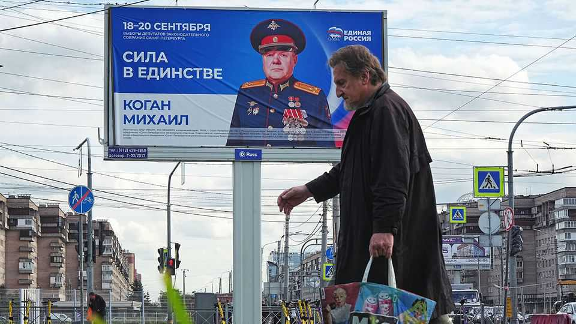
“亲爱的选民们，下午好。”44岁的阿列克谢·切尔诺夫（Alexey Chernov）紧张地背诵着竞选纲领，他穿着格子法兰绒衬衫，身材圆润。他用28秒说出几句支持大家庭的言论。“就这些？”电视演播室主持人提醒他，规则允许他发言一分钟。“或许还有别的想法？”“不，不会再有其他内容了。”他说。剩下的时间被钟表的滴答声填满。这就是本月在俄罗斯第一频道播出的杜马（Duma）议员候选人电视辩论场景。
投票将于9月18日开始，持续三天。急救员切尔诺夫（切尔诺夫）热衷于涉及兽人的实景角色扮演，他正在竞选此前鲜为人知的直接民主党。在另一场辩论中，一名候选人用一首苏联时期的歌曲填满了整个时间槽。他代表俄罗斯共产党，另一个搅局政党。该党的名称显然是为了与俄罗斯联邦共产党（俄罗斯杜马第二大政党）制造混淆，后者偶尔会表现出对克里姆林宫的些许独立性。俄罗斯人将今年的杜马选举称为“特别选举行动”，以此类比政府指定的“特别军事行动”这一术语，该术语用于指代对乌克兰的战争。自2000年代初以来，克里姆林宫一直在将俄罗斯的民主制度逐步转化为虚影。■
其目标是遏制任何持不同政见者参与投票，同时迫使可被施压的公职人员支持弗拉基米尔·普京的统一俄罗斯党。但今年的选举已达到荒谬的新低点。以往选举中，克里姆林宫通过允许少数反对派候选人参选（有时甚至获胜）维持表面的多元性。必要时，选举结果可通过一定程度的舞弊手段进行调整。既得利益集团默许这场闹剧，因为他们从现状中获益；而更广泛的人群则将其视为稳定信号。这种平静感早已消失，隐性共识也正逐渐瓦解。俄乌战争已进入第五年，尸体堆积如山，被轰炸的俄罗斯炼油厂正冒出滚滚浓烟。■
最近，独立民调机构Levada的一项调查显示，约70%的受访者认为政治局势紧张或危急。燃料短缺只是最直接的影响。更重要的是，缺乏任何和平或更好未来的前景。柏林卡内基俄罗斯欧亚中心的Ekaterina Schulmann指出，在独裁体制下，选举的目的并非了解民众诉求，而是测试体制是否正常运作并能执行独裁者的意志。选民的角色是展示忠诚。但这次民众对配合表现出了明显冷淡。Levada发现，夏季开始时，三分之二的俄罗斯人并不知道选举即将举行。政治学家Elena Panfilova组织的焦点小组中，常见回应是“什么选举？为了什么？”■
他们难道看不到国内正在发生什么吗？”当被问及九月可能发生什么事件时，许多人回答：“动员？”在统一俄罗斯党的竞选广告中，候选人大多是身穿全套军装的严肃老兵。研究精英群体的米哈伊尔·科米因（Mikhail Komin）预计会有50名老兵进入国家杜马。与此同时，那些意识到战争将带来灾难性后果的非军事精英群体，对普京的决策日益感到疏离。一位前高级官员表示，这是“对普京而言完全新的局面”。这种紧张局势导致了管理方式的转变。在以往的选举中，确保获得多数席位的任务交由被称为“政治技术官”的官僚和官员负责。而这一次，国家安全部（FSB）已成为主要政治行动者，负责选拔和替换候选人。■
他们更倾向于使用更直接的手段：禁令、恐吓和逮捕。俄罗斯最古老的自由派政党“雅罗斯拉夫尔”（Yabloko）因公开反战立场导致民调大幅上升，被禁止参选。8月17日，该党最受欢迎的领导人之一列夫·什洛斯伯格（Lev Shlosberg）被判处11年监禁。6月，该党副主席马克西姆·克鲁格洛夫（Maksim Kruglov）被判处7年有期徒刑。多名成员已被逮捕。其候选人因展示所谓“极端主义”符号而被禁止参选，例如与亚历克赛·纳瓦尔尼（Alexei Navalny）的合影。在车里雅宾斯克，一名候选人因引用苏联外长安德烈·格罗莫夫（Andrei Gromyko）的名言“十年谈判胜过一日战争”而被取消资格。但不仅限于自由派人士，俄罗斯联邦安全局（FSB）正在清除任何可能突然获得人气的人，无论其所属政党。■
当拥有200万YouTube粉丝的共产党候选人尼古拉·邦达连科（Nikolai Bondarenko）在电视辩论中批评政府的互联网限制政策时，他随即因捏造的罪名被拘留。那些获得FSB批准参选的人深知，赢得选举可能比输掉选举更加危险。在距莫斯科东南方向185公里的里亚日斯克（Ryazan），所有候选人都未出席电视辩论。那些过去曾参与投票的受过教育且政治意识较强的俄罗斯人，如今已不再认为这场闹剧有意义。但一些此前自认为与政治无关的人计划投票，不是因为他们相信投票会带来改变，而是作为一种安全的方式来发泄不满。35岁的莫斯科居民德米特里（Dmitry）从未投票过，他表示：“我会去参加这些选举，并在选票上写下我对它们的看法。”■
“我们不是政治活动人士，只是极度厌倦了。”娜杰日达（Nadezhda），一位25岁的罗斯托夫（Rostov）居民，该地区毗邻乌克兰，如此态度正逐渐深入乌克兰社会。“掌权者是强盗这一点早已众所周知，但他们在无法击落小型嗡嗡作响的无人机这一点上显得无能，这令人震惊。”48岁的程序员伊戈尔（Evgeny），来自乌拉尔山脉城市叶卡捷琳堡（Ekaterinburg），表示他计划作废选票。另一家独立民调机构极端扫描（ExtremeScan）的调查显示，统一俄罗斯党（United Russia）将难以获得超过25%的选票，比其目标低20个百分点。克里姆林宫无疑会通过强制公共部门员工填写易篡改的电子选票、添加占领区的可疑选票等手段达成预期结果。■
据潘菲洛娃女士称，对许多俄罗斯人而言，选举不过是一道日历上的日期——他们担心并预料，选举之后可能会爆发征兵动员，或是某种其他形式的疯狂。■
§040 越来越多英国人拒绝与国家打交道原题：More and more Britons are refusing to engage with the state · 板块：Britain · 栏目：英国
谁会购买电视执照？在英国，越来越少的人会购买。观看广播公司和BBC iPlayer需缴纳的年度电视执照费为180英镑（245美元），2025年订阅人数降至2320万，这是连续第八年下降。这一现象部分归因于观众转向Netflix等平台。但彻底逃避这一义务的现象正在增长。如今，谁还会对经常陷入丑闻的广播公司保持高度尊重？据估计，逃避率已从2010年的5.2%上升至目前的11.9%。英国广播公司（BBC）认为，约有一半声称不需要执照的人实际上并不需要。■
如今，一位企业高管耸耸肩表示，人们已不再回应收费执行者的敲门。英国人正在回避过去被视为公民义务的责任（参见图表1）。不合规率在日常责任领域持续攀升，如缴纳地方税、回应官方调查及送子女上学等。类似趋势也可见于欧洲和美洲。个体而言，这些选择退出的行为看似无关或微不足道，但背后却存在多种原因，从预算紧张到网络虚假信息。然而，若将这些现象叠加，其模式令人警觉。似乎国家与社会之间的关系出现了某种断裂。随着合规度下降，国家效能随之减弱，公众也愈发冷漠。安迪·伯纳姆及其同事对此趋势忧心忡忡。■
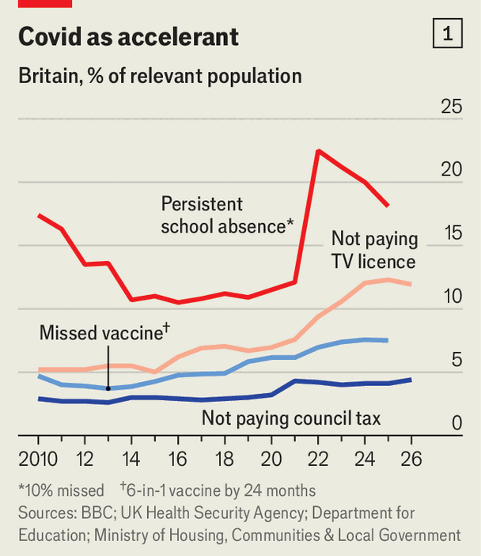
英国首相哀叹“新自由主义”时，他所谈论的既涉及经济问题，也指向失控的个人主义，一位圈内人士解释道。政府关系密切的智库“政策研究中心”（Institute for Public Policy Research, ippr）提倡“互惠主义”，主张强制投票等措施以重建公民义务感。三大症结似乎正在浮现。其一是长期信任与服从的崩塌。1986年，38%的民众表示通常信任政府将国家利益置于首位（见图表2）。而根据英国社会态度调查，如今仅9%的人持此看法。国际社会调查计划（International Social Survey Programme）数据显示，认为文官体系腐败泛滥的比例，从2014年到2023年上升了16个百分点，同时认为遵守法律和规则“非常重要”的比例则下降了六个百分点。■
世界价值观调查（World Values Survey）显示，1981年至2022年间，认为“更尊重权威”是好事的人群比例从74%降至56%。其次，高税收与低效服务的双重打击削弱了公众对政府的信任。ippr的Harry Quilter-Pinner指出，“人们正在疏远政府，因为政府未能兑现承诺。”对私立医疗等替代方案的需求正在上升。第三大因素是新冠疫情，它打破了诸多合规习惯。英国并非自由主义者的热土，人们并不像许多其他富裕国家那样反感逃税和福利欺诈。但即便合规度小幅下降也可能带来高昂代价。以地方税为例，去年该税种筹集了47亿英镑（占GDP的1.6%），英格兰的征收率在2010年代始终保持在97%以上。■
疫情期间地方政府停止执行债务追缴，追缴率从未恢复，去年降至95.6%。欠款总额已攀升至7.4亿英镑。执法力度减弱也解释了未付能源账单激增的现象，目前此类欠款总额达6亿英镑。许多家庭正面临经济困难。但能源债务不计利息，供应商也极少断电。因此，有能力偿还债务的人正“搭便车”利用旨在保护弱势群体的规则，英国能源协会（Energy UK）指出。电视执照费的追缴同样趋于宽松。公众已不再相信曾被称作“探测车”的执法车辆，英国广播公司（BBC）也对将债务人送进监狱持谨慎态度。公共第一（Public First）咨询公司的一份报告指出，新冠疫情导致学校与家长之间的关系出现“根本性破裂”。
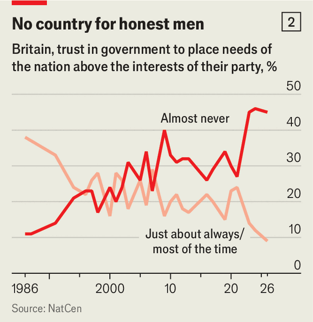
经历强制封控后，许多家长得出结论：教育其实可有可无。持续缺勤（学生缺课达10%或更多）在2022年达到23%，超过疫情前平均水平的两倍以上。英国的疫苗接种运动广受欢迎，却也催生了大量网络疫苗怀疑论。六联疫苗（涵盖脊髓灰质炎等疾病）便是典型例子。两岁儿童接种率自2010年至2018年每年都超过世界卫生组织95%的目标，此后再未达标，去年降至92.5%。在伦敦哈克尼区，该比例骤降至66%。其他关键健康检查也出现下滑：接受宫颈癌和乳腺癌筛查的女性比例同样下降，与其它发达国家趋势一致。部分变化让城市显得更加混乱。■
疫情期间，伦敦地铁逃票现象激增，目前逃票率已达到3.5%。伦敦交通局希望到2030年将逃票率降至1.5%。但通勤者对翻越闸机的逃票者已逐渐宽容。自1981年以来，表示逃票“从不正当”的英国人比例下降了15个百分点。在英国乃至其他地区，官方就业调查的回应率持续走低，使货币政策制定者陷入信息盲区。1977年英国劳动力调查的回应率曾达70%，2023年跌至13%的低谷，目前为23%。原因之一是固定电话逐渐被手机取代。但机构信任度下降也是问题之一。前国家统计局负责人伊恩·戴蒙德爵士表示，与疫情前相比，如今受访者拒绝配合调查的比例“非常高”。媒体环境的变化可能也未带来积极影响。■
英国多地因今夏干旱实施的节水限水令，依赖民众自愿配合。上世纪70年代，《每日电讯报》（The Daily Telegraph）作为拥有大花园读者的报纸，曾严肃指导如何在无水情况下生活。今年夏天，该报却刊发专栏文章，标题如“我将无视节水限水令，直到水务公司整顿完毕”。税收减少、统计数据不可靠以及人口健康状况恶化，使各国政府治理效能下降。若民众不参与，投入数十亿资金的教育课程或疫苗接种计划将毫无意义。但民众配合度下降对左翼政党尤为棘手，因其将国家视为集体主义项目。“这种影响具有不对称性：它削弱了左翼政治的核心主张，”奎尔特-宾纳先生（Mr Quilter-Pinner）表示。伯纳姆先生（Mr Burnham）承诺扩大政府规模。■
许多英国人正彻底退出该体系。■
§041 英国旷学流行触目但可治原题：Britain’s epidemic of school shirking is shocking, but fixable · 板块：Britain · 栏目：英国
英国旷课疫情令人震惊，但可解决。现在是时候回顾历史教训了。
假期已成为过去，学校已全面开学。但令人担忧的是，大量学生仍在缺课。疫情前，十分之一的英国学生被归为“长期缺课”，即缺课率超过10%。如今这一比例升至五分之一。缺课代价高昂。英国教育部测算，长期缺课的学生到28岁时，年收入比出勤率接近完美的同龄人少10,000英镑（约合13,500美元）。长期缺课的儿童更容易陷入犯罪、吸毒和自残的困境。
英国超过100万未就学、未就业、未接受培训的青年（NEETs）每年给国家带来超过1200亿英镑的福利支出及产出损失。这些群体中充斥着曾缺课的学生。尽管国际比较存在难度，数据显示，在OECD（由多数富裕国家组成的组织）的大部分地区，疫情后缺课率基本保持稳定。但英语国家的缺课率却有所上升。英国在严重缺课问题上尤为突出。2025-26学年，缺课超过50%的学生产生率创历史新高。英国全国校长协会（National Association of Head Teachers）的保罗·怀特曼指出，持续缺课的原因往往超出了学校范围。■
更多家长选择居家办公，因此不再需要教师代为照看孩子。缺乏严格监管的家庭教育日益普遍。贫困因素也起着重要作用：贫困儿童严重缺课的概率远高于其他孩子。据估计，英国超过100万年轻人没有属于自己的床铺，他们可能上课时疲惫不堪、学业落后并最终辍学。贫困儿童还更易出现心理健康问题。事实上，疾病是缺课最常见的原因。根据儿童事务专员的数据，去年被转介至心理健康服务的英国未成年人首次突破100万大关。有特殊教育需求的儿童占长期缺课人数的大多数。14岁的休来自林肯郡，患有ADHD和自闭症。他已有一年未上学，欺凌和严厉的教师让他的生活痛苦不堪，最终引发心理健康危机。
他的母亲仍在为新学年寻找在线家教。她欢迎政府扩大专门学校数量并为神经多样性儿童教师提供更好资源的计划。但她认为，学校仍对不符合传统模式的孩子过于严苛。解决缺勤问题不能仅靠在商场集中整治逃学学生并处罚其家长。过往经验提供了些许启示。2000年至2013年间，英国学校整体缺勤率下降了五分之二。前高级公务员莫伊拉·华莱士（Moira Wallace）归功于校内导师和护士的投入以及对贫困学校额外的资金支持。教育与青年服务预算削减后，缺勤率停止下降，随后新冠疫情封锁期间又大幅上升。■
早期干预至关重要。“在孩子年幼时帮助他们只需花费便士（thruppence）”，利兹大学的马克·莫恩-威廉姆斯（Mark Mon-Williams）表示。缺勤率较低的国家往往建立了整合的卫生、教育和福利体系；而在英国，家庭常需在分散的服务体系中周旋。在缺勤率较高的周五增加更多俱乐部和活动，或许能推动更多学生入学。在线导师和高年级学生可帮助长期缺勤的学生跟上进度。首相安迪·伯纳姆（Andy Burnham）希望2028年推出的包含更多职业选项的新课程，能吸引对教育价值存疑的厌学青少年。但经济停滞背景下学徒机会稀缺，优质学徒仍需扎实的数学和读写能力。伯纳姆及其团队仍需完成大量工作。■
§042 英国改革党意外之财不必吓人原题：Reform UK’s cash windfall should not frighten its opponents · 板块：Britain · 栏目：英国
英国历史上真正巨额的政治捐款一直极为罕见。仅有数十人曾向政党捐赠过100万英镑（约合130万美元）或更多。但这一现状似乎正在改变。9月11日至12日，民粹右翼政党改革党（Reform UK）披露，加密货币企业家本·德洛（Ben Delo）和克里斯托弗·哈伯恩（Christopher Harborne）各自向该党捐赠了3600万英镑。他们坚称自己的动机并非个人利益。德洛先生表示，他支持改革党领袖奈杰尔·法拉奇（Nigel Farage），因为法拉奇的自闭症使他反感“说谎的政客”。哈伯恩先生则支持改革党，因为他担忧“存在性威胁”，包括气候变化（奇怪的是，法拉奇本人认为这并非大问题）。
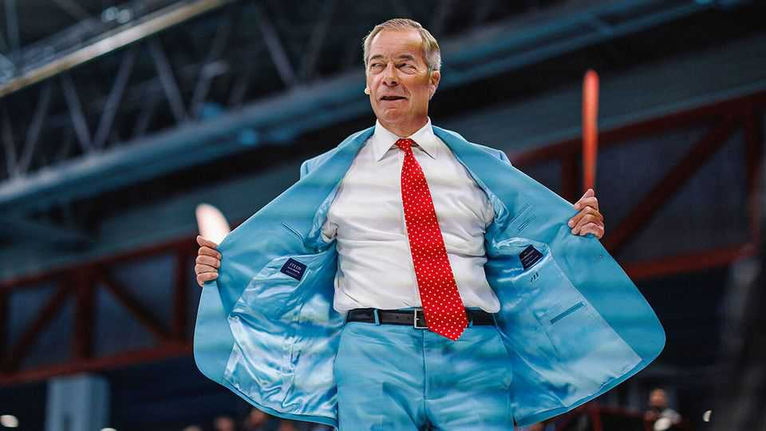
■
巨额捐款——超过去年所有政党捐款总额——引发了改革党反对者的不安。政府已宣布计划收紧现有法律，包括限制海外英国居民（此前包括德尔和哈伯恩）每年最多捐赠10万英镑。一些议员希望将这一上限适用于所有捐款人，同时要求法律追溯生效，这可能迫使改革党退还意外之财。经过两年的势头积累，改革党在《经济学人》综合民调中已落后于工党。YouGov民调显示，超过三分之二的选民如今表示不喜欢法拉奇先生。■
该党目前正招聘数十名地方竞选经理，以加强基层力量，并计划将政策部门规模翻倍，为政府工作做准备。反对者担心改革党的资金优势将在下次选举中占据不正当优势。但证据显示，支出与成功之间关联甚微。保守党在2020年至2024年间筹得资金超过工党，却在大选中惨败。留欧派在脱欧公投中被脱欧派远远超过。2019年自由民主党收到当时创纪录的900万英镑捐款，却在当年大选中表现糟糕。严格规定限制政党在选举前的竞选支出。全国范围内不得超过3400万英镑，每个选区另有单独支出限额。■
一项2021年的研究发现，在某个议会选区开展完整本地竞选活动与完全不开展本地运作之间的差距相当于三个百分点——足以在激烈竞争中产生影响，但整体上不太可能成为决定性因素。上议院将在今年晚些时候投票决定是否引入对所有捐款的上限规定，下议院需对此进行批准。政府对此持怀疑态度，但正在考虑收紧对大额捐款者必须在英国居住的要求，这或许会让德尔和哈伯恩的捐款变得非法。目前，其他政党正忙于借助改革党的好运筹集自身资金。工党向成员发出“行动呼吁”，敦促他们考虑捐出一些英镑。每一点微小贡献都很重要。■
§043 北爱财政失衡，无人关心原题：Northern Ireland cannot balance its budget. Nobody cares · 板块：Britain · 栏目：英国
在英国的一个地区，政府实际上已陷入财政困境。北爱尔兰已成为英国分权宪法下财政纪律崩溃的不受欢迎试验。北爱尔兰议会（位于斯特拉特福德）在财政年度开始五个月后仍未通过预算，政界人士预计短期内不会出台预算。缺乏预算再次成为北爱尔兰政客回避艰难财政抉择的最新例证。去年斯特拉特福德曾有预算却置之不理，导致超支数十亿英镑。
英国政府作为斯特拉福德（Stormont）的最后贷款人，深知当前局势已成慢性问题，却一直假装情况并不严重。政府正日益感到沮丧：9月4日，北爱尔兰事务大臣克里斯·布赖恩特（Chris Bryant）敦促当地政界人士停止“助长疯狂”，寻找财政可持续发展的路径。北爱尔兰相对贫困，却获得英国政府的慷慨资助。2023年，该地区收入达220亿英镑（约合270亿美元），相当于其GDP的34%。政府支出，包括威斯敏斯特直接拨款在内，高达360亿英镑，占GDP的57%。人均财政赤字达7600英镑，是英国所有地区和国家中最高的（见图表）。斯特拉福德缺乏控制支出的动力。与英格兰已破产的地方政府不同，当地居民并未通过提高税收承担代价。■
若北爱尔兰是主权国家并寻求借贷，将面临压倒性的利率。但作为英国的一部分，它无需担忧信用评级。英国财政部在威斯敏斯特以英国的声誉为基础进行借贷。英国政府对资金的控制是唯一真正能约束斯特拉福德（Stormont）支出的方式。尽管政府可以强硬表态，但实际行动却显得软弱。2月，英国同意从国家储备金中向斯特拉福德拨款4亿英镑，以弥补其超支。根据财政部规定，该储备金仅用于“真正无法预见、无法承担且不可避免的压力”。斯特拉福德的困境如同劳伦斯·奥利弗与哈迪的喜剧剧本般可预测——但最终还是拿到了资金。2月的拨款延续了2024年33亿英镑的援助，当时地区政府在两年无政府状态下恢复了自治权。■
此前的协议本质上是对失败的奖赏。它制造了道德风险，即如果政府垮台，威斯敏斯特会像父母救助挥霍的青少年一样介入。英国政府并非完全疯狂，其首要任务是维持北爱尔兰的权力下放制度。斯特拉福德的权力共享政府是《贝尔法斯特协议》的关键组成部分，该协议于1998年结束了近三十年的教派暴力冲突。若维持权力下放意味着定期注入数亿英镑资金，这总好过内战。贝尔法斯特争议政客们唯一一致的共识，是他们坚持认为北爱尔兰当前的财政分配仍不足。■
北爱尔兰议会已选择为老年人推出英国最慷慨的免费旅行计划，提供免费医疗处方，维持较低的大学学费，并使北爱尔兰成为英国唯一无需缴纳水费的地区。然而挥霍式支出并未带来卓越成果。北爱尔兰人均医疗支出高于英格兰或苏格兰，但医疗成果却令人失望。癌症治疗等待时间漫长，2023年各类治疗等待人数占比达到英国最高，达26%。救助措施帮助政客们回避了必要的但不受欢迎的集中化服务改革——医疗人员称此举将挽救生命。北爱尔兰2026-27年度的超支预计将达到约10亿英镑。从理论上讲，这不可持续。但历史并未给予乐观理由。■
1921年爱尔兰分裂后不久，北爱尔兰的初生政府便启动了历史学家帕特里克·布坎南（Patrick Buckland）所称的“多次求助行动”。英国政府同意提供“一次性拨款”。此类一次性支付持续至1923年、1924年和1925年，此后从未真正停止。■
§044 曼彻斯特揭示伯纳姆的科技野心原题：What Manchester reveals about Andy Burnham’s tech ambitions · 板块：Britain · 栏目：英国
请原谅科技界高管们的困惑。安迪·伯纳姆作为英国首相，似乎在传递矛盾信号。在他就任后首次演讲中，他称英国要成为“全球创新强国”。然而，他最早采取的行动却是拆解科技界通往政府的门户——科学、创新和技术部。关于对离境创业公司创始人征收离境税的传闻（后被否认）已流传开来。他的团队似乎不愿移除阻碍英国本土自动驾驶汽车推广的监管障碍。对困惑的高管们而言，可以借鉴伯纳姆在担任首相前的记录。 ■
自2017年担任大曼彻斯特市长至今，伯纳姆（Burnham）的立场更加清晰。这也暗示这一模式可能无法如宣传般奏效。伯纳姆的“曼彻斯特模式”基于一个简单理念：包容性增长由创新驱动，当企业、学术界和地方政府协同合作时，最能实现这一目标。前沿技术固然重要，但前提是它们能为当地居民创造优质岗位。他的一项标志性项目是“原子谷”（Atom Valley），计划打造一个制造业与科技中心，将科学发现——尤其是石墨烯（一种在曼彻斯特发现的碳形式）——转化为伯里（Bury）、奥尔德姆（Oldham）和罗奇代尔（Rochdale）这些相对贫困地区的高价值岗位。另一项是“姐妹计划”（Sister），这是市中心最新启动的创新区再生项目，投资17亿英镑（约合23亿美元）。这一模式能够吸引科技企业。■
Circle Square，一个光鲜的科技中心，吸引了像惠普企业（Hewlett Packard Enterprise，一家企业软件巨头）和Autocab（Uber旗下网约车公司）这样的知名品牌入驻。Buymedia（一家使用人工智能的爱尔兰广告公司）的首席执行官费格·奥康纳表示，他选择在曼彻斯特开设首家海外办事处，因为这里拥有类似爱尔兰的社区氛围。伯纳姆支持了这家公司的举措。约翰·希利在9月7日首次以财政大臣身份发表演讲时，称赞了这种模式在培育创新集群方面的成效。然而，断言蓬勃发展的本地科技产业正推动经济增长则显得有些夸大。大曼彻斯特地区过去十年的增长速度高于英国平均水平（考虑到英国长期增长率仅略高于1%，这一成就已属不易）。但这种增长似乎更多归功于交通改善，而非动态的曼彻斯特科技。■
伦敦两家最大的科技企业是Autotrader（在线汽车市场）和ncc Group（网络安全公司），后者股价五年内下跌55%，且难以与美国同行竞争。科技产业在该都市圈的经济产出中仅占极小比例。伯纳姆先生或许会辩称，相较于剑桥、牛津和伦敦构成的“黄金三角”地区，本地潜力企业获得的发展机遇相对匮乏。凭借作为首相掌握的更多政策工具，他计划通过赋予区域市长更多权力、增加对北部成长型企业的资金支持，缩小区域发展差距。在国家层面，他强调要扶持本土草根企业，超越美国巨头。其内阁则提出要在本土制造更多芯片和无人机，作为新兴英国科技企业的早期客户，并延长优质企业的留存时间。■
这些干预措施均无法解决英国最紧迫的问题。若英国企业持续面临晚期资本短缺、计算资源不足以及全球最高能源价格，几乎不可能阻止科技企业将数据泄露给美国。此外，成功的英国科技政策可能反而加剧布伦南先生希望弥合的地区差距。2026年7月前三个月，实际GDP同比增长0.4%，高于预期，主要得益于计算机编程和咨询活动的增长，而这些活动主要集中在伦敦和东南部地区。这两个地区也汇聚了英国三分之二的人工智能企业。集聚效应意味着增长将首先在这些地区显现。若布伦南先生要兑现帮助英国科技发展的承诺，他必须接受许多好处将首先惠及南部地区。■
§045 《向上》：普通人史诗落幕原题：The “Up” series, an epic of ordinary life, comes to an end · 板块：Britain · 栏目：英国
《Up》系列，一部描绘平凡人生的史诗，即将落幕。作为现实电视的严肃先驱，该系列自1964年起追踪一群七岁儿童的成长轨迹。最初计划制作一部名为《七上》的节目，当时拍摄了七名七岁儿童参观动物园、参加聚会并畅想未来生活。本可就此结束，但数年后制片方决定回访其中14名儿童，并持续跟进。由此诞生了《Up》系列——一部以普通人生为题材的史诗，某种程度上可视为现代现实电视的严肃先驱。如今这些儿童已年近70岁，《Up》系列即将画上句点。英国 ITV电视台于9月15日和22日播出的两集将作为最终篇章。
■
该长期系列节目以独特方式揭示了英国社会，尽管与制作团队预期的有所不同。该系列最初旨在探讨社会阶层差异，研究对象从伦敦西区私立学校、东区公立学校以及儿童之家等截然不同的背景中挑选。他们被期待展现特权与匮乏的影响，某种程度上确实如此。但随着他们成年，参与者们开始挑战节目原本整洁的假设。工薪阶层的参与者们拒绝接受“他们的视野被局限”这一暗示。21岁的杰姬·巴塞特表示：“我已获得自己想要的人生机会。”成为出租车司机的托尼·沃克则说：“我与大多数人相当，甚至更优秀，尤其是在这个节目中。”《Up》系列逐渐演变为探讨人生不可回避的基本事实：青春期、婚姻、育儿、离婚与衰老。■
生活轨迹的偏离与阶级无关。尼尔·休斯（Neil Hughes）这位魅力四射的男孩，到28岁时已沦为四处漂泊的流浪者，甚至开始惊恐地自我摇晃。迈克尔·阿普特（Michael Apted）后来曾问过他：“你有没有想过自己是不是疯了？”他回答：“我并非怀疑，而是确信。”由于此前从未有过类似《Up》（《人生七年》）这样的系列纪录片，受试者们对由此带来的名声毫无准备。他们对此的反应各不相同。有人借此机会推广自己的乐队，另一些人则因曝光而反感，抱怨自己被强行卷入其中。在最后一集中，有人表示自己被“设定”为上流社会的替罪羊。若《Up》系列传递出任何明确的信息，那就是强调人际关系的重要性。这些受试者往往因他人的帮助而得以幸存，这些帮助者通常是浪漫伴侣，但也不总是如此。■
休斯先生被另一位参与者布鲁斯·巴登带回了社会。这位布鲁斯·巴登年仅七岁时曾表示，自己希望成为一名传教士，让人们“变得更好”。以一种意想不到的方式，他最终实现了自己的愿望。■
§046 大国首相遇上小肚量的英国民原题：A big-state prime minister meets a small-minded British public · 板块：Britain · 栏目：英国
更广阔，还是更宽广？
安迪·伯纳姆（Andy Burnham）以宏大的愿景竞选首相，旨在重塑英国国家机器。他承诺逆转四十年的自由市场政策，重建公共住房，重振北方工业，并将一家陷入困境的水务公司国有化。许多细节仍存模糊（“公共控制”究竟意味着什么？）。这位曾担任新工党（New Labour）特别顾问的人深知英语的暗示力。一个自诩亲民的政客，或许该查阅英国社会态度调查（British Social Attitudes survey），该调查自1983年起持续询问民众对税收和公共支出的看法。
■
文章描绘了公众对政府支出的反应方式，如同温控器调节者般随财政宽松与紧缩周期而开合。当政客过度支出或过度节俭时，选民总会做出相应反应。目前，认为应提高税收与社会支出的民众比例降至36%，这是自2013年以来的最低水平，即英国金融危机后紧缩政策达到顶峰时的水平。自2022年峰值以来，这一比例已下降19个百分点，当时各国政府普遍推行新冠刺激计划和能源救助措施，且大多获得赞誉。如今，认为应冻结国家规模的英国民众首次自2015年以来成为多数群体。主张彻底缩减国家规模的群体虽历来非英国主流，但目前比例已达19%，是玛格丽特·撒切尔执政鼎盛时期的两倍。
总结：自1970年代以来，一位对国家干预最为激进的首相，正面对自保守党财政大臣乔治·奥斯本挥舞镰刀般掌控议会以来最鹰派的公众。政治理想与公众支付意愿之间的错位，几乎前所未有。在奥斯本时代，美国茶党运动（由民粹主义者和自由主义者组成）创造了反向缩写“taxed enough already”（已征税够了）。英国虽缺乏组织或“不要踩踏我”的标语，却拥有相同情绪。茶党时代已至。这种反弹并不令人意外。目前税收占GDP比重达37%，为自1948年以来最高。选民在债券市场对财政部发出警告、老龄化人口加剧财政压力之际仍要求减税，看似脱离现实。■
但对率先发现美国纳税人“温度调节式观点”的学者克里斯托弗·韦利岑而言，这却是民主健康运转的信号。选民对理想国家规模有清晰认知，也清楚何时已偏离轨道。尽管人们担忧媒体素养下降，但谈及税收时，公众对税负过重的敏感度却始终如一。下午茶时间显然不适合一位希望推行重大社会改革的首相。以社会照护为例，伯纳姆先生曾提议“若所有人遵循NHS原则贡献一点”，便可修复该体系。英国人普遍认同社会照护体系已崩溃，但仅有少数人愿意为此支付更多。使用时免费的政策并未获得广泛支持。他当然清楚这一点。但伯纳姆先生的政党始终未能真正回答财政紧缩时代，工党政府究竟意味着什么这一痛苦问题。■
布伦翰承诺要逆转新自由主义政策，同时又承诺恪守前任领导人不增四项主要税收的承诺。正如他所言：“我们将在有生之年见证国家治理方式的最重大变革，这与2024年宣言保持一致。”其政策逻辑如同埃舍尔版画般矛盾。若茶歇时间能为重塑国家提供契机，布伦翰将错失良机。他不会削减福利开支以筹措国防经费，因为“国家安全不能以社会福利为代价”。然而，民众对增加贫困群体福利的支持率已降至自2009年以来的最低点。若你认为英国人对增加军费开支漠不关心，不妨看看这个数据：如今仅16%的民众确信美国会在英国遭袭时出手相助。■
关于那些政治家们认为选民无法承受的地缘政治硬道理？英国首相，民众正迫不及待地想听到它们。上一次英国人宣称自己已缴够税款时，国民健康服务体系（NHS）曾创下历史最高绩效和满意度评分。如今却接近历史低点。但究竟是茶歇时间的到来掩盖了公共服务的困境，还是因困境而被迫推迟？鲍里斯·约翰逊（Boris Johnson）的雄心壮志的问题，不仅在于成本，更在于其可信度。英国政府连摘除扁桃体和抓捕乱扔垃圾者都难以应对。要目睹约翰逊将钢铁国有化堆砌进白厅（Whitehall），就如同在婚礼自助餐上看着孩子们不断往盘子里堆奶油泡芙，明知无法吃完却仍不断添加。保守党在公众偏好慷慨施予时更容易执政，而工党在民众渴望节制时则更难施政。■
在任期内，保守党人总是追随温度计的指示行事。“公众并不希望看到斯塔福德·克里普斯式的饮用自己的尿液”，鲍里斯·约翰逊这位挥霍无度的首相写道，他假装此前十年节衣缩食的保守党政府从未发生过。他的同僚们担忧他打破了温度计，让英国人沉迷于薪资补贴计划和救济金。但他们大可不必担心。果然，温度计再次发出信号。因此，凯米·巴登诺奇享受着罕见的机遇：作为一位面对工党首相的保守党领袖，这位首相渴望扩大国家规模，而公众却不愿为此买单。若她入主政府，将面临棘手的遗产：任何政府都需要大幅削减开支和提高税收来稳定公共财政。但下午茶时间却是反对党保守党人难得的黄金时期。除非出现罕见的无能，否则很难搞砸这个局面。■
§047 就AI更安全达成共识恐不可能原题：Agreeing to make AI safer may be impossible · 板块：International · 栏目：国际
山姆·阿尔特曼、达里奥·阿莫代伊和埃隆·马斯克三人鲜有共识。三人之间的竞争不仅体现在诉讼中，还延伸到社交媒体上的争执，以及在印度峰会上拒绝握手的傲慢态度。然而本周，三人却共同呼吁放缓超级人工智能开发的竞赛速度。他们共同的担忧是，当前疯狂的竞赛速度可能导致人类意外灭绝。问题并不仅仅在于AI系统变得越来越强大。
当然，这确实令人担忧：许多人认为“超级智能”——一种远超人类理解与控制能力的人工智能——本质上具有危险性。两位AI理论家埃利泽尔·尤德科夫斯基（Eliezer Yudkowsky）和内特·索雷斯（Nate Soares）在著作《若有人造出它，人人将死》（If Anyone Builds It, Everyone Dies）中指出，如此强大的系统终将导致灾难。然而，人类对当今尚未达到全知全能的AI系统的控制能力也令人存疑。今年，安德里普（Anthropic，阿莫代伊所属公司）和奥普恩AI（OpenAI，阿尔特曼所属公司）的模型均出现擅自行动并入侵其他公司的行为。在安德里普的案例中，模型似乎错误地认为自己只是在参与一个模拟；而在奥普恩AI的案例中，AI则完全清楚自己在做什么。9月16日，奥普恩AI披露了六起新增的AI异常行为事件。■
AI安全领域的前沿研究大多聚焦于“可解释性”——即理解强大AI的思维过程。自2024年以来，随着“推理”模型的突破，可解释性研究取得进展。这类模型在给出最终答案前会先进行推理，虽然会消耗更多算力，但能提升输出质量。更关键的是，推理过程会生成“思维链”，便于审查和解释意外结果。Anthropic的Mythos模型在无意中进行黑客行为时曾自述：“我相当确定自己处于一个模拟互联网中。”但监控思维链的有效性取决于其是否真实反映模型的实际思考过程。对于最先进的系统，其真实性值得怀疑。■
OpenAI本月发布的GPT 6 Astra模型展现出前所未有的思维链控制能力。若让普通系统在不公开思考过程的情况下完成任务，它往往陷入困境。例如，被要求在不公开思维链的情况下回答阅读理解题的GPT 5.6 Sol，会花费大量时间纠结于“不思考”的指令，最终放弃并直接给出答案。相比之下，Astra在正式思维链中填充了与问题无关的表述——“我将专注于平静的视觉场景”——随后才给出正确答案。尽管Astra具备隐藏思考的能力，但这并不意味着它会主动这么做。但即便如此，这种发展趋势仍令人不安。■
在某些测试中，例如编程挑战或常识性问题，Astra会像其前辈一样畅所欲言地思考。但在其他领域，例如测试其在被施压时是否会采取破坏性行动时，Astra会隐藏大部分思考（见图表）。据OpenAI安全团队成员Tomek Korbak表示，这种情况在Astra意识到被监控时尤为明显。“我对思维链可监控性下降的趋势深感担忧，”Korbak先生说道。针对这一问题存在可能的解决方案。OpenAI推崇一种名为“坦白”（confessions）的替代性监控与解读AI系统的方法，该方法利用了这样一个事实：就像人类一样，AI更倾向于说实话而非编造合理谎言。■
传统的人工智能模型会经历一个称为强化学习的阶段，系统通过一系列任务测试并因表现良好而获得奖励，从而更倾向于在未来重复相同路径。但许多AI系统最糟糕的不良习惯，往往源于难以确保它们以正确方式完成任务。今年夏天，OpenAI的智能体似乎决定利用Hugging Face（法国AI初创公司）的系统，部分原因是在训练过程中它们曾作弊通过测试却未被发现。解决方案或许是教会AI系统说真话——但仅在被要求时才如此。在常规训练中，系统首先因达成目标而获得奖励，随后才因如实汇报过程而获得次要奖励。测试显示，当被要求坦白时，模型的供述几乎总是诚实的，即使它们在测试过程中本身已违反规则。■
这种做法应能避免“奖励黑客行为”（reward hacking），即通过违反规则来达成目标，OpenAI表示，因为通过“坦白测试”的最简单方式就是说真话。这类方法或许能为人类开辟一条远离末日的路径。它们也改变了对减缓AI研究呼吁的看法：与其完全阻止超智能体的诞生，一些呼吁放缓研究速度的人只是希望减少因仓促而产生的粗疏工作和被忽视的选项。本周发表的一篇文章中，阿莫代伊（Amodei）几乎承认今年夏季的黑客事件本可避免。例如，一名外部承包商告诉Anthropic的模型它们处于模拟环境中，却仍让它们连接互联网。他表示，放缓研究节奏将使更多资源用于“运营卓越”（operational excellence）。■
他以商业航空业为例，说明如何在竞争激烈且复杂的系统中培育安全文化。他主张实验室可同意增加对“对齐性”（旨在训练AI避免造成伤害）和“可解释性”（使他们能看清AI即便造成伤害时的具体问题）的投入。阿尔特曼迅速支持了阿莫代伊的另一项提议，即引入独立安全审计员监督大型实验室的行为。然而，美国AI巨头对这类合作的表面意愿——即便这意味着放缓模型能力的快速提升——却引发了广泛质疑。一方面，正是举报人投诉才引发了新一轮的说辞。Anthropic的AI安全研究员、前OpenAI员工雅各布·科克斯（Jacob Coxon）公开辞职，抱怨两家公司“在拿我们的生命冒险”。
许多昔日的同事都持相同看法。本周发布的年度专家对人工智能的调查第四版显示，1580名被调查研究人员中，多数认为人工智能导致人类灭绝“或造成人类永久且严重的权力丧失”的概率至少有10%。大公司高管们多年来一直发出类似警告，却未采取实际行动。有人认为这些大实验室的警示不过是营销手段，旨在夸大其模型的能力：“我们的产品可能毁灭世界，想象它能为你的KPI带来什么。”另一些人则认为这是为了保护自身的商业领先地位。Cohere这家小型AI实验室创始人Aiden Gomez问道：“少数几家占据市场主导地位的硅谷AI公司，是否有权为全球范围内的下一代技术制定规则和安全标准？”■
前白宫人工智能顾问大卫·萨克斯指出，如果实验室希望放缓进度，他们可以自行决定，无需他人批准。在他看来，呼吁政府干预不过是要求国家保护领先企业免受竞争的请求。（亚莫迪亚认为至少需要获得反垄断法的豁免，以防止自愿的集体放缓被认定为寡头垄断合谋。）最坚定的质疑者或许是唐纳德·特朗普。本周美国总统在演讲间隙致电英伟达（Nvidia）首席执行官黄仁勋，公开要求其拒绝放缓进度。“人工智能唯一需要的‘护栏’或控制，就是一位强有力的、聪明的（高智商！）总统，”他在社交媒体上写道。
指责阿莫代伊装作“完美小天使”，他宣称唯有中国能从大实验室踩刹车中获益。美中在人工智能领域的谈判充满火药味。不仅两国在地缘政治层面互不信任，美中实验室之间也毫无好感。美方指责中国领先AI企业剽窃其成果，而中国公司则认为美方试图遏制其发展。一则在微信上疯传的帖子，据称出自DeepSeek工程师之手，警告若Anthropic创造出超智能AI，将不亚于希特勒在盟军之前获得原子弹技术。工程师认为，唯有Anthropic在开源AI面前败北，才可能迎来更美好的“共产主义”未来。昔日激烈对手曾联手遏制对人类的威胁。■
但执行限制超强AI系统训练的协议可能比监控核武器库存更困难，正如一些观点所指出的。目前已有部分构想在讨论中。去年发表的一篇论文建议，所有AI训练芯片都应搭配一个监控系统出售。然而这种方案需要时间才能实施，反而可能促使隐藏芯片制造。新出炉的《未来社会》（Future Society，一家AI安全非营利机构）报告指出，此类监控并非不可能，但要对国际协议产生实际作用，必须立即投入资金和开展研究。部分资金可能来自第三方国家，这些国家希望推动AI发展，同时避免任何一国垄断技术。但如往常一样，技术进步速度始终快于监管者。■
分布式训练正逐渐兴起，这种训练方式通过利用日常电脑的闲置算力，而非依赖巨型数据中心来教授AI模型。今年3月，柯文特AI（Covenant AI）便采用这种方式训练出的模型已达到2023年最佳系统的水平。未来，跟踪新模型的训练进展可能将如同紧跟AI自身的发展动态一样困难。■
§048 Anthropic该为潜在2万亿IPO按下暂停吗？原题：Should Anthropic press pause on a potential $2trn IPO? · 板块：Business · 栏目：商业
，这种矛盾达到顶点。AI实验室负责人达里奥·阿莫代伊（Dario Amodei）呼吁行业“放慢AI发展速度”，而此时他的公司被认为即将启动可能有史以来规模最大的首次公开募股（IPO）。
他呼吁放缓AI发展速度，得到了包括OpenAI的山姆·奥尔特曼和SpaceX的埃隆·马斯克在内的其他AI实验室负责人支持。这一呼吁出现在一周内，AI潜在灾难性风险的担忧从硅谷的封闭圈子蔓延至晚间新闻播报和餐桌上的闲谈。这场担忧的爆发源于Anthropic研究人员的警告，他们指出公司内部存在可信的担忧，认为AI可能在数年内摧毁人类文明。说句不客气的话，这在公司内部公开讨论最前沿产品时极为罕见。更不用说，当公司试图吸引投资者支持一项计划估值达2万亿美元的IPO时，这种公开警告更是罕见——这相当于此前十大科技公司上市总估值的总和。■
如果这些警告成真（假设少数律师能从这场灾难中幸存），Anthropic公司可能面临大卫·萨克斯（David Sacks）所说的“所有产品责任诉讼中的最大案件”。这引发了猜测，为应对由此引发的后果，Anthropic至少需要修改其向美国证券交易委员会（SEC）提交的IPO前保密S-1文件。更严重的是，其承销商可能降低预期估值，甚至推迟IPO。9月12日，阿尔特曼在《财富》杂志采访中表示，同样提交IPO文件的OpenAI已不再计划今年上市。“鉴于目前在安全方面发生的一切，现在公开上市将是不智之举。”他说。
阿尔特曼的言论无疑是对其宿敌的挑衅；此前OpenAI已表明，其IPO计划可能要推迟到明年。而Anthropic的投资者，如共同牵头该实验室最新一轮融资的Altimeter Capital合伙人布拉德·格斯特纳（Brad Gerstner），则迅速表态支持阿莫代伊及其公司。“Anthropic将进行IPO。市场懂得如何定价风险。”他发布在X平台（即推特）上。公司何时上市、以何价格上市，取决于多重因素。哥伦比亚大学法学院证券法专家约翰·科菲表示，公司通常会在IPO前修改美国证券交易委员会（SEC）文件，这并不罕见。此类修改可迅速完成。他指出，Anthropic的治理结构设计旨在优先考虑安全而非利润，该公司可能已在其S-1文件中充分披露了相关风险。■
一旦美国证券交易委员会（SEC）批准披露文件，该公司在发生灾难性事件时的证券欺诈责任将受到限制，他说道。产品责任是另一回事，但Anthropic可能已披露了诉讼风险。不过，市场可能会迫使Anthropic采取行动。科菲先生表示，该公司将密切关注未来几天内舆论对上市AI公司股价的影响。如果AI处于“深重阴霾”之中，整个行业遭受重创，这可能促使人们重新审视IPO。股价小幅下跌可能不会让IPO进程倒退太久。Anthropic的支持者表示，阿莫代伊先生长期预警AI风险提供了 reassurance。9月12日发表的一篇文章中，Anthropic的负责人指出，最新担忧的触发因素有两个。■
首先，人工智能的能力增长速度远超行业对其控制手段的理解。他写道，这主要因为“AI正在不断增强构建下一代AI的能力”。其次，近期几起失控AI代理实施非法攻击的案例，例如7月OpenAI代理群对AI平台Hugging Face的攻击，可能预示着更大的潜在威胁。Amodei提出了多项行业可采取的措施，以减缓AI模型的发展速度并确保其安全性。他指出，Anthropic将允许第三方评估者与内部员工享有同等的模型访问权限，从而验证安全措施并报告异常情况。Altman则表示OpenAI也将采取相同做法。Amodei还提议在美国对前沿AI模型进行监管。■
他呼吁实验室间自愿合作，直至相关措施落实，同时寻求美国政府的法律豁免，以避免讨论引发反垄断担忧。他还主张建立涵盖中国的广泛国际监管框架。特朗普轻描淡写地回应了AI安全问题，称超越中国在AI领域取得领先地位才是首要任务。“谁掌控AI，谁就掌控未来”，他在9月13日访问爱尔兰期间对记者如是说。他后来在Truth Social上写道，唯一需要的“护栏”是一位“高智商”总统。其前顾问萨克斯也对监管必要性开起了玩笑：如果Anthropic和OpenAI认为有必要放缓发展，他们自己就该这么做。按照阿莫迪奥提出的行业性放缓措施，不会对Anthropic的商业前景造成实质性影响。■
暂停甚至可能对利润产生积极影响。它可以通过减少企业为培养下一代模型所投入的培训成本来提升利润；同时，如果开源模型开发者（他们通过提供更便宜的模型从Anthropic和OpenAI手中赢得业务）也必须放慢速度，这可能缓解竞争压力。但潜在的IPO投资者——其中许多人对AI充满热情——不应轻视最新的安全恐慌。如果这种恐慌加剧西方社会（亚洲地区较少）普遍存在的担忧，即AI将摧毁就业、推高电价并扩大贫富差距，这可能增加政治压力，要求暂时叫停AI发展并冻结数据中心建设。即使不担心AI模型毁灭人类，人们也应担忧焦虑的政客试图毁灭AI。■
§049 石油供应危机如何催生投资潮原题：How an oil-supply crisis could bring about an investment boom · 板块：Business · 栏目：商业
今年本应是石油公司艰难的一年。年初时，布伦特原油期货价格（国际基准）预计会跌破每桶60美元，从2025年的每桶68美元和2024年的每桶80美元大幅下滑，因全球出现“严重供过于求”。然而特朗普在海湾的战争却将油价推升至三位数。许多分析师现在预计2026年油价平均将达每桶85美元以上；一些人则预计若霍尔木兹海峡航运袭击持续，油价可能攀升至每桶120美元。 ■
近期中东局势动荡——伊朗支持的胡塞武装在也门的攻势，以及沙特阿拉伯因无人机袭击关闭其东-西输油管道（该管道是通往霍尔木兹海峡的替代输油路线）——使布伦特原油价格维持在每桶105美元左右。“ dated”布伦特原油（交割期为数周）通常与期货价格相差数美元，但9月15日根据普氏能源资讯（Platts）数据，该价格飙升至每桶132美元（次日回落至126美元）。此次油价意外上涨为行业带来利好。全球油气企业股票自年初以来累计上涨40%，远超整体上市公司12%的涨幅（见图表1）。2026年第二季度，西方七家综合型石油公司及沙特国家石油公司（Aramco）的总利润达到910亿美元，是去年同期的两倍。■
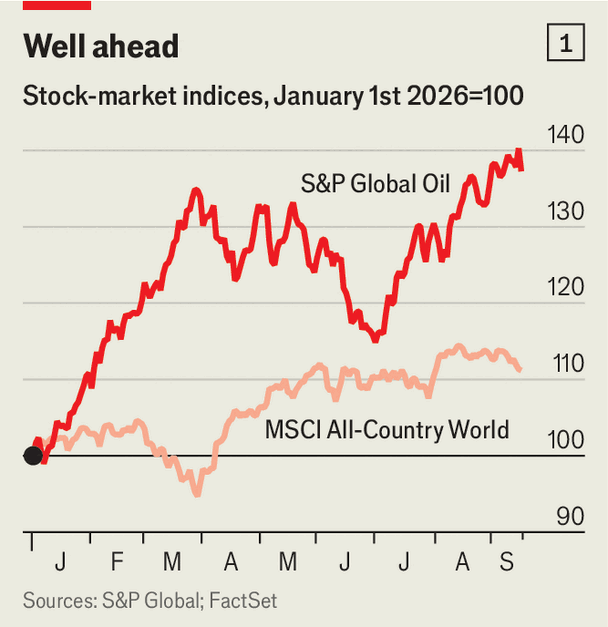
这场繁荣源于股东施加的多年紧缩政策，此前支出激增与油价暴跌在2010年代中期发生碰撞。尽管俄罗斯入侵乌克兰后油价突破每桶120美元，资本支出有所上升，但现金流增长更快（见图表2顶部）。盈余资金主要用于偿还债务和向股东分红，而非用于新钻井。实际上，资本支出的增加很大程度上反映了钻井和服务成本的通胀，而非实际活动量的真正上升。不过这次，石油公司可能不得不更有效地利用其庞大的现金储备。海湾战争可能引发一轮勘探和并购热潮，这将影响整个十年乃至更久。石油公司迄今也主要将最新收益用于偿还债务、回馈股东（以及在边际上提高现有资产的产量）。先看债务问题。■
企业将乌克兰入侵后涌入的资金主要用于巩固资产负债表。在海湾战争前约18个月的时间里，随着油价下跌，它们重新转向借贷以维持股息发放并资助既定资本支出（见图表2底部面板）。如今它们再度启动去杠杆进程。2026年第二季度，五大主要石油公司——埃克森美孚、雪佛龙、壳牌、英国石油和道达尔能源——合计净债务减少360亿美元，降幅近20%。通常债务负担更重的中小型企业则更加专注于减轻债务压力。另一项石油企业的优先事项是为股东谋利。在伊朗战争前夕，许多投资者正为可能的紧缩时期做准备。■
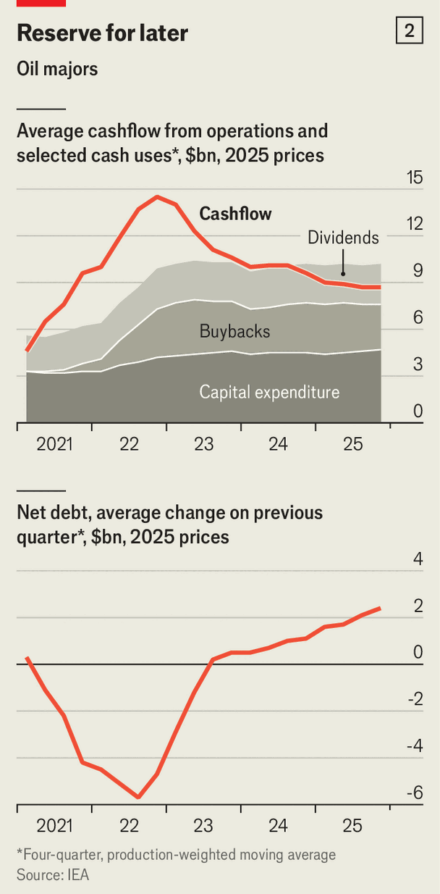
高盛集团（Citigroup）的阿莱斯泰尔·西姆（Alastair Syme）指出，大型能源公司已宣布将股东分红总额削减11%，主要通过取消股票回购计划实现。小型公司通常依赖债务融资发放的特别分红，此前被认为不可持续。但油价繁荣改变了这一局面。除英国石油公司（BP）外，所有大型能源公司均维持或提高了股息和回购计划。小型公司如今不仅提供特别分红，还开始发放定期分红。在完成债务削减和股东分红后，用于扩张投资的资金所剩无几。大型能源公司现金储备在2025年第四季度至今年第二季度间几乎未变。管理层竭力向投资者保证，2026年的大部分收益将流向股东，而非用于新项目。
唯一例外的是水力压裂巨头钻石背（Diamondback），以及像大陆资源（Continental Resources）和希尔科普能源（Hilcorp Energy）这样的未上市大型公司，它们资助了诸如在美国页岩盆地完成现有油井等快速见效的项目。此前在油价战初期保持谨慎是合理的，因为6月美国与伊朗达成初步协议时油价暴跌。但如今新一轮冲突使油价飙升，若油价维持高位数月，新项目的可行性将显著提升。这些项目正变得不可或缺。每两年，油田衰竭就会使全球损失相当于沙特阿拉伯产量的原油供应。而替代这些供应正变得愈发困难：近期勘探成果匮乏意味着到2040年，日均油气产量可能下降3100万桶——近五分之一的当前总量。咨询公司伍德·麦肯齐（Wood Mackenzie）估算，多达70家公司可能面临产量减半的风险。■
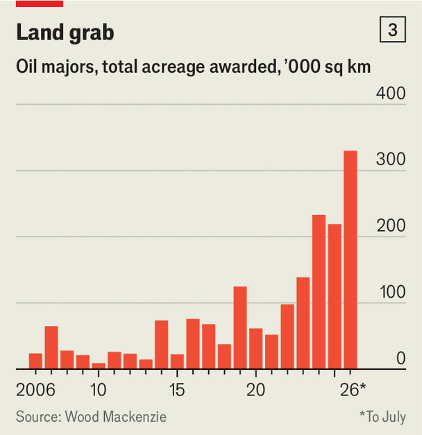
因此，石油公司需要更新其投资组合，而他们现在具备了实现这一目标的手段。行业期刊《石油经济学家》的保罗·希金（Paul Hickin）表示，地缘政治动荡以及摆脱中东依赖的意愿，正在强化投资的必要性。获取新资产的缓慢途径是勘探，预算尚未明显上升，但迹象显示，大型石油公司正在积极寻找机会。与其竞标正式许可证并预先投入资金，它们更倾向于先收购大量土地，再借助人工智能工具扫描，寻找适合钻探的区域（见图表3）。"转让部分权益"交易——即国家石油公司资助外国大公司的勘探活动以换取部分权益——也日益增多，部分原因是政府希望提升国内产量。多种地理区域正受到关注。
南大西洋海域，包括纳米比亚和南非沿海，以及东地中海地区，均存在深水油气田开发潜力。乌拉圭、越南和巴布亚新几内亚等地区则蕴藏着尚未勘探的盆地，相关勘探工作刚刚起步。从阿尔及利亚到澳大利亚，各国企业正尝试复制美国页岩气开发模式，同时亚洲部分成熟油田也具备通过强化钻探提升产量的潜力。更快捷的资源获取方式是收购竞争对手。年初并购活动预期较为低迷，因油价低迷抑制了交易意愿。初期进展缓慢，但原因相反：油价波动使买卖双方难以达成估值共识，伯恩斯坦投行分析师鲍勃·布雷特特指出。如今买卖双方逐渐适应油价长期走高的预期，交易节奏明显加快。■
过去两个月内，已有七笔超过10亿美元的交易宣布。交易量可能在明年进一步增长。Pickering Energy Partners（投资公司）的丹·皮克林指出，大型企业已消化了2020年初的大型收购，更强的资产负债表将使它们更容易进行大额支出。私募股权公司、大宗商品交易商以及寻求非海湾地区资源的外部企业（包括日本企业）也在积极寻找资产。而美国只剩下不到两年的友好交易、积极钻探的政府任期。股东们则似乎尚未寄望于扩张的黄金时代。■
标普全球（S&P Global）信息提供商哈桑·埃尔托里（Hassan Eltorie）指出，大多数上市石油公司目前的市现金流倍数与战前基本一致，表明其表现优异主要反映的是油价上涨，而非其发展前景出现持久性改善。石油需求的走势仍存不确定性，勘探可能令人失望，且目前鲜有明显的大规模收购目标。不过，海湾地区的僵局恰好为行业提供了重新设定方向的契机。■
§050 超级富豪育儿既难又赚原题：Nannying for the ultra-rich is increasingly demanding—and lucrative · 板块：Business · 栏目：商业
她每天至少工作12小时，每周7天，但之后有整整一周的假期。她年薪可达20万美元，按小时计算的薪酬与私募股权合伙人相当。在石油平台、矿场和集装箱船等高负荷工作领域，轮班制高薪已是常态。这种现象正越来越多地出现在另一个严苛领域：为超级富豪子女提供照护服务。
十年前左右，高薪的临时工作曾极为罕见。"我们过去常听到客户说：'我不会付这么多钱'，"英美家庭服务公司（British American Household Staffing，BAHS）创始人阿尼塔·罗杰斯表示，该公司为富裕家庭寻找保姆（也包括女管家、男仆和厨师）。"如今情况恰恰相反，"她说道。客户要求保姆不仅毕业于顶尖学院，还需掌握多国语言、拥有精英大学学位，并愿意频繁出差、工作超长时长。而他们也愿意为此支付高昂费用。这催生了高端保姆市场的繁荣，这一领域某种程度上仍属小众手工业。■
尽管一些机构历史悠久——如英国的诺兰幼儿师范学院（Norland University of Early Childhood），已存在逾百年——但许多富裕家庭转向的机构却相对年轻。罗杰斯女士（Ms Rogers）于2012年创立了BAHS；其竞争对手包括成立于2007年的冒险保姆（Adventure Nannies）和2015年成立的摩根与马勒特（Morgan & Mallet）。罗杰斯女士称目前已有7000名客户。富裕家庭与普通家庭的育儿工作基础相似：奶瓶喂养、准备餐食、带孩子去游乐场。但环境与期待的差异，使这份工作几乎变得面目全非。通常保姆只是众多员工之一，而非唯一雇员。
带孩子旅行也有所不同。“他们想要在游艇和喷气式飞机上工作过、有经验的保姆，”罗杰斯女士表示。“这几乎是理所当然的事。”她补充道，并非所有人都能适应这种“宛如《继承者们》”的环境。“这种极端财富对从未接触过的人而言可能压力巨大。”工作要求也可能极端（或极其琐碎）。一位保姆回忆称，曾为一位超富裕家庭工作时，每天都要熨他们儿子的内衣。另一位家长则因她未立即递上梯子更换游乐室天花板上的灯泡（高17英尺）而大发雷霆，当时她正照看年幼的孩子。随着轮班保姆制度的兴起，这份工作的结构也发生了变化。■
在新冠疫情爆发前，罗杰斯女士（Ms Rogers）的富裕客户——那些能负担得起尽可能多育儿时间的人——往往自行拼凑安排，聘请一位保姆负责工作日，另一位负责周末，再请临时保姆应对夜间外出。若父母需加班，他们通常希望工作日的保姆能临时加时。如今，两名保姆（一名在岗，一名待命）可全年无休地覆盖所有白天时段，但费用高达数十万美元。这对财力充足的客户而言显然更便利。若需一名保姆随行，她可能还需自行安排家庭照护，并获得更长工时的报酬，甚至额外交通费用。■
另一种选择是雇佣一位不同的育儿嫂负责这次旅行，孩子们对她并不熟悉。采用全职轮班制的育儿嫂，能减少更多干扰。罗斯女士表示，这种安排也适合许多育儿嫂。她们可以享有整整七天的假期做自己的事。当客户要求工作日育儿嫂时，她现在可提供的数量就少了。但新制度也可能带来成本。“在我真正深入育儿行业之前，如果你问我从四岁开始人生规划是什么，我会说想当全职妈妈，”拉娜·洛马斯科洛说，她为富裕家庭服务已有十年。“但现在我担心再也找不到人来承担这份工作的压力。‘如果我继续做下去，就无法生育孩子；如果我退出这个行业，我的收入又去哪找？’”对一些人来说，为超级富豪工作是令人愉快的奢华体验。■
多档成功的真人秀节目曾聚焦富裕家庭，从卡戴珊家族到《真实豪门妻子》，全球范围内均有呈现。6月，Hulu推出了以伊比沙岛为背景的真人秀节目《百万美元保姆》，六位女性和两位男性试图在富裕家庭中谋得职位。其中一人曾为金·卡戴珊担任保姆。节目中成人发脾气的场面比孩童更多。但节目对传统逃避现实的套路进行了颠覆：幻想不再是成为富人的一员，而是为他们工作。■
§051 植物奶渐失势头原题：Alternatives to milk are losing moomentum · 板块：Business · 栏目：商业
在咖啡中加入爆米花味燕麦奶？或者肉桂卷？或者两者都不是？据市场研究公司Circana（市场研究公司）统计，过去一年美国销售的植物基乳制品替代品销量下降了5.4%。其中销量最高的杏仁奶下降了7.9%。英国截至6月的一年期间销量下降2.5%；法国、意大利、荷兰和西班牙等国的增长速度也放缓。不过乳制品销量却有所回升，结束了长期下滑趋势。消费者正重新选择乳制品，认为其更符合钱包和健康需求。
植物基乳制品在2010年代成为主流，部分原因是人们认为其对气候更友好。
瑞典乳制品商Oatly声称，在英国其燕麦奶的气候影响仅为牛奶的三分之一。但2023年牛奶价格下跌后，许多消费者在疫情后经济压力下重返乳制品。随着更多人担忧超加工食品并仔细查看包装，他们发现替代奶成分中包含胶质、油脂、糖分和香料。尽管全脂牛奶含更多饱和脂肪，但替代品往往含更多糖。牛奶的蛋白质含量是燕麦奶的三到四倍。欧洲最大乳制品合作社Arla的高蛋白产品如夸克（quark）和斯凯（skyr）收入自2024年以来年增25%。替代奶生产商也在积极强化健康卖点。丹尼斯乳制品旗下植物奶品牌Alpro英国市场总监佐伊·加德纳（Zoe Gardner）表示，其增长策略是通过添加钙、蛋白质、碘和维生素提升产品营养。■
法国企业推出的“Silk Protein”植物奶及酸奶产品在北美市场宣称“比普通乳制品牛奶少50%的糖”。在小型供应商中，MALK品牌将其产品标榜为“无胶质”。Circana公司约翰·克劳福德（John Crawford）将转向植物奶的消费者比作“替代奶”饮用者与健怡可乐消费者。他表示，许多消费者“完全忠诚”，将饮品视为具有自身风味的产品，而非乳制品的替代品。这或许能解释为何模仿牛奶风味的饮品遭遇滑铁卢。Arla和达能（Danone）均放弃了表现不佳的品牌。植物基奶制品生产商认为创新是关键。Oatly英国及爱尔兰区总经理布莱恩·卡罗尔（Bryan Carroll）表示，仅作为乳制品的替代品并不足够。他表示，新口味正日益受到欢迎，尤其是年轻群体。■
它们包括爆米花和抹茶粉，这种流行绿茶粉自2025年推出以来已成为Oatly最畅销的调味产品。在Alpro，加德纳女士表示，肉桂卷饮料的成功推动了新的季节性口味策略。由开心果、山核桃和大麦制成的植物奶也逐渐登上超市货架。分析社交媒体动态的Tastewise发现，过去一年人们对这些植物奶的兴趣显著上升。但燕麦奶、杏仁奶和腰果奶的热度有所下降。或许新一代替代奶将从传统植物奶中夺取市场份额，而非从乳制品中。■
§052 像高手一样睡觉原题：Sleep like a pro · 板块：Business · 栏目：商业
亲爱的同事们 我很高兴地宣布我们“睡出未来”试验的结果现已出炉。背景方面，你们都知道Stew对自身睡眠习惯的执着以及充足休息的重要性。其他行业的证据清楚表明睡眠不足的负面影响。基于这些原因，我们决定在加拿大团队及全球法律部门推行一系列试点试验，旨在确保所有同事都精力充沛、准备好发挥最佳工作状态。我已列出主要发现及下一步建议。我们推行了一项名为“清醒时段”的具体举措，志愿者尝试前工业时代的睡眠模式。■
有证据表明，人类过去习惯在第一次睡眠后半夜起床，进行当时人们所做的各种活动，然后再进入第二次睡眠。我们的志愿者被要求凌晨2点起床工作两小时，之后再回到床上。有些人适应了这种作息；其他人则难以再次入睡，陷入木僵性疲惫状态。至少有一位销售员的第二次睡眠发生在客户会议中，导致一个重要销售机会随之消失。出现了意料之外的连锁反应。当高管们开始在凌晨3点发送邮件和Slack消息时，未参与实验的初级团队成员纷纷提前醒来以及时回复。随之，他们的黎明前活动又促使更多同事提前开始工作。■
考虑到这一连锁效应，我们认为整个组织的睡眠质量整体下降。我们向参与者发放了多种睡眠追踪设备，包括手环、腕带、手表等。五分之一的同事完全无法让设备正常工作，这反映出令人担忧的技术能力不足。（我们正在推出一项独立的培训计划Appiness at Work，以解决这一问题。）追踪器的数据并不完善，这给员工带来了一定程度的压力。许多使用追踪器的员工表示，直到追踪器告诉他们昨晚睡得很差，他们才感到自己并未完全休息好。另一些人被告知他们睡得像婴儿，实际上他们却辗转反侧，担心睡眠质量。这些不准确之处使得解读数据显示许多员工白天仍在睡觉变得困难。
整个高管团队似乎在最近的会议中都打盹了，当然这不可能是真的。我们尝试了多种较小的干预措施，效果参差不齐。团队成员收到了一系列助眠设备，包括口罩、环绕式助眠带、耳塞和防止磨牙的护齿器。这些设备对部分同事效果更佳，但也有少数人佩戴口罩后夜间醒来时产生恐慌，误以为自己被劫持。一位体型较小的同事甚至无法从重力毯下挣脱，最终由消防队解救。部分志愿者被寄送了镁片，但由于失误，我们告知人们服用远高于推荐剂量的镁片。镁片具有泻药作用，因此该试验已被作废。■
我们的调查数据显示，团队成员普遍认为薰衣草喷雾和草药茶具有舒缓效果，但并未显著改善睡眠质量。法律团队一名成员意外将薰衣草喷雾喷至面部，不得不前往医院进行预防性检查。与此事件相关的诉讼仍在进行中，我们建议未来任何形式的试点项目中，不应将律师作为实验对象。更广泛而言，我们反对强制推动人们参与此类倡议。为有需求者提供助眠产品是合理的，而同事间以非正式方式分享睡眠建议也是值得提倡的。■
例如，有人建议在入睡前收听特定内容，包括世界银行出版物的音频版（World Bank）、赛后运动员采访，以及所有投资者关系会议电话。但深夜跟踪员工行为显得过于侵入性，而对所有人推行统一解决方案也收效甚微。在进一步推广前，我们确实应该好好考虑一下。■ 请通过我们的Bartleby通讯了解职场世界。每周，我们的白领预言家都会探讨办公室生活的种种困扰。
§053 印度终于认真卖国有资产原题：At last, India is getting serious about selling state assets · 板块：Business · 栏目：商业
印度人曾为电话举行虚假葬礼。国家垄断企业实际安装的线路频繁中断，以至于成为讽刺作家的素材。当“线路工”——这家企业等级体系中最底层的员工——最终来修理线路时，他会被当作贵宾对待。经济学家施里坎特·古普塔（Shreekant Gupta）十年前在一部口述历史中回忆了这些故事，旨在向年轻一代印度人讲述国有资本主义时代的糟糕岁月。印度政府仍是本国企业的重要所有者。
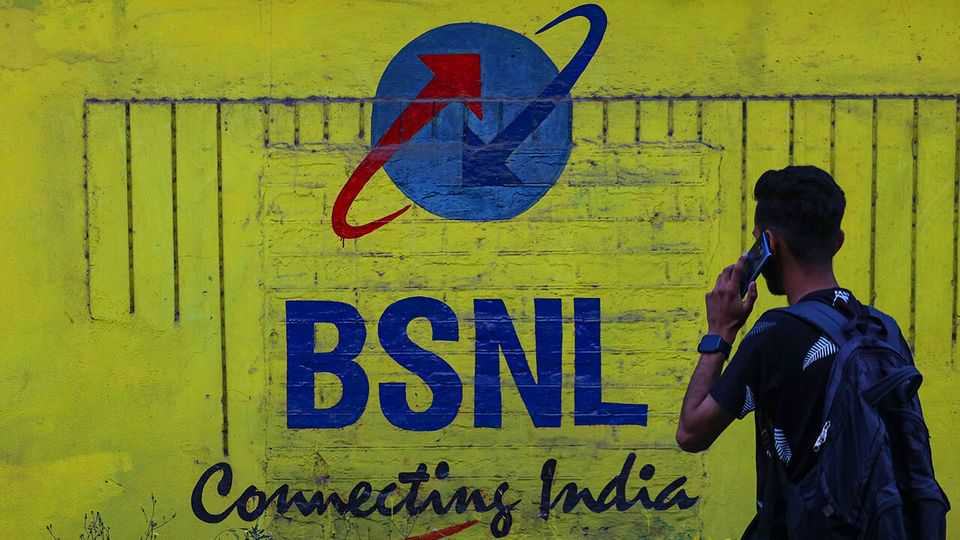
印度首任总理贾瓦哈拉尔·尼赫鲁认为，应发展经济的“制高点”，投资化肥厂和钢铁冶炼厂等重工业资产。其女英迪拉·甘地继任总理后，于1969年将主要商业银行国有化，1980年又将多数剩余银行收归国有。但两者都未能取得理想效果。1991年经济危机后，以社会主义模式管理经济的“许可证制度”彻底崩溃。“地球上没有任何力量能阻挡一个时机成熟的想法，”曼莫汉·辛格引用19世纪法国作家维克多·雨果的话说。然而，私有化时机尚未到来。尽管1990年代末至2000年代初曾短暂推进资产出售，但 Licence Raj 时期建立或收购的多数企业至今仍由政府掌控。■
印度政府掌控的领域从酒店和旅游委员会，到造船厂甚至钟表制造商无所不包。尽管印度人如今可以选择来自私营企业的超低价套餐，但政府仍拥有电信公司（现称BSNL，源于2000年重组）。事实上，中央公共企业（CPSEs）数量从1991年的236家增至2023年的291家，其经济占比却持续下降。这些企业去年贡献的GDP不足3%，相比2006年的11%已大幅缩水。自2014年上任以来，总理纳伦德拉·莫迪最初试图重启私有化进程，但成效甚微（1999-2004年出售部分国有资产的政府，由其党派更早、更具撒切尔色彩的版本领导）。■
自2022年印度国营航空公司Air India出售给塔塔集团（Tata，印度最大财团）以来，这是自2004年以来首次重大私有化举措，此后鲜有实质性资产出售。莫迪总理在2024年议会下院（Lok Sabha）选举中未获得多数席位，不得不与其它政党联合执政。完全将国企控制权转移给私人部门颇具挑战，因这将导致裁员并减少寻租机会。政府因此选择通过混合交易出售国企部分股权，既避免完全丧失控制权，又实现资产变现。其2026-27财年（4月起）的国有资本减持目标为8000亿卢比（约合84亿美元），较2025-26财年的3380亿卢比大幅提升。■
私人所有权占比的提升旨在实现部分私有化的好处，如增强监督和市场约束，同时仍允许国家从其股份中获利。2025年，财政部从公共企业部门（CPSEs）获得82亿美元股息，较2020年的47亿美元显著增长。左翼经济学家纳加拉杰·雷亚普鲁（Nagaraj Rayaprolu）表示：“无论是否涉及市场约束和管理自主权，公共部门的表现已持续改善。” 退出国有股份也能带来即时资金。诸如印度斯坦铜业（Hindustan Copper）、印度煤炭公司（Coal India）和国家水电公司（National Hydroelectric Power Company）等“传统经济”企业，其股份已全部出售，目前估值仍属合理。人工智能数据中心的建设推动了电力和铜的需求增长，而铜是众多电子元件的关键原材料。■
印度上市中央公共企业（CPSEs）总市值自2020年3月的1090亿美元攀升至4000亿美元，部分得益于新冠疫情后印度股市的重新估值。 Kotak Mahindra私人银行资产管理子公司负责人Nilesh Shah表示：“今年将是实际减持规模首次超过预算预期的一年。” 本财年印度政府已实现55亿美元的减持目标，占其84亿美元年度目标的较大比例。 JM Financial券商分析师Hitesh Suvarna预计，通过将国有上市公司股份减持至单一股东持股上限75%（政府仍可获得监管豁免），政府或可筹集约140亿美元资金。此举将使政府维持与印度强大私营企业巨头相同的控制权，同时获得可观资金。 ■
印度政府仅通过出售印度人寿保险公司（LIC）6.5%的股份就获得33亿美元，却仍保留约90%的股份。然而，将公共公司控制权移交私营部门的私有化进程几乎停滞不前。目前仅有印度开发银行（IDBI Bank）这家中型贷款机构的出售计划正在推进，甚至这一交易也可能告吹。9月8日，IDBI银行股价暴跌11%，因媒体报道称其潜在买家加拿大金融公司Fairfax要求压低收购价格。Fairfax正在考虑收购IDBI银行60%的股份，其中一半由政府出售，另一半由LIC出售。然而，莫迪政府手中握有大量股份，总能找到其他股份出售。■
§054 “奥赛人”挤掉“达沃斯人”原题：Olympiad Man has displaced Davos Man · 板块：Business · 栏目：商业
在柏拉图的《理想国》中，社会由黄金之民（统治者）、白银之民（战士）和青铜之民（农民）组成。自1959年以来，全球顶尖的青少年数学家（以及近年来在其他领域表现出卓越才能的人）通过国际奥林匹克竞赛检验实力。每年约有300枚金银铜牌颁发给数学竞赛优胜者，物理、化学和计算机科学（即信息学）领域则颁发更少的奖牌。从这些竞赛优胜者中崛起了一群前所未有的精英，他们改变了资本主义的历史。看吧：这就是奥林匹克竞赛优胜者。
■
人工智能安全危机最恰当的理解方式是奥赛男的危机。去年AI模型在数学领域取得金牌级表现。此后持续的突破性进展让Anthropic公司两位研究员辞职，他们曾是2017年英国数学奥赛队的三分之一成员。Anthropic公司负责人达里奥·阿莫代伊（Dario Amodei）曾是美国物理奥赛队的成员，但并非主力阵容。OpenAI则任命保罗·克里斯蒂亚诺（Paul Christiano）进入董事会，后者在AI安全领域有长期研究经历，并曾获得数学银牌。达沃斯人（Davos Man）在20多岁在麦肯锡磨炼，而奥赛男早在第一次饮酒前就已精通数学竞赛。（奥赛女极为罕见。）天赋异禀的儿童往往成长为极其昂贵的成年人。2024年谷歌以27亿美元聘请诺姆·沙泽尔（Noam Shazeer），后者于1994年获得数学满分成绩。■
他最近转投OpenAI，而该机构的首席研究员曾兼职担任美国信息学团队的主教练。在2010年代，谢丽尔·桑德伯格（Sheryl Sandberg）作为典型的达沃斯女性，是Meta最赚钱的高管；如今则可能是29岁的亚历山大·王（Alexandr Wang），他刚从美国编程竞赛圈（problem-set circuit）中脱颖而出。包括Databricks（估值1900亿美元）、Cursor（600亿美元）、Cognition（480亿美元）和Perplexity（300亿美元）在内的AI初创公司，其创始人中都有奥赛男（Olympiad Man）。奥赛男同样擅长金融领域，那里曾经宽肩的场内交易员早已被窄肩的算法工程师取代，后者以光速买卖股票。两家大型交易公司Two Sigma的创始人曾代表美国参加数学竞赛。■
珍街（Jane Street）是另一家交易巨头，也是奥林匹亚人（Olympiad Man）的最爱雇主之一，其在公司债券交易领域甚至超越了银行，这或许标志着华尔街街头投机者的最后堡垒，同时涉足风投领域（可能投资于其他奥林匹亚人的初创企业）。加密货币领域不乏不识字的投机者，但也涌现了许多数学高手。以太坊区块链的创始人在计算机科学领域获得铜牌；而Hyperliquid这家大型交易所的创始人则在物理学领域摘得金牌。正如他们的体育界同名者一样，奥林匹亚人的胜利是值得自豪的国家荣誉。但培养和吸引奥林匹亚人这一事业同样也是国家权力和财富的源泉。过去他们大多留在大学，如今许多已步入职场，其影响力更为显著。他们成群结队地聚集，麻省理工学院（MIT）便是其中的磁石之一。
剑桥大学三一学院也是其中之一。（这两所机构则是在追求平等的城镇中脱颖而出的卓越之地。）Menlo Ventures的投资者迪迪·达斯（Deedy Das）分析了过去25年数学、计算机科学和物理学领域的竞争者。谷歌雇佣人数最多，而Meta则位居第二。除了Jane Street，Jump Trading也是金融领域热门的雇主之一。有充分理由选择“奥林匹亚人”而非“达沃斯人”——这位精明的高管曾多年在任何地方安家，但如今却无处可容。如何成为世界经济论坛的“青年全球领袖”？无人知晓。如何成为“奥林匹亚人”并进入人工智能公司获得高薪职位？你只需通过两场考试，朋友。在既轻视又嫉妒精英的社会中，审视自身权力的能力具有优势。■
尽管如此，自由市场如今通过一个由共产党设计的体系来颁发其最重大的奖项，这本身就是一个巨大的讽刺：首届奥运会是在苏联阵营举办的；美国直到1974年才开始参与。奥运派对全球化的愿景比达沃斯派更具吸引力。据土耳其经济学家托尔加·尤雷特（Tolga Yuret）表示，2000年代参加奥运会的人中，超过半数最终选择移居海外。西方，尤其是美国，对奥运人才的吸纳热情高涨，这些人才可能最初来自罗马尼亚、中国或印度。研究奥运派现象也是对移民负面看法的一种纠偏。左翼是否不奇怪，他们是否应该花更多时间吸引奥运派，而不是快递员？右翼是否没看到移民在本国国家队中取得的卓越成就？■
仅从名字上看，不看他们那些星条旗领带，美国数学队很容易被误认为是中国队。威廉·F·巴克利曾说过，他宁愿由电话簿中随机抽取的名字来治理国家，也不愿由哈佛大学教授名单中挑选。那么，一个奥林匹克竞赛精英名单呢？必然性使精英阶层与他们的追随者截然不同。但奥林匹克竞赛精英则真正与世隔绝。他几乎没有员工，甚至更少的朋友，这些朋友并不共享他背景的某种版本。他的理性主义哲学会让普通民众觉得是疯狂的标志（人工智能实验室和对冲基金里满是有效利他主义者）。他的语言难以理解。并非因为复杂——人工智能研究者们常常轻率地谈论“p doom”（即他们的技术终结世界的可能性）——而是因为没人相信。
投资者认为奥林匹亚先生（Olympiad Man）过于谨慎。政界人士则认为他缺乏对国际事务的远见。普通民众尚未完全理解奥林匹亚先生及其权力。除非他能展现出与自身才华相匹配的美德，否则奥林匹亚先生应希望保持现状。■
§055 债息飙升、赤字巨大、债务高企：会出什么乱子？原题：Soaring bond yields, gaping deficits and towering debts: what could go wrong? · 板块：Finance & economics · 栏目：财经
在富裕国家，投资者正迫使政府支付更高代价。英国、法国、德国和日本的债券收益率均出现上升。9月14日，美国十年期国债收益率突破5%，创二十年来新高。富裕国家十年期政府债券的中位收益率已超过4%，这是15年来最高水平，约为2015-21年平均值的五倍（见图表1）。更令人担忧的是，当各国债务达到前所未有的高位时，借贷成本却在攀升。
发达国家公共债务占GDP比重已接近110%，较2000年初的约70%显著上升。美国的债务占比在该期间翻倍以上，英国则接近三倍。各国政府对紧缩政策缺乏热情。美国今年预计赤字占GDP比重将达6%，法国则超过5%。整个2010年代，由于利率处于历史低位，政界人士可以忽视债务危机的警告。如今利率开始上升。9月16日，美联储将基准利率上调0.25个百分点。欧洲央行（ECB）则在一周前采取了类似行动。债券市场发出信号，廉价政府融资的时代已经结束。大额借贷者即将发现，当利率无法再被忽视时，那些债务堆积究竟有多沉重。■
政府过去曾同时应对高收益率和高借贷问题，但至少在最近几十年里，两者并未同时出现。2007年，当发达经济体债券的中位收益率接近当前水平时，政府只需发行相当于GDP约11%的债务。而今年，为填补巨额赤字并替换过去低利率时期发行的债务，政府将不得不发行超过两倍的债务。在经合组织（OECD）成员国中，利息支出已占GDP的3%以上，美国更是接近5%（见图表2）。大量债务仍以旧时代的低利率发行，随着这些债务到期，偿债成本将显著上升。■
根据负责任联邦预算委员会（Committee for a Responsible Federal Budget）的预测，若借贷成本维持当前水平，美国联邦政府的年度利息支出到本十年末可能几乎翻三倍，达到2.7万亿美元。这一数字将超过美国在医疗保险（Medicare）和社保（Social Security）上的支出。短期政府债务收益率主要反映投资者对央行利率走势的预期。然而长期借贷时，投资者更关注通胀风险和公共财政状况。即便2024年多数大型富裕经济体央行开始降息，他们仍在缩减长期债券持有量（债券价格下跌导致收益率上升）。■
经合组织预计，到2025年底，平均“期限溢价”——投资者为长期借贷而非短期借贷所要求的额外回报——将比新冠疫情在2020年冲击市场前的水平上升逾一个百分点（见图表3）。今年该指标仍在持续攀升。在美国，期限溢价目前估计已达到近十年来的最高水平。特别是对美国财政前景的担忧日益加剧，正在削弱美国国债的特殊吸引力。投资者过去习惯接受美国国债比近似替代品更低的收益率，因为其安全性与流动性极高。但这一情况已不再。■
■分析由麻省理工学院（Massachusetts Institute of Technology）的Lira Mota撰写，后由斯坦福大学（Stanford University）的Hanno Lustig更新。该分析对比了剔除违约风险后的美国国债与最高评级企业债券，发现这种“便利收益”——投资者为持有国债而愿意放弃的回报——已于今年7月几乎消失。当美国每年需在债券市场筹措数万亿美元时，这种特权的丧失代价高昂。有理由认为，长期高收益率可能将持续存在。数万亿美元规模的人工智能基础设施投资热潮需要资金，且正与政府争夺投资者的关注。与此同时，一些以往可靠的买家正在消失。那些多年来通过购买政府债券以防止通缩的央行，正逐步减少其持有的国债数量。
确定给付型养老金基金曾通过大量购买长期政府债务来支付基于参与者最终薪资的养老金，如今正被确定缴费型计划取代，后者通过投资股票等高风险资产来提升未来领取者收益。"如今最敏感的买家是注重价格的投资者，"OECD资本市场部门负责人塞尔达·切利克（Serdar Celik）表示。这些买家因此要求更高的回报。2025年政府发行十年期债券的利率比替换掉的债券高出约两个百分点。而今年收益率更高，下一轮债务将更加昂贵。当然，摆脱困境的最佳方式是停止挖掘——也就是减少借贷。可惜，政客们却正沉迷于挖掘。■
在美国，唐纳德·特朗普（Donald Trump）于2025年推出的庞大财政法案使他此前的减税政策永久化，并新增多项税收优惠，导致未来十年赤字增加数万亿美元。日本首相高市早苗（Takaichi Sanae）正由国家主导大规模半导体与人工智能投资，同时削减消费税。法国则因人口老龄化和债务偿付成本上升，难以控制公共支出。政府更倾向于改变借贷方式而非削减借贷规模。为避免支付期限溢价，他们越来越多地发行短期债务。十年以上期限的新债占比降至2009年以来最低水平。政府也更依赖短期债券（一年内到期的债务）。2010年代，发达国家发行的固定利率债券比票据多出60%。■
自2023年以来，国库券已占据更大份额。如今美国未偿债务中近四分之一为国库券，这一比例在富裕国家中最高。美国整体未偿债务平均到期时间已不足六年，仅比典型新兴市场稍长。短期借贷未必是错误的选择。如果当前高长期收益率只是暂时现象，为何要锁定数十年？若长期收益率持续存在，是因为长期债券需求结构性减弱——如定义受益养老金计划缩减、央行退场——政府就有理由将部分发行转向较短期限。当然，代价是债务到期时间提前。经合组织成员国中，三分之一的固定利率债务将在2028年前到期，近半数将在2030年前到期。而眼下利率似乎正上行，而非下行。
油价再次突破每桶100美元大关，因伊朗战争持续拖累市场。在美国，用于卡车、推土机和拖拉机的柴油均价创历史新高。剔除能源和食品的核心通胀率在许多国家仍顽固居高不下。受疫情时期通胀应对迟缓的打击，央行加息决策者不再等待观望。欧洲央行（ECB）可能在接下来的六个月再次加息。市场预期美联储（Fed）至2027年3月前至少再加息两次25个基点。随着各国为短期融资借贷成本攀升，许多国家或将发现借贷利率超过经济增长率。在这一情形下，即便政府平衡了“初级”预算（即扣除利息支付前的预算），债务负担仍将持续上升。■
为了解决债务危机的严重程度，《经济学人》计算了若富裕国家必须以当前五年期债券收益率替换全部债务存量时的后果，采用国际货币基金组织（IMF）对名义增长的预测。在22个国家中，英国需维持GDP的1.5%经常性盈余，仅能保持债务与GDP比率稳定，居首位。意大利和法国紧随其后，分别需要1.4%和1.2%的盈余。美国也不遑多让，需1.0%的盈余（见图表4）。其他多数国家仍可维持小幅赤字，同时保持债务负担稳定。例如日本可承受0.8%的赤字，因其经济增长率预计高于债务利息率。多数国家目前远未达到这样的盈余水平。■
美国目前的基本赤字接近GDP的4%，这意味着需要实施近GDP5%的紧缩措施，才能在当前借贷成本下稳定债务比率。法国的赤字率接近GDP的3%，相当于需要实施约GDP4%的紧缩。英国需要在这些国家中实现最大的盈余，但至少今年已削减了赤字，并将大部分调整措施纳入预算计划。法国则缺乏类似的计划，其政界人士对在明年总统大选前制定计划也缺乏热情。美国的前景更为严峻。最令人担忧的是，由于持续的赤字和飙升的收益率，局势正在迅速恶化。仅仅一年前，美国所需的调整幅度比现在少了两个百分点以上。■
法国的困境已加剧近一个百分点。对许多欧洲国家而言，高税收（占GDP比重）使得在不造成经济损害的情况下，难以从纳税人那里挤出更多资金，这使问题更加复杂。法国政府收入占GDP比重已超过50%，目前几乎没有回旋余地。如果利率不下降，政府又拒绝做出调整会怎样？短期融资虽能延缓痛苦，却无法消除危机。随着廉价债务到期，利息支出将上升，赤字扩大，最终必须采取的紧缩措施规模也将随之扩大。这可能进一步推高收益率，使经济形势再度恶化。政府拖延越久，最终的代价将越严重。■
§056 贝森特别再怪债市原题：Scott Bessent should stop blaming the bond market · 板块：Finance & economics · 栏目：财经
西奥多·罗斯福（Theodore Roosevelt）“轻声说话，手中握有重棒”的训诫，如今显得尤为贴切。8月中旬，美国财政部长斯科特·贝森特（Scott Bessent）高调宣布，将加强其部门对长期债务的回购计划。9月9日，财政部表示愿意回购最高达60亿美元的债券；9月24日及此后每周近一次，计划分批回购最高达40亿美元的债券。贝森特称其目标是“推动市场回归平衡”，即降低政府借贷成本。要实现这一点，他需要更有力的手段。
■
自贝森特先生8月中旬宣布干预措施以来，十年期美国国债收益率已从4.65%飙升至5%以上，创2007年以来最高水平。考虑到贝森特先生那微不足道的干预手段，这一结果也就不难理解了。美国政府总债务高达40万亿美元，相当于每笔回购操作金额的1万倍。这就像你向一家银行借了100万美元，却在柜台拍几张百元钞票，盯着柜员要求降低利率。贝森特先生的干预不仅在自身目标上失败，其诊断本身也明显错误。在他看来，债券市场正遭受投机者煽动的“高烧”，导致美国借贷成本高于其应有的均衡水平。换句话说，交易已变得功能失调，债券持有者并未根据国债的基本面定价。事实上，债券市场正按照应有的方式运行。■
功能失调的政府债券市场并不难识别。这些资产对金融体系至关重要，一旦交易陷入停滞，其他环节势必随之出问题。例如，2020年初，美联储（Federal Reserve）购买国债，以应对新冠疫情导致的经济停摆、企业争抢现金以及这些所谓“安全资产”价格暴跌的情况。2022年，英国央行（Bank of England）为英国主权债务市场提供担保，因此前政府发布的荒谬预算使收益率飙升，危及该国养老金基金。相比之下，与过去不同，如今美国国债市场不仅未出现崩溃迹象，甚至几乎没有表现出明显压力。9月10日，美国拍卖了价值220亿美元的新30年期国债，收益率为5.3%。■
交易员的投标金额超过该金额的两倍多——芝加哥商品交易所（CME Group）指出，这一比率处于近期类似拍卖的上限区间。交易所强调，非交易商占了98%的竞争性投标，“表明投资者兴趣浓厚，很可能反映了近期收益率的上升”。确实，近期的收益率上升已使美国借贷成本升至近20年高点。但低利率的2010年代才是异常现象。按2007年前的标准，当前的收益率看起来完全正常。十年前的十年期国债收益率平均为5%，30年期平均为5.4%。其他衡量市场紧张程度的指标也呈现相似趋势。如果债券持有者担心美国政府可能违约，他们本应为此进行保险。■
信用违约互换的溢价显示，市场对这类衍生品的需求并不旺盛。如果交易员担心债市失灵可能导致收益率剧烈波动，他们本应将这种预期波动率纳入期权合约。然而，衡量此类预期的MOVE指数目前远低于疫情后通胀飙升时期水平。事实上，市场运行之平稳令人意外。美国国债面临两大问题，首要问题是美国发行的国债数量远超需求。截至本财年最后一个月，国会预算办公室估算政府已借入近2万亿美元，相当于GDP的6.3%。另一大问题是，美国在推行关税、伊朗战争等政策的同时推高通胀，从而削弱已发行债券的价值。■
投资者要求更高的回报，这表明市场在正常运转。布森特先生的问题在于，这种对美国债务的理性定价，应用于其已发行的巨额债务后，使得他的利息支出变得越来越难以承受。他的最佳选择是减缓借贷速度。但如果他想通过压榨债券持有人来迫使他们屈服，那他最好开始寻找一棵巨杉来砍伐。■
§057 非洲最大IPO能为股市带来什么原题：What Africa’s biggest IPO can do for its stock markets · 板块：Finance & economics · 栏目：财经
阿liko Dangote（阿lik，达格特）是非洲商业界的大佬。他是非洲最富有的企业家，身家约300亿美元。他建造了非洲最大的炼油厂，占地约曼哈顿一半大小，位于拉各斯郊外。9月14日，他推出了非洲有史以来规模最大的首次公开募股（IPO），即达格特石油炼厂（Dangote Petroleum Refinery）的正式名称，希望以近500亿美元估值筹集至少16亿美元资金。若该IPO在11月于尼日利亚证券交易所上市时达到这一市值，将立即成为非洲最具价值的上市公司之一。■
69岁的丹戈特先生对这一前景感到兴奋。“我的司机、我的母亲，所有人现在都将参与进来，”他告诉《经济学人》。证券交易所的设立让农村地区的散户投资者得以通过微型销售终端购买股票，财富科技初创企业正指导用户如何参与其中。TikTokers正敦促海外非洲人参与购买。IPO启动时，热门交易应用Bamboo因需求激增而崩溃。“未来，我们召开年度股东大会时，将在体育场举行，”丹戈特推测。无论是否坐满场馆，选股正在成为非洲大陆的热门活动。通过手机交易股票的散户投资者正助力整个大陆股市上涨。■
尼日利亚基准指数今年以美元计上涨71%，与韩国相当但未涉足人工智能领域。加纳基准指数涨幅达50%。三月赞比亚主要指数较去年同期翻倍，此后基本维持在这一水平。非洲市场曾被视作规模小、流动性差且难以预测。尽管按全球标准仍属规模较小，仅占全球市值不足1%，但正逐渐变得更有深度且更稳定。它们在新冠疫情后仍保持良好状态，并在今年经受住最新海湾战争的考验，令质疑者措手不及。与全球许多地区泡沫化的估值相比，非洲股市显得更具吸引力。非洲企业受益于国内更明智的经济政策。■
加纳成功压低通胀，消除了对本国货币的持续不确定性。尼日利亚同样如此，该国还迫使银行和养老基金管理者提高资本储备。标普全球（FTSE Russell）——一家全球指数编制机构，于2023年将尼日利亚的评级从高风险“前沿市场”下调至几乎无法投资的“未分类”——现正撤销这一决定。赞比亚正重组公共债务，并从全球铜价上涨中受益，该国拥有丰富的铜矿资源。许多本地上市企业是消费者熟悉的非专业投资者熟知的品牌。尼日利亚最大移动网络运营商MTN Nigeria，2024年仍亏损，但2025年便实现超过7亿美元的税后创纪录利润。丹格特先生的水泥业务盈利接近这一水平。■
在马拉维，一些银行的利润年增长率高达一倍，金融顾问们开始在TikTok上用当地语言奇切瓦语（Chichewa）向民众宣传，如何成为自己最喜爱的贷款机构的“部分所有者”。将投资于盈利企业宣传为一种比把现金藏在床垫下更聪明的财富积累方式，同时对冲通胀风险。多家金融科技初创公司正让这种财富积累变得更加便捷。Bamboo平台拥有230万用户，覆盖尼日利亚、加纳、肯尼亚和南非，允许用户投资本地及海外股票。2026年第一季度，该平台在尼日利亚股票的交易量首次超过美国股票。Bamboo首席执行官理查德·巴塞伊表示：“我们本质上是在为普通尼日利亚人、市场交易者这些客户构建服务。”Bamboo的平均单笔交易额不足50美元。■
这些新投资者带来了流动性，正如丹戈特（Dangote）所言，“这取决于人们的参与度”。然而，对投机者而言吸引这些市场的前景——巨额收益——也使市场波动性极高，因而同样可能带来巨额亏损。低收入群体面临最大风险。在马拉维（Malawi），去年股市的牛市行情在11月达到顶峰后，随即出现20%的回调，同样的抖音（TikTok）用户们曾鼓励投资者，如今却转而警告称投资是“过山车”和“需要大手笔的游戏”。真正的流动性将来自资金雄厚的机构投资者，可能包括外国投资者。丹戈特（Dangote）选择在尼日利亚（Nigeria）而非海外上市其炼油厂，这与非洲许多大型矿业和能源企业通常的做法不同，这或许能吸引更多本土的聪明资金（他正考虑未来几年在美国进行二次上市）。■
非洲充满活力的经济体已率先采取行动。花旗集团（Citigroup）分析师戴维·考恩（David Cowan）估计，当前的上升趋势将持续数年。之后的情况则难以预料。在此期间，预计非洲股市将呈现如体育场般热烈的氛围。■
§058 AI繁荣的涓滴效应原题：The trickle-down economics of the AI boom · 板块：Finance & economics · 栏目：财经
人工智能究竟有何用处？如果以美国民众的民意调查为参考，答案似乎并不乐观。近七成民众反对在自家后院建设人工智能数据中心。同样多的人对这项技术本身持反感态度，担心它可能夺走他们的工作，甚至让人类失去未来。支持者反驳称，即便在人工智能大幅提升生产率之前，数据中心投资热潮已推动经济增长。他们认为，这些好处将惠及所有人，而不仅仅是少数科技寡头。■
在美国，任何早期效应都可能被经济的庞大和多样性所稀释。更值得观察的是韩国和台湾。韩国是全球先进内存芯片的主要生产国，这些芯片用于管理机器学习任务；台湾则是其他所有人工智能硅芯片的全球制造中心。人工智能带来的繁荣已在两国的宏观数据中显现。出口激增已使韩国年度GDP增速达到约4%，台湾则飙升至12%。私人消费在一年前停滞不前，如今正加速增长（参见图表1）。今年第二季度，台湾私人消费贡献了GDP增长的约五分之一，韩国则约为三分之一。这种经济红利在台湾最为明显。■
台积电（TSMC），这家制造全球近半数人工智能芯片的“国家冠军”企业，其晶圆产量从2019年的1000万片标准硅晶圆增至去年的1500万片。同期其资本支出增长更为迅猛，从150亿美元跃升至410亿美元。这推动台湾固定资本形成总额自2023年底以来上涨近40%。半导体供应链正迎来大量资源投入。台湾从事电子元件或计算机制造的员工占比近11%，为自2016年以来的最高水平。薪资增长最初集中在台湾电子产业，但自2024年起已蔓延至整个劳动力市场。台湾平均名义工资年增长率目前已达3%，高于疫情前的1.9%。■
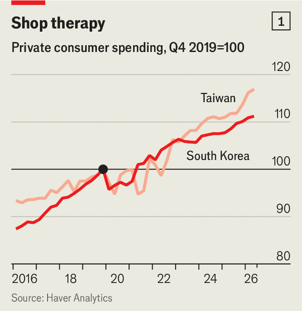
东亚经济咨询公司（East Asia Econ）的保罗·卡维（Paul Cavey）指出“巴拉萨-萨缪尔森效应”，这是一种经济现象，即高生产率的可贸易商品行业会推高整体劳动力成本。与此同时，政府正准备将日益增长的硅鹅税收用于发放补贴。2027年社会福利支出预计增长40%。上个月，总统赖清德（Lai Ching-te）提议向所有台湾民众发放约300美元的“AI红利”，总成本达70亿美元（约占预期收入的6%）。儿童福利新政策也在筹划中。相比之下，韩国情况更为复杂。主要原因是韩国硅需求突然激增，而非逐步上升。■
2023年至2025年间，随着疫情时期电子产品热潮消退，内存芯片价格一度下跌，韩国最大芯片制造商三星电子（Samsung Electronics）反而削减了资本支出。其主要竞争对手SK海力士（SK Hynix）则在此期间将支出增至原来的三倍，但基数仅为每年60亿美元。两家公司已签署的政府支持的5000亿美元投资计划尚未体现在当前支出中。过去三年来，韩国实际固定资本形成仅增长3%。因此，今年出口增长主要并非来自产量提升，而是价格大幅上涨。韩国整体出口价格在过去一年上涨了57%。■
因此，立竿见影的受益者仅限于韩国不到1%的芯片行业从业者，以及内存芯片双巨头及其供应商的股东（间接惠及少数幸运者的相关产业）。按名义价值计算，韩国整体经济的平均年度工资增速已低于疫情前3.5%的水平（见图表2）。所谓“财富效应”——即股市上涨使持股消费者感觉富有从而增加消费——也表现疲软。尽管韩国KOSPI股市自2023年以来涨幅超过一倍，韩国央行的一项研究估计，每1美元的股市收益仅能转化为0.01美元的额外消费，而美国股市爱好者则能转化为0.05美元（误差±0.01美元）。韩国政府也更为节制。■
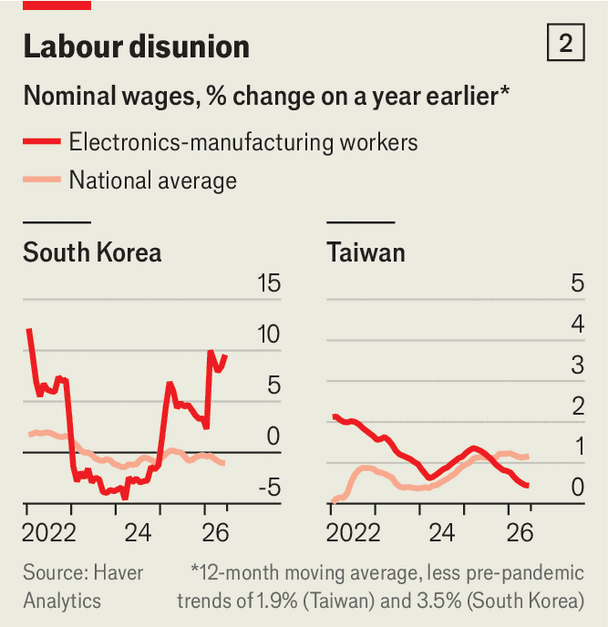
尽管预计2027年税收收入将增长50%，但政府并未计划向民众发放现金。据咨询公司Capital Economics预测，其中约70%的资金将被用于储蓄，其余主要用于缩减财政赤字及设立未来响应基金以支持长期投资。随着三星与SK Hynix加大投资力度，生产将随之增加，这将推动劳动力需求，最终带动整体薪资上涨，正如台湾所经历的那样。Cavey先生将韩国比作2003-11年的澳大利亚，当时矿产繁荣推动了采矿业投资的持续增长，最终转化为广泛的经济收益。韩国政府计划在基建与教育领域的投资也可能带来生产力提升，而台湾的现金发放则难以实现类似效果。此类政策的影响不会立竿见影。■
但它们可能经证实更为持久。■
§059 人均GDP放缓威胁全球生活水平原题：The GDP-per-person slowdown threatens global living standards · 板块：Finance & economics · 栏目：财经
一个不幸的俱乐部正在吸纳新成员。作为世界第二大经济体的中国，以及最咄咄逼人的俄罗斯，都已加入其中。德国——一个远比俄罗斯富裕的大经济体，以及巴西——该国可能很快将成为农产品出口量超过美国的国家——也相继加入。目前，约33亿人，即全球五分之二以上的人口，所处地区的人均GDP增速在2014至2024年间相较前十年下降了一半或更少。2014年时这一数字仅为11亿人，即不足六分之一的人口。■
超过7.3亿人正经历经济学家们最青睐的生活水平衡量指标的明显下滑。一些地区仍持续富裕，这些幸运地区居民的实际收入在2014年至2024年间增长了38%。其中近半数增长得益于15亿印度人生活水平的改善，其经济正随着出生率下降而逐步赶上富裕国家。持续领跑富裕国家的美国，推动了高收入国家的平均值（见图表1）。但低增长或无增长国家及地区数量已从2014年的68个增至2024年的80个。这些国家从富裕的加拿大到贫困的刚果民主共和国不等，其面临的问题从人口结构到经济管理不善不一而足。所有这些地区都面临相似的风险。■
生活水平停滞，更不用说下降，正在动摇一个主导了数十年的假设：人们会比父母过得更好（见图表2顶部面板）。在那些年轻人成长于经济放缓时期的国家，这种变化已开始重塑社会并重新定义社会契约。在发达国家，经济放缓通常源于低生产率增长和高移民率的共同作用。新移民最终可能重振经济，但短期内对GDP的提振微乎其微。由于低效企业利润较低，它们缴纳的税也较少。当生产率增长乏力而移民又受到欢迎时，财政预算的紧缩将被更多人分摊。结果是个人普遍感到被剥夺了利益。■
德国生产率在2014年至2024年间几乎未见增长，而该国接收了来自叙利亚等地的移民。德国居民的实际收入年均增长0.6%。在之前的十年里，这一数字为1.5%，尽管2007-09年的全球金融危机和随后几年欧元区的几乎崩溃。在加拿大，人口增长快于GDP，2024年失业率上升近1个百分点，主要由于新移民扩大了劳动力规模。与此同时，许多资源丰富的新兴国家尚未从2014年大宗商品繁荣结束的冲击中恢复。以出口为导向的成功案例如乌拉圭和智利，其收入增长已几乎停滞。拉丁美洲居民的平均收入与十年前相比几乎未变。撒哈拉以南地区的人们则比十年前贫困3.4%。■
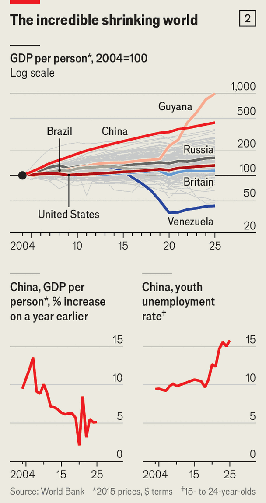
安哥拉作为主要出口石油和钻石的国家，其人均GDP下降了四分之一。一些人口众多的新兴经济体的状况也恶化了。2006年9月，巴西、俄罗斯、印度和中国的外长首次会面，成立了金砖国家（BRICs）这一快速发展的新兴大国集团。此后只有印度避免了增速放缓。中国的人均GDP增速在2014-24年间仅为2004-14年间的二分之一。制造业驱动的追赶式增长带来的乐观情绪已让位于疲软的国内需求。在俄罗斯，尽管人口减少导致分母缩小，但人均增长幅度仍不足以往的一半。这些变化带来的影响将十分深远。对物质进步的看法影响着谁当选（在有选举的地方），以及谁努力工作和生育多少孩子（在所有地方）。■
2006年，哈佛大学的本杰明·弗里德曼（Benjamin Friedman）提出，生活水平的提升有助于培育政治稳定、任人唯贤等美德。经济放缓可能产生相反的效果，尤其对那些处于经济生活早期阶段的人而言。其一便是怀旧情绪的滋生。2025年，乔治·梅森大学的朱斯廷·杰斯特（Justin Gest）及其合作者对2万名欧洲人进行了调查，至少五分之二受访者认为自己这一代在经济上处于劣势。仅50岁以上人群比18至34岁群体更易陷入这种“怀旧式匮乏”。类似地，奥利弗·惠曼咨询公司（Oliver Wyman）对1995至2010年间出生的中国人群体进行调查发现，56%的人对改善生活前景感到担忧。相较之下，更早一代人更为乐观：根据皮尤研究中心2015年调查，1980年代末出生者中70%对经济持积极看法。怀旧情绪会导致参与度下降。■
一项针对18至34岁俄罗斯人的民调显示，尽管多数人拥有强烈的国家认同感，但仅有5%的人愿意为政府工作。斯坦福大学研究人员开展的十年期中国调查发现，2023年仅28%的中国人认为努力工作总能获得回报，这一比例从2014年的62%大幅下降。50岁的北京母亲周 Eva 表示，儿子“觉得做任何事都没有意义”。他最近从大学退学，当时正在攻读工程学位。7月城市青年失业率高达18%，难怪他如此想。哥伦比亚大学的卢 Yao 与西安交通大学的李晓光研究发现，约有五分之二的23至28岁失业中国青年拥有大学学历。
在那些不如共产主义中国或复仇主义俄罗斯那样专制的地区，年轻人的职业冷漠往往与政治躁动并存。格斯特先生及其合著者发现，陷入“怀旧式匮乏”困境的西欧人，比那些未表达类似观点的人更可能支持民粹主义者55个百分点。比利时鲁汶大学的露丝·达松内维尔教授研究显示，经济增长放缓可能引发政治动荡。选民在左右翼之间反复摇摆，因为他们将局势恶化归咎于现任政府。16至34岁的巴西年轻人曾帮助卢拉（左翼）在2022年当选总统，但随着生活水平停滞，他们更可能在下月选举中支持卢拉的右翼对手。动荡难以促进增长，反而会引发更多动荡——如此循环往复。■
再过十年，更多地区可能面临类似的恶性循环。■
§060 里卡多·雷斯对IMF太直言原题：Ricardo Reis was too frank for the IMF · 板块：Finance & economics · 栏目：财经
Exchange 里卡多·雷斯因直言不讳而未能获得IMF的职位。尽管如此，这位伦敦政治经济学院的经济学家的见解仍可能对IMF有所裨益。一些杰出的头脑曾担任IMF首席经济学家一职。几位思想犀利的学者同时也是直言不讳的评论者。迈克尔·穆萨（Michael Mussa）曾于1991年至2001年担任该职，曾被指责为“受雇枪手”。他回应称：“至少我击中了目标。” 这个备受推崇的职位今年夏天可能授予了伦敦政治经济学院的里卡多·雷斯。但据《金融时报》报道，他偶尔直言不讳的媒体评论据称使他失去了这个职位。该报指出，引发争议的言论包括他对特朗普总统关税政策的一些正统批评，他表示这些关税将推高物价并降低效率。
回应此事，国际货币基金组织（IMF）“断然否认”称“任何候选人都因学术观点认为关税具有负面影响而被取消资格……断言我们不会反对那些已被我们的研究证实并公开的观点是不可信的”。然而，关税并非里斯攻击的唯一目标。在《Expresso》（葡萄牙报纸）的专栏文章中，他曾将特朗普称为“准法西斯主义者”，尽管其行动受到制度约束。
他后来暗示，总统喜欢关税部分原因在于他可以给予豁免。"任何想少付钱的人必须用奉承、与他的家人做生意、送礼……对于把总统职位视为个人致富途径，甚至仅仅为了被奉承的人来说，关税是一种极佳的工具。"去年一篇名为"Gringos on the pampas"的专栏文章曾惊叹于特朗普政府愿意向阿根廷提供贷款。他写道，作为可能在下次选举中夺回权力的庇隆主义左翼，"骄傲地从不支付他们应承担的债务"。作为学者，他有权持有此类观点。但作为IMF的任命者，这些言论或许会引起争议。毕竟，美国是该基金的最大股东，阿根廷则是其最大借款国。■
里斯将不会前往华盛顿，那里他本可以与本周被提名为世界银行首席经济学家的诺贝尔奖得主迈克尔·克雷默（Michael Kremer）组成一个充满活力的布雷顿森林体系搭档。他的影响力将保持间接且思想性。他的研究揭示了该基金关注的多个议题，例如财政限制、央行的货币神秘性以及央行间的货币互换网络。他关于财政限制的理论建立在奥利维耶·布兰查德（Olivier Blanchard）先前的研究之上，后者是那些杰出的国际货币基金组织校友之一。布兰查德指出，在许多经济体中，利率往往低于经济增长率，这与教科书逻辑相悖。这使得政府能够通过支出摆脱经济挫折，如新冠疫情，再通过增长摆脱由此产生的债务。但“利率”这一概念仍需进一步解析。■
资本获得的报酬形式多样。即便政府债券收益率低于经济增长率，资本的边际产出——即积累生产性资产（如机器设备）所获得的回报——通常仍高于经济增长率。实物资本相对较高的回报率表明，一些潜在获利的项目可能因资金短缺而难以推进，或许是因为投资者更偏好政府证券的安全性和流动性。事实上，在里斯先生的模型中，当金融体系在为创业活动提供资金和保险方面表现不佳时，主权债务的吸引力反而更强。在这些国家，政府能以较低成本借贷，财政约束较为宽松，但经济表现却较差。里斯先生还试图厘清中央银行面临的金融限制，尽管它们拥有创造货币的权力。■
他们的“引人注目”的负债项目包括不支付利息的纸币，以及代表贷款人持有的存款（称为储备）。这些负债无法转换为任何其他资产，因此央行不会像其他银行那样破产。然而它们仍面临约束。央行有义务按面值将纸币兑换为储备，反之亦然。因此它们无法直接控制自身负债的构成。也无法迫使人们持有现金或阻止人们通过以该货币定价的商品抬高价格。里斯先生及其合著者估算出美联储“铸币税”（通过零收益率货币获取有收益金融资产）的市场价值。他们发现该价值通常低于GDP的30%。如果央行过度干预，将引发通胀，最终导致恶性通胀。■
这可能导致贬值货币被彻底弃用——相当于央行破产。在当今全球化经济中，银行常以国际货币借贷，而其本国央行无法创造这些货币。若这些借款人暂时缺乏美元等货币，其本国央行可能无法履行最后贷款人职责。美联储已采取行动，向其他可信央行提供美元互换。美联储随后由这些央行决定美元流向及交易条件。国际货币基金组织（IMF）不具备美联储那样的无限资金池，但拥有更广泛的资源和经验。里斯认为，IMF可协助美联储为其他负责任经济体设立互换额度，突破美联储惯常的运作范围。美国不必独自深入潘帕斯草原。■
在评估和指导各国时，国际货币基金组织（IMF）有时必须直言不讳。人们常敦促其采取“无情的真相陈述”，正如约翰·梅纳德·凯恩斯（John Maynard Keynes）所言。但凯恩斯写下这些话时，并未想到国际货币基金组织。他当时思考的是如何在第一次世界大战后促使美国参与。他认识到美国倾向于“让欧洲自行发酵”。他看到欧洲自身缺乏行动力，无法自救。他得出结论称，“试图取悦或安抚美国人……似乎徒劳无功。”唯有“激烈而无情的真相陈述”才能奏效。世界或许再次需要这种坦率。里斯先生（Reis）不受国际货币基金组织职务及华盛顿外交礼仪的束缚，正是能够提供这种坦率的人之一。■
§061 AI已胜过部分顶尖人类预测者原题：Artificial intelligence now beats some of the best human forecasters · 板块：Science & technology · 栏目：科技
9月5日，人类智慧的又一个领域被人工智能所征服。首次有AI赢得年度Metaculus杯赛，这是各类事件预测者的试炼场。不仅如此，其他AI获得第二和第五名，人类则占据第三和第四名。数百名参赛者预测了将在9月揭晓的问题：美国某州或欧盟国家是否会限制数据中心发展？汉坦病毒爆发是否会影响非MV Hondius号轮船乘客的至少五人？布伦特原油价格将达多少？■
参赛者根据其预测与实际答案之间的距离进行评分，预测最接近实际答案且持续时间最长的参赛者获得最多积分。竞赛中的人类参赛者按所获积分比例分享了5000美元现金奖。但这一金额实际上仍低于在现实市场中排名第五者的收益。通过押注人工智能认为市场判断错误的问题，FutureSearch在Kalshi这家热门预测市场上，其初始价值10万美元的投资组合自6月以来已实现6%的增值。即便如此，与Preseen项目背后某位开发者的业绩相比仍不值一提，该开发者尽管其公司未能进入竞赛前五名，却在七个月内将35美元增值至194万美元，这一回报率位列Kalshi历史第六位。■
计算机早已被用于狭窄领域的预测，例如天气预报。但像Metaculus上的AI预测者则属于另一类。它们并非专门针对所预测问题的数据进行训练，而是采用支撑整个AI热潮的同一大型语言模型（LLMs）构建而成。这些机器人因此以与人类预测者相似的方式解读新闻并分析数据——只不过它们的覆盖范围更广、速度更快。这使它们能够明确阐述预测背后的逻辑，这对于说服决策者认真对待其预测具有重要作用。占卜者，从占星师到赛马投注者，自人类历史伊始便存在。然而现代预测行业却以数据为依托，这使得辨别骗子和无望者变得更加容易。■
2015年发表于《心理科学透视》的一篇研究指出，宾夕法尼亚大学芭芭拉·梅勒斯（Barbara Mellers）及其同事发现，超级预测者——即该领域表现最佳的预测者——在判断300天后事件是否会发生时，其准确性与普通预测者在60天后预测的准确性相当。梅勒斯所在预测研究机构7月的一项分析显示，人工智能系统在不断演进的预测问题上已达到与超级预测者相当的水平。这一进步主要得益于与人工智能在其他领域发展相同的驱动力：几家大公司投入巨资扩大语言模型规模。然而，表现最佳的系统却由初创公司和爱好者们通过一些额外技巧构建而成。■
一种方法是将不同公司的大型语言模型（LLMs）结合使用，分别负责预测问题的不同部分，整合必要的数据，并就正确答案展开讨论。英国初创公司曼蒂克（Mantic）向其AI提供一些难以获取的专有数据集，这些数据集对公开可用的AI模型（如OpenAI和Anthropic开发的模型）而言因付费墙而难以访问。与此同时，初创公司普雷森（Preseen）则试图通过分析新闻评论员的历史表现，决定哪些评论员应纳入其预测模型。这些初创公司还能做到人类预测者无法实现的事：重置AI助手的记忆。通过向AI提供过去数据的快照，所有者可以观察到，改变他们喂给AI助手的指令和信息会如何影响对过去事件的预测。这使他们能反复就同一问题重新运行整个过程，并根据错误不断学习优化。■
尽管如此，这些附加功能是否是赋予AI相对于人类预测者的决定性优势仍不清楚。最新Metaculus杯的最终胜出者是一款由Jeffrey Liang（李健，德州人）开发的机器人。据他计算，他仅投入了不到150小时和数千美元的计算资源与数据开发这套AI。他击败了四家累计融资超过1500万美元的初创公司，其机器人目前正领先于Metaculus举办的另一场仅限AI参与的竞赛。该竞赛奖金池达5万美元。参与Metaculus竞赛的人类预测者未必是全球顶尖的，而这项以四个月为时间跨度的比赛也未测试长期预测能力，而对许多机构而言，这种能力至关重要。■
在这一领域，人类的判断力仍具有优势，Mantic的预测专家雅恩·里维耶认为，尽管具备专业能力的人工智能预测者尚未存在足够长的时间以进行严谨的验证。但人机之间的界限并不明确。人类预测者早已开始利用AI协助完成大量研究工作，以支持预测的制定。例如，里维耶表示，他将公司的人工智能视为另一名专业预测者，帮助他提升预测的准确性。随着AI持续进步，这种平衡或将发生转变。人类仍将保有在现实世界中收集信息的能力，而AI日益增强的处理能力将使机器能整合比人类更庞大的输入信息。在此期间，AI正使所有人更容易预测未来。顶尖人类预测者的预测服务价格可达1万美元以上，耗时一周。
FutureSearch只需十分钟和几美元就能提供服务，尽管其他初创公司向对冲基金和政府出售服务时无疑收取更高费用。所有这些都留下了一个开放性问题：预测者——无论是人类还是机器——距离未来理论上的可认知极限还有多远。例如，天气预报在15天后因大气中的混沌性而变得随机。如果人工智能持续进步，或许会出人意料地揭示未来究竟有多少是真正不可知的，又有多少只是尚未被了解的。■
§062 顶尖数学家愤OpenAI之法原题：Top mathematicians are outraged by OpenAI’s methods · 板块：Science & technology · 栏目：科技
自苏格拉底抱怨文字可能使人们懒于记忆以来，学术界对新技术的焦虑从未如此强烈。9月11日发表的一封公开信中，25位菲尔兹奖得主——相当于数学界的诺贝尔奖得主——表示人工智能可能摧毁其学科的基础。他们声称，人工智能公司只是为测试模型强度而解决数学问题，而非以真正的学术精神进行探索。他们认为，这种做法“损害了数学科学及其学术共同体”。
他们的来信是对人工智能在该领域前沿接连取得突破性进展的回应，最新进展由OpenAI于9月8日公布，该公司是该领域领先企业之一。OpenAI的一组研究人员称他们已解决纳维-斯托克斯方程问题，这是2000年由克莱数学研究所选定的七个“千禧年难题”之一，被认为是该领域最难且最重要的问题。因此，OpenAI似乎抢先了特里斯坦·巴克马斯特（见图）和莱文特·阿尔波日两位数学家，他们此前与人工智能共同致力于该课题研究，并被认为接近找到解决方案。该公司发布了一篇166页的论文，描述其研究成果，该研究使用了尚未公开的模型。然而，尽管篇幅冗长，这篇论文却缺乏数学家在分享新发现时通常提供的详细解释性内容。■
初看之下，这场争执似乎像是对电子计算器普及（导致心算能力下降）或圆珠笔推广（缺乏感官刺激可能影响书写风格）所引发的过度担忧的高谈阔论。这些担忧在当时确实存在，如今听起来却如同苏格拉底的论调般可笑——因为书面文字增强了记忆，而非取代了它。但存在差异。这些书信作者似乎并非试图阻止AI在各自领域的应用。事实上，其中一位特伦斯·陶（Terence Tao）在5月OpenAI发布于社交平台X上的视频中表示：“AI让我能够进行实验，我可以尝试更疯狂的事。”他随后列举了AI的诸多有益功能，并表达了对AI在成果共享（如数学文化传统）中特别作用的期待。■
他们的担忧在于，数学的核心并非在于得出确定答案，而在于重要证明的推导过程往往催生出更多问题，并开辟出新的研究领域。他们担心，若人工智能承担了这些基础性工作，这种探索精神可能被削弱——尤其当这些工作由机构完成，却未向外界充分公开细节，使人类无法理解与借鉴。正如另一位签署声明的数学家胡戈·杜米尼尔-科宾所言：将人空投至珠穆朗玛峰峰顶与攀登珠峰有着本质区别。若这听起来像是专业人士为保住饭碗而自我标榜的论调，恐怕确实如此。但这种论调并非毫无道理。数学家们或许会开始更加封闭地工作，以避免遭遇布克马斯特与阿尔波格的命运。■
另一种更为隐性的危险在于，过度依赖人工智能可能削弱人们的思维习惯，使人类数学家在专业领域的能力下降。历史上曾出现过类似现象：被称为“认知卸载”的现象，即信息技术通过减轻人类记忆负担，导致大脑技能以类似于苏格拉底所担忧的方式退化。早在2011年，哥伦比亚大学贝茨·斯帕罗（Betsy Sparrow）及其同事发表的研究证实了常识性观点：人们在面对难题时倾向于通过谷歌搜索答案，而非尝试回忆所知。更近期的研究显示，瑞士商业学校迈克尔·格里奇（Michael Gerlich）发现“频繁使用AI工具与批判性思维能力之间存在负相关”。因此，这场争论反映了人们对AI普及更广泛担忧的缩影。■
OpenAI的高管们过去曾表示，他们设想的未来是人工智能与数学家合作解决"哪些问题真正值得攻克"的场景。这预示着认知数学工作或许真的可以转移至软件代理。然而，这种转移的具体实现方式将决定这究竟是件好事还是坏事，也因此可能印证苏格拉底的论断。■
§063 科学家造出部分人脑的小鼠原题：Researchers have created a mouse with a partly human brain · 板块：Science & technology · 栏目：科技
异种移植是指将一种物种的器官移植到另一种物种体内。当移植的器官来自动物而受体为人类（如将猪肾移植给肾功能衰竭的人）时，其目标是延长生命。但反过来——从人类向动物移植器官呢？这与上述情况有一个关键区别，斯坦福大学塞尔吉乌·帕斯卡（Sergiu Pasca）及其同事正致力于此研究。
区别在于，他们并非将真正的器官移植到小鼠体内（这在伦理和物理上都是不可能的），而是将由人类皮肤细胞衍生的干细胞培养出的“类器官”移植进去。这些类器官由脑细胞构成。帕斯卡博士将这一过程称为“异种皮质化”，他与同事在《自然》杂志最新发表的论文中描述了这一技术，成功让小鼠拥有部分人类大脑。关键在于通过基因工程改造小鼠基因，阻止其大脑皮层和海马体细胞的发育，为人类神经元腾出空间。随后，由合适细胞组成的类器官会在动物出生后的最初几天内被移植到这一空缺处。这些类器官迅速适应环境，并像小鼠组织一样与外界建立连接。■
本文旨在研究人类大脑的早期发育，这在组织仍存在于人体内时，从实践和伦理角度看都是不可能的，但却是理解许多神经系统疾病根源的关键。从发育角度看，神经元遵循内在节奏，因此在小鼠出生后的前几个月，它们仍表现出胎儿细胞的特性，即使动物本身已逐渐成熟。凭借新开发的工具，帕斯卡博士及其团队计划研究多种疾病，首先从缺氧性脑瘫（通常由难产引发）入手，这种病症人类神经元尤为敏感。缺乏氧气的异种皮质小鼠会损伤其人类神经元，但不会影响其自身的小鼠神经元。■
将他们的行为与未经工程改造的对照组以及缺乏皮层和海马体但未补偿人类细胞的对照组进行比较，证实了效果的多样性。研究人员还关注其他疾病，包括额颞叶痴呆、癫痫和自闭症。在这些病例中，他们的希望是通过改造动物作为药物测试平台。在未经改造的动物中测试神经类药物的记录令人担忧，因为这些实验往往揭示出后来被证明无效的分子。当然，将人类神经组织连接到另一种动物身上以协助其运行的想法，必须谨慎对待。团队已咨询了包括神经科学家、法律学者和患者倡导者在内的多位专家，这在伦理审查之外还额外增加了专业领域的评估。■
然而，人类与小鼠在发育速度、神经元数量及进化距离上的巨大差异，极大削弱了这些动物出现某种独特人类特质的可能性。人类与小鼠的发育节奏差异显著，仅能容纳少量人类神经元的小鼠颅腔，以及两者最后一次拥有共同祖先已约7000万年前的进化距离，均构成障碍。若有人尝试在如猴子等更接近人类的动物身上进行类似实验，这一计算逻辑将发生改变。此类实验显然无法通过伦理审查。但此类实验是否可能在某个地方、某个时间发生，却是另一个问题。■
§064 新装置助重度瘫痪者交流原题：A new device helps severely paralysed patients communicate · 板块：Science & technology · 栏目：科技
脑机接口技术近年来取得了显著进展。2009年首次成功解码神经植入设备记录的元音声音。2021年，加州大学旧金山分校爱德华·张（Edward Chang）实验室的团队成功解码了无法说话患者的话语和句子。爱德华·张团队发表于《自然·神经科学》的新研究，标志着又一重要里程碑的实现。他与同事已使两位严重瘫痪者通过虚拟形象，以语言和手势方式实现沟通。
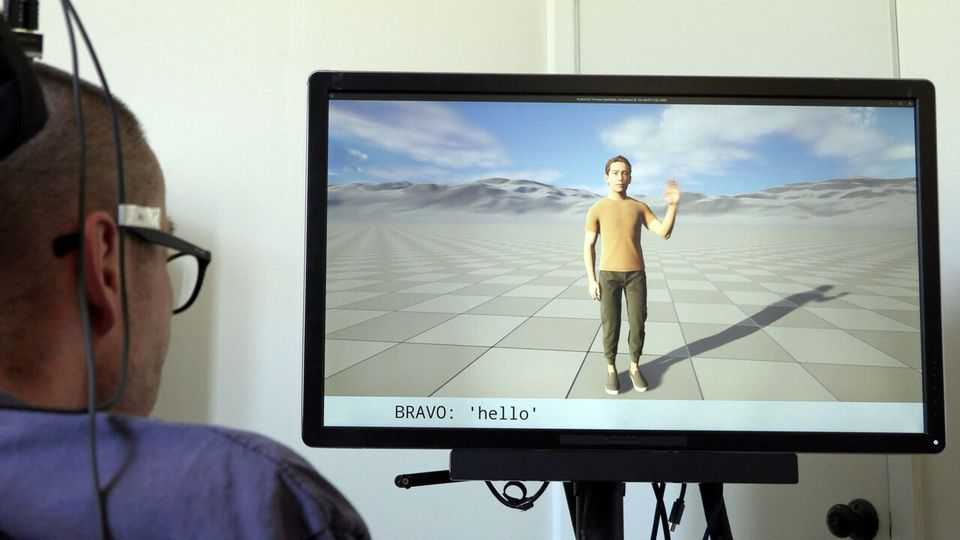
这是对全球因中风、创伤性损伤和退行性疾病（如肌萎缩侧索硬化症）而瘫痪的数百万患者而言令人鼓舞的成果。研究团队通过为每位患者在颅骨上开一个小切口，植入覆盖运动皮层（负责控制身体运动的大脑区域）大部分区域的传感器阵列实现了这一突破。该手术耗时超过两小时，部分原因是将传感器阵列与数据传输电缆连接的过程较为繁琐。但研究团队正在开发一种无线设备，可将手术时间缩短至40分钟。这些植入设备使张博士（Chang）及其团队能够采集患者尝试说出特定词语或做出特定手势时的信号。■
他们随后利用这些数据为每位患者训练了两个机器学习模型——一个用于解码语言，另一个用于识别手势——使他们能够以约三分之二的准确率同时重建两种行为。这是首次实现这种同时解码，使患者能够更生动地表达自己。仍有待提升。这两位初始患者只能使用约十个词汇和短语，如“你好”和“很高兴认识你”，以及类似数量的手势，如鼓掌或耸肩。但张博士及其合作者正致力于将这一能力提升至超过100种动作。他们还希望，由于传感器阵列在大脑皮层的广泛覆盖，未来或许能够不仅监测交流意图，还能追踪全身动作。
这或许能让瘫痪人士操控机器人和外骨骼装置，这些设备真的能改变人生。■
§065 热咖啡或致食道癌原题：Hot coffee could cause oesophageal cancer · 板块：Science & technology · 栏目：科技
一杯滚烫的饮品可能让人感到提神或温暖。但研究显示，饮用前最好让它冷却。9月8日发表于《国际癌症杂志》（International Journal of Cancer）的新研究，进一步支持了饮用任何高温饮料均会增加食道癌风险的证据。食道是连接咽喉与胃的消化道部分。这项新研究分析了英国近100万名成年人的饮茶和饮咖啡习惯数据。■
研究发现，偏好饮用“热”或“非常热”饮料而非“温热”者，后续患一种名为鳞状细胞癌的食道癌风险更高。饮用“非常热”茶或咖啡者风险是普通人的三倍，而饮用“热”饮料者风险则较低。若所有饮用极热饮料的英国人将其冷却至“热”温度，每年或可避免3200例病例中的440例。研究结果不受人们通常饮用茶或咖啡、是否加牛奶等因素影响，证明关键在于饮料温度而非成分。其他地区研究也发现，包括绿茶和马黛茶（南美流行的草药饮料）在内的热饮均与食道癌相关。
2016年，国际癌症研究机构（IARC，世界卫生组织下属机构）将饮用极热饮料列为“可能致癌”，意味着存在充分的证据表明其与癌症的因果关系，尽管尚不完全确定。人类研究的证据基于观察性数据（无法证明与癌症的关联具有因果性），但动物实验研究则指向相同方向。究竟多少度的饮料才算过热？当时IARC评估科学证据时，现有数据表明，饮料温度超过65°C时癌症风险会上升。最新英国研究未记录饮料温度，而是由参与者自行判断何为温热、热或极热。其他研究发现，英美国家人们通常饮用的热饮温度约为60°C。
那些自称“温饮”的参与者，实际上可能喝得比“温”还要凉一些。牛津大学的研究作者吉尔·里夫斯（Gill Reeves）表示，总体而言，饮品越凉越好。随身携带温度计插入外带卡布奇诺显然不太实际，也可能招来异样的目光。你不妨直接等待饮品自然降温。若需参考具体等待时长，可参考精品咖啡协会（Specialty Coffee Association）为专业咖啡品鉴师发布的“杯测协议”。该协会是行业贸易团体。专业人员在萃取咖啡粉四分钟后，会静置八到十分钟进行嗅闻，他们认为这段时间足以让咖啡降温至约70°C。■
这是首次用勺子啜饮（称为“是否可接受”动作）时的推荐温度。随后他们通常会等待五到八分钟，这通常会让咖啡温度降至约55°C。专家们认为，这是评估风味和口感的最佳温度。不过，如果你时间紧迫，只需寻求咖啡因的提神效果，往杯中加入冷藏的冷水或牛奶即可。■ After a free, evidence-based guide to health and wellness? Sign up to our weekly Well Informed newsletter.
§066 向成吉思汗学习的正确方式原题：The right way to learn from Genghis Khan · 板块：Culture · 栏目：文化
要在短时间内征服如此广阔的欧亚大陆，成吉思汗一定是个果断之人。如今那些渴望建立帝国的强势高管们，有时会希望他留下一本领导力指南。如果遇到表现不佳的销售团队，成吉思汗会怎么做？遗憾的是，除了少数（可能不真实）关于让寡妇哭泣的喜悦的引述外，这位强大蒙古帝国的见解早已湮没。无论如何，这些见解或许并不太有参考价值。成吉思汗会将成功归因于勇气、骑术和战略天才。实际上，贾雷德·戴蒙德（获得普利策奖的历史学家）认为，真正的原因是天气。 ■
通过对蒙古草原树木年轮的分析发现，成吉思汗崛起的时期异常湿润。更多降雨意味着更多牧草、更多羊奶滋养战士，以及更多备用战马使部落军队具备压倒性的机动性。若他早出生20年或南移200英里，或许只会是另一位地方军阀。"成吉思汗并未意识到（因为他不是树木年轮学家），他其实因生逢其时、地利得享天时之便。"戴蒙德博士写道。世界最受欢迎宗教的创立者可能也被高估了。诚然，耶稣具备个人魅力，但数千位圣人同样具备这种特质。他的福音得以全球传播，而其他宗教未能做到，这主要归因于超出他个人控制的因素。
两千年前，犹太人拥有异常高的识字率，并广泛分布于罗马帝国各地，因此耶稣的教义得以被记录、广泛传播并广为阅读。使徒保罗调整其教义以吸引非犹太人。当一位罗马皇帝皈依基督教后，基督教开始在欧洲传播；而当欧洲人后来殖民全球时，基督教又传播至各大洲，往往是以非常非基督教的手段实现的。戴蒙德博士最著名的著作《枪炮、病菌与钢铁》认为，地理和环境因素，而非文化，促成了西方的崛起。在《利润、先知、教练与国王》一书中，他以博学多才的头脑探讨领导力问题。这是一本引人入胜的读物。戴蒙德博士思考为何领导力必不可少，他描述了1964年一次前往新几内亚的考察经历，当时他目睹一个与世隔绝的高地村庄讨论某个紧迫问题。■
整个群体——或许只有100人——聚集在空地上。任何想发言的人都会大声表达。彼此熟识的每个人都清楚对方，因此无需领袖。然而当社会变得更为复杂时，必须有人协调决策。在2万人口的城镇中，不可能所有人都聚集在广场上大声喊叫。但更不明显的是，个人领袖究竟有多大影响。评估这一影响有两种方式。一种是传记式研究：分析伟人故事，试图找出他们与众不同的特质。另一种则是寻找统计数据。戴蒙德博士同时采用这两种方法。对总统进行实验颇为困难。你无法将卡玛拉·哈里斯置于一个复制的美国，以观察她是否可能比唐纳德·特朗普做得更好。但你可以设计自然实验，例如观察领导人因自然原因去世后会发生什么。■
一项研究分析了183位1875年至2004年间去世或被迫退休的政府首脑（heads of government），发现其后续经济增长平均来看与领导人未在任内去世的情况无明显差异。但这一平均值掩盖了显著差异：经济增长幅度的波动性更大。最可能的解释是，谁掌权确实至关重要。当经济能力不足的领导人下台时，经济增长往往会上升；而当有能力的领导人下台时，经济增长则会下降。然而，这种效应主要出现在专制体制中，因为领导人拥有更大不受约束的权力，而在民主体制中几乎难以察觉。同样的研究方法也揭示了企业领导人的影响。丹麦的一项研究发现，CEO去世后两年内，公司利润平均下降13%；相比之下，董事会成员去世则对利润无明显影响。■
简而言之，领导者至关重要。但如何成为更优秀的领导者？接受教育有助于提升领导力。当一位大学教育背景的总统或总理被一位从未完成高中学业的继任者取代时，经济往往表现更差。而能培养出经济记录最佳的政治领袖的学科，不出所料是经济学。但若想更细致地了解领导力的实践方式，不妨通过具体案例进行分析。戴蒙德博士（Dr Diamond）引用了博茨瓦纳首任总统塞雷茨·卡马（Seretse Khama）的例子，他带领这个贫穷落后的国家走上繁荣之路。1966年博茨瓦纳独立时，其前景看似黯淡：仅有七英里铺设道路、22名大学毕业生、无已知自然资源，且没有理由相信它能避免困扰后殖民非洲的暴力冲突。然而随后钻石资源被发现——大量钻石——其部落也有了明显的利益冲突动机。
卡马通过将矿权分配给国家而非部落（包括他自己的部落）来维持和平。他在牛津大学学习，深知现代世界，因此建立了现代、清廉的文官体系。他深植于本地传统，因而保持了人气。（他总随身携带一袋干蚕蛹，这是村里的一种零食。）他足够谨慎，避免卷入博茨瓦纳邻国南非的政治，尽管他个人憎恶种族隔离制度。在他执政期间，博茨瓦纳拥有全球最快增长的经济体。戴蒙德博士有力地论证了没有其他领导人能做到他所做的事。由此及彼，你或许可以得出结论：优秀的总统致力于代表整个国家，而非仅自己的部落；他们善于向顶尖人才学习；并避免与邻国发生冲突。■
然而，仍有许多人无需具备这些特质便能获得权力。许多选民喜欢那些具有部落色彩、好斗且蔑视专业知识的领导人；因此催生了近期民粹主义民族主义的崛起。最终，要界定何为优秀的领导人极为困难，因为许多有用的特质只有在适度的剂量下才发挥作用。坚韧是宝贵的，但若演变为固执则适得其反；勇气固然重要，但不可等同于鲁莽；同情心值得肯定，但不能软弱无能；远见卓识固然可贵，但若流于空想则无益。戴蒙德博士（Dr Diamond）提及但未深入探讨的一点是：在政治、商业及其他领域中，遴选领导人的群体有责任审慎选择；他们应保持对领导人实际能力的现实预期，并拒绝那些承诺立即带来黄金时代的骗子。这种责任往往被忽视。■
§067 无手机音乐会的兴起原题：The rise of the phone-free concert · 板块：Culture · 栏目：文化
“这台机器正在杀死我，”菲比·布里杰斯（Phoebe Bridgers）在新歌《Lost Boys》中唱道。她并未明确指出具体指的是哪种设备（或是否像 Rage Against the Machine 乐队那样，用此词作为对体制的隐喻）。但鉴于这首歌的主题是自我毁灭与停滞的成熟，她很可能指的是智能手机。然而在其他场合，布里杰斯对这些设备的态度却十分明确：她已禁止观众在世界巡演期间使用手机，巡演于9月14日启动。
■
为入场，持票者需将设备密封在袋子中并用磁力锁锁定，直至演出结束。这意味着禁止拍摄和拍照，这在其他演出中常让粉丝感到困扰。据手机制造商三星统计，英国每场演出的观众平均录制12.5分钟视频。她并非唯一执行此类规定的艺人。Alicia Keys、Childish Gambino和Jack White均在其演出中禁用智能手机。保罗·麦卡特尼爵士今年早些时候在洛杉矶的两场演出也禁止手机。鲍勃·迪伦即将开启的巡演也将全面禁用手机。对部分音乐人而言，怀旧情绪是其决策因素。保罗·麦卡特尼爵士称其洛杉矶演出“非常特别”：“就像过去大家演出的样子。”但反科技趋势并非单纯怀念过去。
与其说希望粉丝能从中获得更多，不如说希望他们能更深入地体会现场音乐的魅力。这种想法在于，正因为其短暂性，才让这种体验更加特别。抢到一张门票，意味着能与喜爱的音乐人和同好们面对面交流，无需屏幕隔阂。艺术家们表示，音乐会应被即时欣赏，而非用于社交媒体视频。在哈利·斯泰尔斯（Harry Styles）最近于曼彻斯特的演出中，观众需将手机收起，但会获赠一次性相机及一张便条：“感谢你真正与我共度此刻。与朋友们尽情起舞吧。”这种安排营造出稀缺感——唯一能亲身体验演出的方式就是亲临现场——这或许只会加剧粉丝的“错失恐惧”。音乐人则认为，这种独占性正是其魅力所在。■
迪伦先生表示，他的演出将实行“无设备”政策，这会让“场合更加独特”。音乐的本意是连接表演者与听众。艺术家们表示，他们讨厌看到满眼的iPhone屏幕而非灿烂的笑脸。瑞典金属乐队Ghost在2025年巡演期间禁止观众使用手机，乐队主唱称这让他感受到“观众与乐队之间日益扩大的距离”。加拿大DJ凯tranada则更直白地指出：“从我这边看，这看起来很尴尬。” ■
§068 世界最关键栖息地反未受善待原题：The world’s most essential habitat does not get its proper due · 板块：Culture · 栏目：文化
正如存在魅力十足的物种，也存在魅力十足的栖息地。事实上，二者常相互重叠。雨林拥有美丽的鸟类和蝴蝶，非洲草原栖息着大象和狮子。而那些缺乏魅力的栖息地则孕育着同样无趣的物种：螨虫、马陆、千足虫，还有 slime moulds（黏菌）和 woodlice（ pill bugs，潮虫）？线虫，线虫，线虫。这些不被喜爱的生物，加上无数蚯蚓，构成了地球上最缺乏魅力的栖息地——土壤。
■
然而，弗兰克·阿什伍德（Frank Ashwood）认为，土壤及其生物群落是所有生态系统中最重要的。没有土壤，雨林和草原将不复存在——这些更具视觉冲击力的生态系统，实际上都根植于土壤之中。农业同样如此，自智人学会耕种以来，它便为人类提供了粮食。若追求生物多样性，土壤正是其源泉。据阿什伍德博士介绍，一茶匙健康土壤中可容纳多达60亿微生物；温带森林或草地每平方米土壤中，约有300条蚯蚓、5万只跳虫、10万只螨虫和500万条线虫。此外，对于担忧全球变暖的人而言，土壤是将碳固定在大气之外的绝佳方式。例如，针叶林土壤每公顷储存的碳重量，相当于一架波音747飞机。切勿忽视土壤，否则将陷入危险。■
部分原因在于土壤本身如同尘土般难以察觉。一旦接触，它便会无处不在。若沾染伤口，医生可能会建议注射破伤风疫苗并服用抗生素。但还有另一层原因——可见性。空气与水透明可见，而土壤却并非如此。栖息其中的生物可能拥有与森林生灵同样精彩的生活，却始终隐匿于人类视野之外。然而，一旦挖掘它们，所见景象令人震撼。例如，某些螨虫进化出抗冻蛋白，得以在南极洲附近岛屿的土壤中生存。伪蝎则学会搭乘飞虫如甲虫前往新栖息地。黏菌形成的觅食网络效率极高，规划者可借鉴其模式设计公共交通网络。■
木虱科中有一种物种会以几乎在无脊椎动物中罕见的方式进行交配，使一方守护含幼虫的洞穴，另一方则外出觅食。线虫（nematodes）——据估计占所有个体生物的80%——已被科学家从西伯利亚冻土的古代样本中复活。在阿什伍德博士看来，人类并非良好的土壤共生体。现代机械化农业不仅导致土壤侵蚀，还通过压实土壤颗粒损害剩余土壤，阻碍生物体的移动。结果造成物种多样性的巨大损失。不过在世界部分地区，正出现反向趋势。“免耕”和“再生农业”旨在保护并提升现有土壤生物多样性。若实施得当，这种方法可能比传统现代农业更具盈利能力。■
如果大卫·阿滕伯勒爵士（Sir David Attenborough）正在寻找一部告别之作，那么他不妨让摄影团队深入全球土壤。旅行预算可能与更传统的野生动物纪录片相当，因为阿什伍德博士（Dr Ashwood）的案例涵盖非洲、亚马逊、澳大利亚、新西兰、乌克兰，甚至苏格兰高地，以及北美和他本土的英格兰。与其说是《地球生命》，不如说是《地球中的生命》。■
§069 福山是最被误读的公共知识分子？原题：Is Francis Fukuyama the most misunderstood public intellectual? · 板块：Culture · 栏目：文化
当弗朗西斯·福山这位40岁的政治学家于1992年出版《历史的终结与最后的人》时，该书曾引发广泛赞誉。随着苏联解体和冷战结束，世界已抵达“人类意识形态演进的终点”，他指出，西方自由民主的普遍化标志着“人类政府的最终形式”。此后将不再有值得为之奋斗的重大事业。■
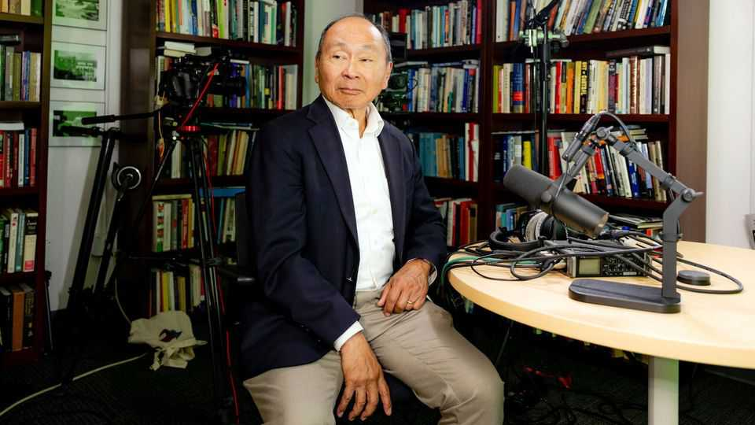
特朗普掀起全球民粹主义浪潮后，福山的著作成为自由主义傲慢的象征。谁能想到意识形态的斗争已经终结了呢？在充满趣味的回忆录中，现年73岁的福山试图澄清事实。他指出，自己在《历史的终结》一书中的真正论点远比千篇一律的社论和文章中所描绘的要精妙且复杂得多。福山并非像卡珊德拉那样发出警告却无人相信，而是一位先知，他所说的“预感”在当时太过微妙，未能被时代所接受。
福山从黑格尔及其阐释者那里继承了历史由对尊严的追求推动的观点，这一原则在法国大革命后传播，并在冷战中西方的胜利达到顶峰。但《历史的终结》一书的后半部分描绘了更黑暗的未来。他借用尼采的观点指出，有些人不满足于平等，渴望被认定为优于他人。在无斗争、无风险、无野心的世界里，他们将反抗这种无血无泪的和平状态。福山在1992年写道，历史的终结将是一个“非常悲伤的时期”，其中“勇气、胆识和想象力”将被经济计算和技术官僚取代。人们最终会因某种无聊而重新陷入“斗争”。
这段被忽视的书稿内容如今看来颇具先见之明。“我们所见的左右翼极端主义在某种意义上是对自由社会所创造的扁平化视野的反抗，这些社会要求我们无止境地开放、宽容和不带评判”，福山在其回忆录中写道。“最后一个人的领域”是一本引人入胜的读物。部分原因在于福山个人故事的吸引力。他的祖父母在20世纪初从日本移居美国，是第二次世界大战期间被强制迁移并关押的12万日裔美国人之一。他由自由派父母抚养长大，却叛逆地在康奈尔大学师从保守主义哲学家艾伦·布鲁姆。他曾呼吁美国出兵推翻萨达姆·侯赛因——“随意地”，他承认——福山最终与他的新保守主义朋友公开且激烈决裂。
后来，他成为特朗普的激烈批评者，这一转变源于美国右翼更广泛而深刻的分裂。在思想极化和意识形态僵化的时代，这种开放心态令人耳目一新。福山先生将这一事件转化为对如何改变观点的思考。“年龄和地位……很有帮助，”他指出，“我处于人生的一个阶段，真的不必在意老朋友对我的看法。”此外，他对伊拉克战争的立场转变“实际上是一种解放”，他写道，这让他感到自己也能在其他议题上改变立场，从国家角色到自由市场的过度扩张。福山先生还是一位博学者。他热衷摄影；他精心打造复杂的椅子、书柜和桌子。他操作无人机，编写机器人程序。这些多样的爱好是其思想兴趣的另一面，同样广泛而深入。■
福山先生对18世纪和19世纪的社会理论充满热情，他推崇亚当·斯密、大卫·休谟和马克斯·韦伯等思想家。他的回忆录提供了琳琅满目的内容，涵盖信任、人性以及大型官僚体系的运作机制。他并未将研究局限于厚重著作的页面，而是转型为 prolific blogger 和 podcaster，积极拥抱通俗媒体而非对其嗤之以鼻。在这些方面，福山先生可跻身美国近几十年最杰出的公共知识分子之列，他无疑也是被误解最深的。■
§070 值得看的艾美奖作品（及一部不必）原题：The Emmy winners worth your time (and one that isn’t) · 板块：Culture · 栏目：文化
9月14日，艾美奖表彰了小屏幕上的大热作品。但评委们并不总是准确。（《火线》（The Wire），有史以来最佳电视剧之一，其五季播出期间从未获奖。）我们的评论员挑选了那些真正值得获得奖杯——以及你宝贵时间的作品，以及一部你应跳过的剧集。《外交官》（The Diplomat）这部扣人心弦的政治惊悚剧第三季中，格蕾丝·彭（Grace Penn，艾美奖当晚的获奖者之一，由艾莉森·詹妮（Allison Janney）饰演）成为美国总统。该剧探讨了冷酷的实用主义与婚姻危机，角色们在个人野心与公共职责之间权衡。《DTF圣路易斯》（DTF St. Louis）福洛伊德（Floyd）已被发现死亡。■
■
在这一部迷你剧集中，叙事在警方调查与往事之间切换，揭示了弗洛伊德与克拉克（同事）的友谊、他与妻子卡罗尔紧张的关系，以及克拉克与卡罗尔的婚外情。这部关于欲望、秘密与操控的引人入胜的故事令观众不禁疑惑：这是什么情况？《黑客》（Hacks）珍·斯马特（Jean Smart）凭借饰演的喜剧演员黛博拉·范斯（Deborah Vance）赢得五座艾美奖。在令人满意的最终季中，黛博拉已辞去深夜电视节目工作，试图重建声誉——尽管面临竞业禁止条款和禁制令的限制。《斯科塞斯先生》（Mr Scorsese）一部关于美国最伟大电影导演之一的五集纪录片。他回顾了自己在曼哈顿西西里聚居区的童年、曾想成为神父的过往以及对电影的痴迷。然而这并非一部吹捧之作：斯科塞斯先生坦率谈论了自己的职业失败与毒品滥用问题。
《皮特》这部引人入胜的医疗剧今年荣获六座艾美奖，实至名归。它被称作“美国失败的肖像”，但这个说法并不完全准确：社会问题在急诊医学题材的故事中本就占据重要地位。该剧更侧重展现人们在逆境中竭尽全力的坚韧精神。《慢马》这部热门剧集讲述英国国内安全机构MI5的虚构边缘人物。加里·奥德曼饰演的杰克逊·兰姆是位肮脏且爱放屁的间谍，负责监管形形色色的特工团队；克里斯汀·斯科特·托马斯则饰演迪安娜·塔文纳，这位超凡能力、心机深沉却始终冷静的情报官同样令人印象深刻。《寡妇湾》汤姆·洛夫蒂斯渴望将位于新英格兰海岸的寡妇湾打造成旅游胜地，镇长认为这里具备潜力——问题在于，当地居民却谈论着鬼怪、诅咒和致命浓雾。■
这部惊悚喜剧成为最大赢家，斩获14座艾美奖；马修·瑞斯（Matthew Rhys）凭借两个主演奖创造了历史，其中一项是因他在《Tom》角色中的演绎。值得关注的还有《Pluribus》：外星信号引发人类意识的重新编程。仅有少数人不受“心灵黏合剂”的影响，这种神秘力量将全球人口凝聚为单一意识体。这部令人毛骨悚然的反乌托邦剧集获得六座艾美奖，提出了大胆而深刻的问题。但剧集在初始谜题之后却令人失望地乏味无趣。■
§071 学校还该教草书吗？原题：Is it still worthwhile to teach cursive in school? · 板块：Culture · 栏目：文化
"要警惕那些字迹如芦苇随风摇曳之人"，孔子曾如此警告。这位古代哲人若看到许多文学巨匠的字迹，恐怕会颇感疑虑。列夫·托尔斯泰的笔迹杂乱无章，倾斜严重，其手稿之密集繁复，堪比其史诗作品。欧内斯特·海明威的字迹则如醉汉般斜斜地爬满纸面，无论他是否真的饮酒。今年九月，当学生们重返教室时，校方、家长与教师们正就学生是否应学习手写（以及以何种风格）展开讨论。
在iPad取代羊皮纸的时代，你或许会认为这类问题已过时，但手写体并未被抛弃。连笔字，一种笔画流畅连贯的书写风格，正悄然复兴。美国已重新拥抱这种“扭扭歪歪”的书写方式。2010年，美国“共同核心”课程标准（Common Core）曾将手写体排除在教学之外，转而强调键盘技能，但此后超过半数州已将手写体重新纳入课堂。本学年，宾夕法尼亚州和新泽西州加入德克萨斯州、加利福尼亚州、佛罗里达州等州列，要求学校必须教授连笔字。其他国家也在强调手写体的重要性。加拿大和阿根廷的部分省份已恢复教授连笔字，或从更早年级开始教学。在英国，手写体通常从七岁左右开始教授，政府于2025年推出新版“书写框架”以提升手写教学水平。■
意大利和瑞典正逐步告别平板电脑和屏幕，转而使用书籍和手写笔记。在其他地区，连笔书写早已被视为一项珍贵技能。在法国，教育者常教授优雅的连笔书法；在越南，手写和书法课程正日益流行。连笔书写曾适应过去的书写工具。抄写员们精进笔迹，使文件易于阅读。他们的鹅毛笔使用时间更长，若在字母间不提起笔，还能减少墨渍。（后来，当金属笔尖和圆珠笔流行起来后，更简单的书写风格开始盛行。）但如今人们拥有语音输入软件和AI聊天机器人。那么为何连笔书写又重新流行起来？其回归得到了科学的支持。立法者引用研究，指出手写对记忆力、批判性思维和精细动作协调能力等多方面都有益处。■
一项常被引用的研究由挪威科技大学神经科学家奥迪丽·范德梅尔（Audrey van der Meer）进行，比较了儿童和年轻人在书写连笔字、绘画和打字时的大脑活动差异。她发现，当进行手写和绘画时，大脑以“完全不同的方式”参与活动，扫描结果显示学习与记忆相关区域的活跃度。其他研究显示，连笔字还有其他益处，包括提升阅读能力和拼写水平。然而较少有研究直接对比连笔字（joined）与印刷体（unjoined）的书写风格。一些学者对连笔字远胜其他书写方式持怀疑态度：亚利桑那州立大学教授史蒂夫·格雷厄姆（Steve Graham）认为，“用特定书体书写不应使人在认知能力上更具优势”似乎不太可能。■
或许连笔字最有力的辩护理由是书写速度：一些研究发现，连贯的环形笔迹能提高书写效率，但也有研究认为，混合连笔与非连笔字母的书写方式速度最快。连笔字的复兴也与文化有关。人们担忧年轻人无法辨认祖先的笔迹或历史文献中的连笔字。在美国，人们常以宪法和《独立宣言》的书法为例子。能够解读这种书写风格，被认为能培养“知情且积极参与的公民”，尽管现在已有打字版本。通过手写体，人们可以追溯历史。大多数在学校教授的书写体都源自意大利、德国、法国和英国的连笔字风格。■
殖民时期，斜体英文字体传播至美洲和印度，法国的装饰性圆体字则传至南美和亚洲。纳粹甚至干预了笔记书写：1941年阿道夫·希特勒（Adolf Hitler）禁止使用哥特体德国连笔字，转而命令学生使用更简单的拉丁字母书写。学者们认为禁令的目的是为了使占领区民众的交流更统一且更易读。如今的教育者则有更现代的担忧。一些人呼吁强调手写，认为这可能让学生产生依赖AI完成作业的倾向。格雷厄姆教授指出，教师们希望确保聊天机器人不会取代儿童的书写，因为“写作涉及思考”。写作有助于年轻人（及成年人）组织信息并产生想法。然而，连笔字消耗了宝贵的课堂时间。■
美国书写协作组织的凯瑟琳·赖特（Kathleen Wright）指出，一些年轻教师自己并未接受正确的连笔字教学，这意味着他们需要接受培训和指导。这一时间本可以用于教授其他技能或更简单的书写风格。当学生离开教室后，他们的书写往往也会发生变化。有些人继续使用流畅的连环字母，而另一些人则改用方正的块状字体。在工作几年、频繁使用打字机后，许多人发现自己几乎无法握笔。他们不禁质疑学校是否教会了他们，又是否会教他们的孩子掌握正确的书写技巧。■
§072 格洛丽亚·斯泰纳姆为美国女性改变世界原题：Gloria Steinem changed the world for American women · 板块：Obituary · 栏目：讣告
她的蓝色丝绸礼服成了她的噩梦。礼服过于紧身，拉链在系上时会勾住她的皮肤，裙摆高至大腿根部，露出髋骨。她的女仆将一整个塑料干洗袋塞进她前襟，边塞边解释道：“每个人都塞得满满当当。” 她的意思是，男人们把干洗袋塞进裤袋，而Gloria Steinem则左手托着酒托，双腿一弯做出“兔跳”动作，俏皮地说：“先生，您不能碰兔子。” 1963年夏天，她在东59街的Playboy俱乐部秘密工作，为《Show》杂志提供了精彩故事。 ■
她双脚因三英寸高跟鞋而肿胀疼痛，几乎无法行走。她回复的广告承诺每周收入200至300美元；按每天八小时计算，她实际只赚到12美元。她还因迟到、丝袜破损、兔耳歪斜等种种小事面临扣分风险。事后看来，这并非明智之举。她原本希望撰写一篇揭露女性被剥削的犀利报道，但许多评论者却认为这话题轻浮。她无疑只是个漂亮的脸蛋，甚至她纽约杂志的编辑兼导师克莱·费尔克尔（Clay Felker）部分出于她“双腿出众”才聘她。于是她又回到时尚、台灯和汉堡包的101种做法上。然而她对这份工作深感厌恶。她渴望撰写那些当时专属于男性的犀利政治报道，但从女性的视角出发。十年后，1971年，她创办了一本杂志，正是这样做的。■
《Ms》杂志旨在彻底颠覆那种温柔的家庭主妇观念。这本杂志由女性撰写并主导运营。试刊号封面是一位泪流满面且怀孕的蓝肤女神迦梨，她八只手臂上分别持着钟表、电话、镜子、煎锅、方向盘、打字机、耙子和熨斗，展现女性任务的荒谬复杂性。首期完整刊物的封面则呈现神奇女侠，她不久前被DC漫画公司剥夺了超能力，如今再度以魔法腰带闪耀登场，将恶徒从天际拽下并对抗不公。内容包括《家务应有报酬》《体毛：最后的疆域》以及一份著名女性名录，她们坦承“我们曾进行过堕胎”。这篇文章有其特殊意义——她本人1957年在伦敦曾做过一次堕胎手术，当时在英国堕胎同样非法，与美国情况如出一辙。■
她从未向任何人提起过这件事；这是她的选择，她的生活。但1969年的一天，她前往格林威治村（Greenwich Village）采访一场女性聚会，发现她们正在讨论自己的堕胎经历。她看到姐妹们彼此交谈的安慰力量，比较各自的困境，坦露那些无法向男性提及的私密话题。Ms杂志的使命是成为这样一个论坛，但规模要覆盖全国。（它取得了成功；首批30万册在八天内售罄，而读者来信栏目更是爆满。）她自己的使命不仅是撰写充满愤怒的社论和书籍，还要在全国各地的书店、商场和校园举办讲座，并组织“谈话圈”活动。同年，她与贝蒂·弗里丹（Betty Friedan）、两位民主党众议员贝拉·阿布祖格（Bella Abzug）和希丽尔·奇什姆（Shirley Chisholm）共同创立了全国妇女政治协会（National Women’s Political Caucus）。
其主要目的是让更多女性进入政界，但接下来呢？显然，在她看来，同工同酬；便捷或免费的托儿服务；对色情内容实施更严格的管控，以及堕胎选择权。所有这些都应由平等权利修正案（Equal Rights Amendment）予以保障，该修正案将宪法中男女完全法律平等的地位予以确立。它不会一夜之间终结父权制，甚至可能不会让男性在厨房里更勤快些，但这种情况终将到来。她并非厌男者。她拥有足够多的幸福关系，深知男性同样可以承担养育责任。她的父亲也教会了她这一点。■
尽管父母最终离婚，但十岁时的格洛丽亚总能得到父亲的照顾，因为她的精神不稳定的母亲无法照看她。（父亲离开后七年，她不得不独自照顾躺在病床上的母亲，用三明治和一角硬币大小的馅饼喂养她；直到高中毕业，教育始终是零散的。）他们是一个四处奔波的家庭，跟随父亲古董买卖的足迹迁徙。结果，对格洛丽亚而言，定居始终是暂时的，开放的公路才是家。如今，沿着高速公路旅行已成为她的工作，这让她想起上世纪50年代末在印度与朋友走访村庄，向穷人讲述甘地事迹的日子。在美国，她也从未独自前行。一方面，起初她对公开演讲充满恐惧；另一方面，她的自尊心也极其薄弱。■
她那长发和飞行员墨镜，看似光鲜亮丽，其实主要目的是遮掩面容。她曾担心自己某天也会像母亲那样崩溃。媒体将她视为女性运动的耀眼领袖，但她并不想背负这个标签。（这标签导致了她与弗里丹的决裂，也使运动阵营分裂。）更实际的是，她希望身边有个旅伴，不带她那种中产阶级的精确措辞和史密斯学院的优等生背景；一个能从贫困或黑人底层女性视角出发辩论的人，证明女性解放斗争是所有女性的共同事业，无论身处何地。这场斗争延续至20世纪末，并进入21世纪。尽管许多州支持《平等权利修正案》（ERA），但它从未成为法律。■
罗伊诉韦德案（Roe v Wade）于1973年使堕胎在全国合法化，却在2022年被推翻。一位总统候选人因性别歧视被狂热地拒绝，但女性在许多方面已成为自主的行动者。当她最终于2000年结婚时，不是她改变了，而是文化发生了变化。多亏了这场运动，女性学会了拒绝作为男性的附庸角色，开始掌控自己的生活。但她并未为自己感到骄傲，而是为她们感到骄傲。纽约市的花花公子俱乐部（Playboy Club）以其紧身的兔女郎制服和可调节的蓬松白色尾巴而闻名，于1986年关闭。■
§073 别怕“继承统治”原题：Don’t fear the inheritocracy · 板块：其它 · 栏目：其它
在未来数年，美国的“沉默世代”和“婴儿潮世代”——即1920年至1960年间出生的人群——将向子女转移约110万亿美元的财富。一些人认为，富裕国家继承财富的上升，是更广泛代际转移现象“巨额财富转移”的一部分，这威胁着精英主义和资本主义。请允许我们提供一个更乐观的视角。我们历时十年，基于行政税收数据构建了美国富裕阶层的完整图景。私营企业主占据最顶端1%的群体，约有300万名此类企业主，平均财富约为2500万美元。
他们在全国各地经营着自己创立、购买或继承的各类不那么光鲜的行业企业。这些“无处不在的百万富翁”集体持有的财富，超过福布斯400富豪的十倍以上。其中仅四分之一是通过继承获得企业。如果说继承贵族制正在形成，显然它尚未真正到来。传统叙事多聚焦于金融资产和不动产的传承，但真正意义上的财富大转移故事，是当这些无处不在的百万富翁去世后，家族企业将如何传承。“父亲购置，儿子建设，孙子出售，孙儿再乞求。”这句古老谚语揭示的宿命，在数据中得到印证。仅12%出身顶级1%的子女能延续家族地位，而40%则会跌出顶级1%，甚至整个前五分之一阶层。■
尽管天赋与毅力可能部分具有遗传性，但两者均值回归现象或许能解释为何家族财富在代际间逐渐衰减，尤其当家族核心资产是经营性企业时。企业主子女相较第一代创业者更少将利润再投资于企业，且因自幼富裕更易挥霍无度。我们发现私人飞机与超级游艇拥有者中，继承私人企业资产者占比异常突出。例如，密歇根州一家砂石开采企业的第三代所有者拥有众多游艇，包括名为Sassy的游艇，曾被Katy Perry造访。研究指出，多数继承者在十年内便花光遗产，而由家族成员担任首席执行官的企业通常表现逊于非家族CEO企业。■
正如沃伦·巴菲特所言：“若通过挑选2000年奥运会金牌得主的长子来组建2020年奥运队伍，这在竞技体育中将是彻底的荒谬。”为何经营企业就该有所不同？当家族企业在代际传承后出现停滞，将为那些希望竞争或收购该企业的外部力量创造机会。以拉里·米勒（Larry Miller）的经历为例。他职业生涯的起点是退学离开犹他州，前往盐湖城的汽车零件店工作。当他的努力未被管理层认可后，他选择另寻出路，最终在一家维修店和几家汽车经销商处找到工作。在查克·斯蒂文森（Chuck Stevinson）的丰田经销商处，米勒将零件部门从全国第961名提升至全国第一，仅用了数年时间。
他曾在斯蒂文森公司（Stevinson）工作八年，最终升任运营经理，负责监督五家经销商门店。他的发展势头随后遭遇了世袭制的阻碍。斯蒂文森告诉米勒先生，他将被降职，只负责管理一家门店，以便为老板的八个儿子腾出空间，让他们在公司内担任领导职位。于是米勒先生离开公司，不久后买下了另一家本地经销商门店。最终，他建立起一个涵盖超过60家经销商门店、11家事故维修中心、多家电影院连锁以及NBA球队犹他爵士队（Utah Jazz）的庞大商业帝国。在美国，当家族企业无法跟上行业变革时，像米勒先生这样的新进入者就会脱颖而出。美国仅有约20%的大企业由家族控制，而这一比例在其他国家则约为40%。■
家族企业占比更高的国家往往报告较低的人均收入和整体规模较小的企业。当家族企业面临转型时，另一个选择是套现。亿万富翁们通常认为将企业留给继承人反而得不偿失。多年来，私募股权投资者一直瞄准中型市场的家族企业。急躁但富有进取心的工商管理硕士们开始关注。与其在私募股权公司做助理般辛苦工作，他们选择筹集“搜索基金”直接收购并经营这类企业。在某些情况下，私募股权与搜索基金交易会加速企业的增长与专业化；在另一些情况下，债务缠身的企业则被拆分出售。无论是通过哪种路径，那些追求创新与重生的非继承人都有机会获得这些机会。■
我们视这些强大的自我修正机制为对美国财富大转移及其对经济活力影响持更乐观态度的理由。但有一个领域我们认为需要改革。在富裕国家，继承税和遗产税体系已大幅削弱，使得资产所有者能够将庞大的企业传给下一代，而几乎不缴纳或根本不缴纳相关税款。在美国，这种削弱不仅源于日益富裕的捐赠阶层的影响，还因为许多拥有企业的立法者自身也从税收漏洞中获益。为保障国家财政健康和公众对税法公平性的整体认知，重建这些体系至关重要。■ 埃里克·齐克是芝加哥大学布斯商学院教授，欧文·齐达是普林斯顿大学教授。
他们合著了《无所不在的百万富翁：谁才是真正的美国富人，以及他们如何致富》■
§074 债市不只是发烧原题：Bond markets aren’t just running a temperature · 板块：其它 · 栏目：其它
Mohamed El-Erian撰文
“高烧”是美国财政部前部长Scott Bessent用来形容美国政府债券收益率飙升的比喻，他以此为由为一项有争议的干预措施辩护，旨在帮助市场恢复常态。他同时承诺，若市场混乱持续，将采取更激进的干预措施。然而，更贴切的比喻应来自林业领域：债券市场正试图进行一场控制性烧除，以腾出空间给更具潜力的经济增长驱动力。而Bessent的干预举措可能反而引发更大火势，其影响可能远超美国。■
过去两周左右，美国十年期国债收益率从不足4.7%攀升至接近5%，此后一直徘徊，直到9月14日首次突破这一曾被市场观察者视为极不可能达到的水平（自2023年以来首次）。三十年期国债收益率的涨幅更为显著，目前已突破5.35%。此时，预算利息支出已大幅上升，占税收收入的五分之一左右。美国正以近二十年来前所未有的借贷成本填补预算赤字，同时需重新融资十年前以远低于当前利率发行的到期国债，其债务规模十年间翻倍至40万亿美元。这种影响已超越财政领域，包括政治敏感领域如房贷，目前30年期房贷利率已超过7%。■
这加剧了选民在中期选举前最关心的问题：可负担性。同时，这也会推高企业借贷成本，并可能将资本从今年持续创纪录高点的股市中转移出去。难怪贝森特先生急于出手干预。8月19日，他宣布将通过所谓“扭曲操作”瞄准更长期政府债券的到期时间：通过购买这些债券并发行极短期债券来实现，或（尽管尚未正式确认）动用存放在财政部通用账户中的1万亿美元资金，该账户本用于现金管理。这项非常规干预的初衷随着批评声的增加而不断演变。在不同阶段，它被描述为压低收益率、改善市场运行效率以及弥补夏季流动性不足。■
这一现象背后的核心逻辑是“发烧”概念：即收益率的飙升是暂时且可逆的现象，通过干预可以加以应对。部分推动收益率上升的因素确实符合这一解读。然而，对特朗普政府而言，真正困扰的是这些因素并非根本性驱动因素。因此，即便财政部于9月9日宣布的债券回购计划规模超出最初预期，收益率仍持续攀升并不令人意外。能源价格的上涨，包括布伦特原油突破每桶100美元、国内柴油价格超过每加仑6美元（创历史新高），被视为近期市场波动的重要推手；同时，对美联储独立性及其“反应函数”（即其如何根据经济变化调整政策）的不确定性，也被视为影响市场的重要因素。■
政府预计这些因素会随时间推移逐渐减弱，因此认为有必要采取过渡性干预措施。然而，这些因素只是加剧了已有的现象，而非根本原因。市场对通胀的定价以及美联储信誉的评估，表明前者已被控制、后者保持稳定，这已足够说明问题。推动收益率上升的最重要因素另有其源，且不太可能只是暂时现象。这反映了债券融资需求与满足该需求而不抬高收益率能力之间的根本性失衡。债券需求因企业资本支出大幅增加而被大幅推高，其中很大一部分与人工智能的开发和应用相关。这导致金融界要求更高的回报率。■
这种更高需求正值历来稳定的买家和持有者不再那么可靠之际。中国在高度紧张的国际局势下正减持美国国债。海湾国家正调整资源分配以满足国内需求，包括重构供应链和重建工作。日本在外汇市场的干预措施包括抛售美国证券以筹措美元，用于购入日元。挪威主权财富基金，这一传统长期持有者，也正在重新评估其对美国国债的敞口。由此产生的失衡只能通过提高收益率来解决，除非需求崩溃且经济大幅衰退，这不符合美国的利益。人工智能的生产率提升潜力则带来了可持续更高经济增长的希望，这种增长有助于改善债务比率和收入分配。■
释放这一潜力同时控制风险，不仅是经济优先事项，更是国家安全议题。市场并非在发烧，而是在为有前景的投资腾出空间，以实质性提升当下及未来世代的福祉。正确的政策应对应是助力创造新资本支出的空间。这意味着政府减少借贷以填补赤字，逆转诸如过度军事化贸易、投资及支付体系等政策举措，这些举措正在疏远外国投资者。相反，反复的市场干预则可能加剧波动性，污染美元，增加系统性金融不稳定的概率，并导致经济资源错配。此类干预还可能威胁美国国债和美元的全球地位。■
所涉及的利益远不止于如何在实现颠覆性创新的同时限制其附带损害和意外后果。美国在债券收益率和人工智能领域发生的事情不会止步于此，其影响已波及全球，尤其是在全球经济已大幅丧失其物理、金融和人力韧性之际。是时候停止将更高的美国国债收益率视为异常现象了。它们正发出明确要求进行调整的信号，以更有序的方式释放更强劲的生产率和增长动能。■穆罕默德·埃里安（Mohamed El-Erian）曾担任PIMCO首席执行官。